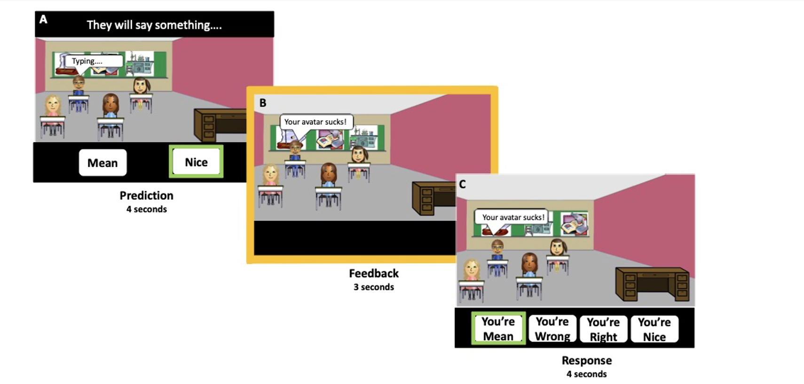
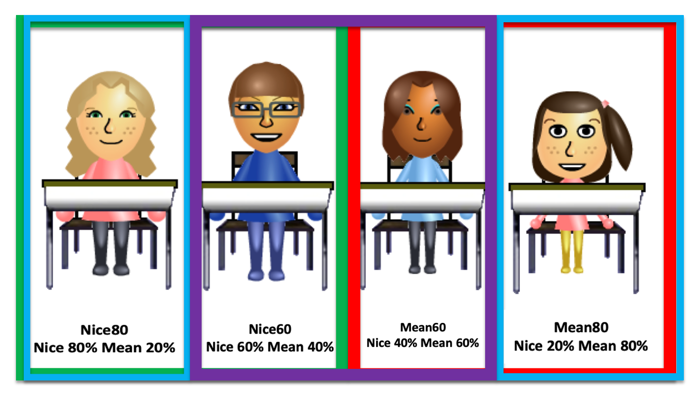
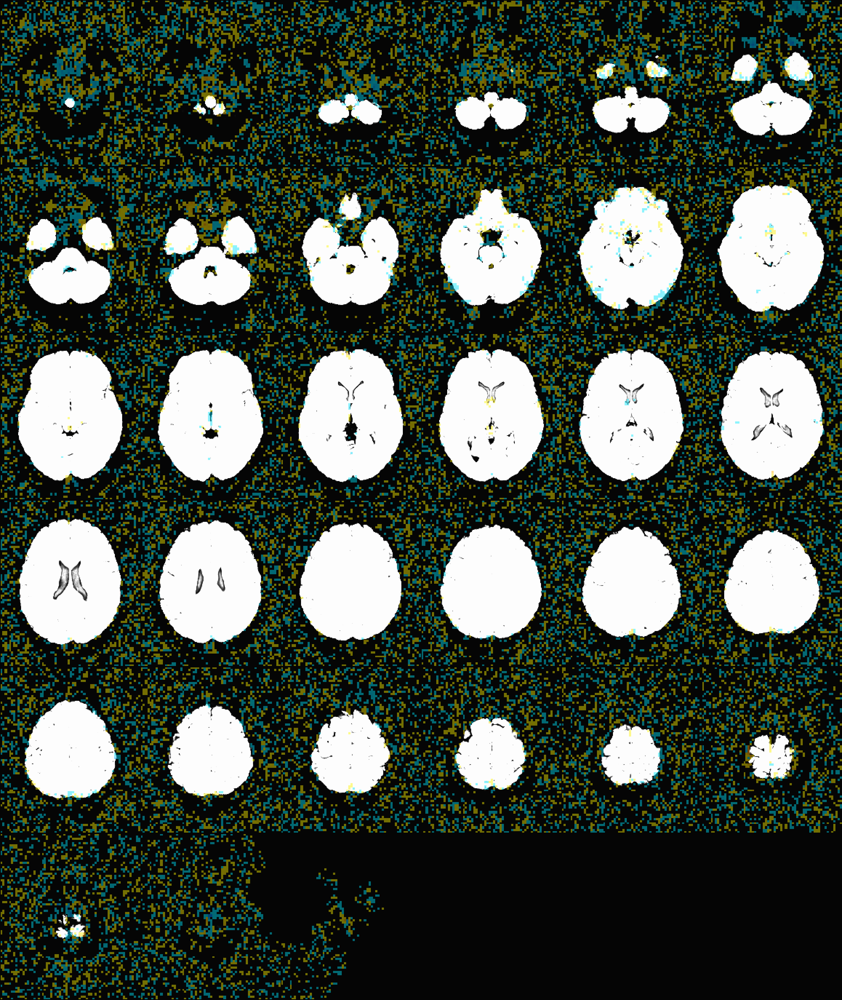
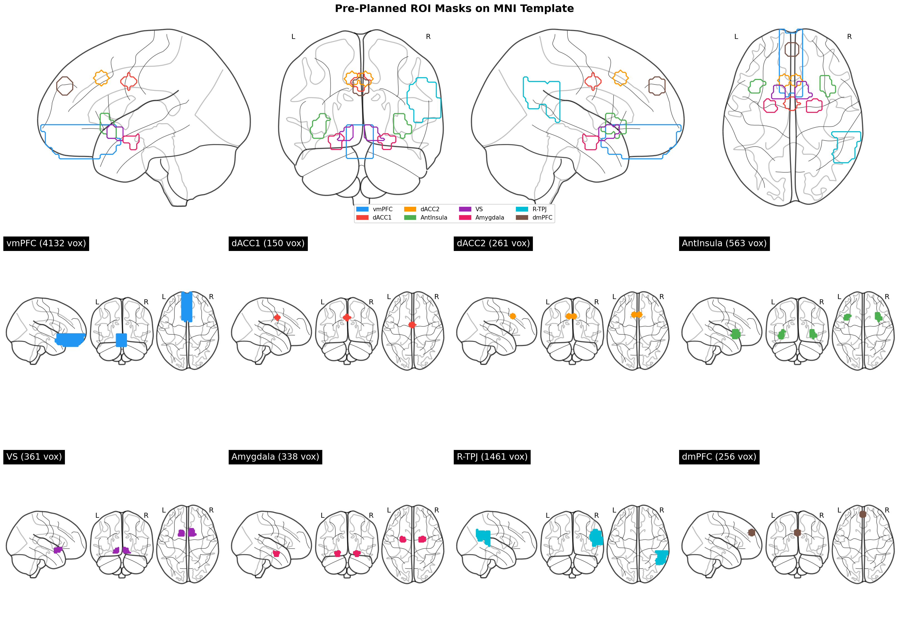

Social-feedback learning: RSA and inter-subject correlation pipeline
pipeline/.
1Participants
The analytic sample was the 33 adolescents flagged Usable_fMRI == 1 in the study clinical table, each with four usable functional runs. Trait social anxiety was the SCARED 1 child-report social subscale (scared_ch_social), carried as a continuous predictor rather than a group split. The subject list is fixed in pipeline/config.sh.
pipeline/config.sh · single source of truth: paths, the 33-subject list, the GLM label, masks, clinical
#!/bin/bash
# =============================================================================
# RSA-Learn · pipeline/config.sh - single source of truth for the whole pipeline
# =============================================================================
# Every pipeline script sources this. Change a path or the subject list HERE and
# nowhere else. Runs on either Temple cluster (paths are identical on both).
#
# repo of record : CR1 (cla19097 / 155.247.67.31) - parent LEARN study lives here
# recommended run-box : CR2 (155.247.66.164) - more free cores, less contention
# =============================================================================
# --- roots -------------------------------------------------------------------
export TOPDIR="/data/projects/STUDIES/LEARN/fMRI"
export RSA="$TOPDIR/RSA-learn"
export BIDS="$TOPDIR/bids" # raw BIDS (never modified)
export SSW="$TOPDIR/derivatives/afni/ssw" # SSW anatomical warps (per subject)
# --- pipeline outputs (all under RSA-learn) ----------------------------------
export EVENTS_FIXED="$RSA/events_fixed" # 01 output: canonical event labels
export TIMING="$RSA/timing" # 02 output: run-wise .1D timing files
export GLMDIR="$RSA/derivatives/afni/IndvlLvlAnalyses" # 03 output: per-subject GLM dirs
export RESULTS="$RSA/derivatives/afni/results" # 04-06 output: analysis result JSONs
# --- the ONE canonical GLM label (self-documenting; no version cruft) --------
export GLM_LABEL="feedback_runwise_glm"
# --- analysis constants ------------------------------------------------------
export MEASURE="scared_ch_social" # dimensional social-anxiety score
export CLINICAL="$RSA/analysis/learn_clinical.csv"
export GROUP_MASK="$TOPDIR/Masks/LEARN_Grp90+tlrc.HEAD"
export N_PERM=10000
export AFNI_BIN="/usr/local/abin"
export PATH="$AFNI_BIN:$PATH"
# --- the 33-subject analytic sample (Usable_fMRI == 1) -----------------------
# deterministic; regenerate from CLINICAL if the cohort ever changes.
export SUBJECTS="958 1055 1158 1172 1196 1215 1267 1284 1290 1308 1310 1313 1318 1325 1343 1346 1348 1367 1369 1375 1380 1413 1424 1441 1452 1469 1477 1479 1505 1513 1522 1527 1534"
export N_SUBJECTS=33
2Paradigm and design
Participants completed a virtual social-evaluation learning task across four functional runs (TR 1.75 s, 217 volumes per run). Each participant first built a profile, then encountered peers who delivered evaluative feedback. On each trial the participant predicted whether a given peer would respond positively or negatively, viewed a prediction-to-feedback anticipation interval, received the peer's feedback, and responded.

Four peers were defined by their probability of positive (nice) feedback. This probability is the latent variable the participant learns and the basis of the model geometry in Section 5.
| Peer | Reputation | P(nice) | Feedback regressors |
|---|---|---|---|
| Mean 80 | mean, high consistency | 0.20 | FBM, FBN per run |
| Mean 60 | mean, low consistency | 0.40 | FBM, FBN per run |
| Nice 60 | nice, low consistency | 0.60 | FBM, FBN per run |
| Nice 80 | nice, high consistency | 0.80 | FBM, FBN per run |

3Image preprocessing
Preprocessing and the omission of spatial blur
Preprocessing converts the raw 4D images into a spatially normalized, comparable timeseries. AFNI2 runs a fixed block sequence: despike clips extreme intensity spikes, tshift corrects slice-timing within a TR, align registers the functional to the anatomical, tlrc normalizes both to MNI152 2009 space via the SSW nonlinear warp, volreg corrects head motion to the minimum-outlier volume, mask restricts to brain, and scale converts each voxel to percent signal change.
One standard block is omitted: there is no spatial blur. Smoothing averages neighboring voxels, which stabilizes univariate group maps but erases the fine-grained multivoxel pattern RSA exploits. Volumes with framewise displacement above 1.0 mm or an outlier fraction above 0.1 are censored so motion does not drive the estimates.
Preprocessing ran in AFNI 2 through afni_proc.py on the raw BIDS images (no fMRIPrep). Blocks: despike, slice-timing, alignment, nonlinear normalization to MNI152 2009 space via the SSW warp, motion correction to the minimum-outlier volume, masking, and scaling. No blur block was included, because RSA reads fine-grained multivoxel patterns that smoothing would remove. Volumes were censored at framewise displacement above 1.0 mm or an outlier fraction above 0.1.
afni_proc.py -subj_id $subj \
-dsets sub-${subj}_task-learn_run-0{1,2,3,4}_bold.nii.gz \
-blocks despike tshift align tlrc volreg mask scale regress \
-tlrc_base MNI152_2009_template_SSW.nii.gz \
-tlrc_NL_warped_dsets anatQQ.nii anatQQ.aff12.1D anatQQ_WARP.nii \
-volreg_align_to MIN_OUTLIER -volreg_align_e2a -volreg_tlrc_warp \
-regress_censor_motion 1.0 -regress_censor_outliers 0.1 \
-regress_stim_times NonPM_*_fdk*_run*.1D # no blur blockpipeline/03_glm.sh · drives afni_proc.py preprocessing, then the 3dDeconvolve GLM, per subject
#!/bin/bash
# =============================================================================
# 03 · GLM - raw BIDS -> AFNI preprocessing (NO blur) -> single-subject betas
# =============================================================================
# For each subject: afni_proc.py builds + runs the pipeline
# despike -> tshift -> align -> tlrc (MNI152-2009, 3mm) -> volreg -> mask -> scale -> regress
# with NO spatial smoothing (unsmoothed patterns for RSA). 3dDeconvolve fits the
# run-wise, valence-split feedback design (41 regressors: FBM/FBN × peer × run,
# per-peer prediction, per-peer response, prediction->feedback anticipation).
#
# in : $BIDS/sub-<id> + $TIMING/sub-<id> + $SSW/sub-<id> (anatomical warps)
# out : $GLMDIR/<id>/<id>.results.$GLM_LABEL/stats.<id>+tlrc (the betas of record)
# engine: pipeline/lib/_afni_proc_engine.sh (validated raw-BIDS no-blur proc)
#
# Idempotent: skips a subject whose stats file already exists.
# Heavy step (~20-40 min/subject). Recommended run-box: CR2.
#
# Run: bash pipeline/03_glm.sh (all subjects)
# bash pipeline/03_glm.sh 1055 958 (specific subjects)
# =============================================================================
set -e
HERE="$(cd "$(dirname "$0")" && pwd)"
source "$HERE/config.sh"
SUBS="${*:-$SUBJECTS}"
mkdir -p "$GLMDIR"
GENSCRIPT="$GLMDIR/.proc_gen.$GLM_LABEL.tcsh"
# 1) generate the afni_proc.py scripts for the requested subjects, with the
# canonical GLM label and the correct timing (env override read by the engine)
sed -e "s|^set GLM = .*|set GLM = $GLM_LABEL|" \
-e "s|^set subjects = .*|set subjects = ( $SUBS )|" \
"$HERE/lib/_afni_proc_engine.sh" > "$GENSCRIPT"
echo "[03] generating proc scripts (GLM=$GLM_LABEL, timing=$TIMING)"
TIMING_ROOT_OVERRIDE="$TIMING" tcsh "$GENSCRIPT"
# 2) run each generated proc (skip if already fit)
for sid in $SUBS; do
OUT="$GLMDIR/$sid/$sid.results.$GLM_LABEL"
if [ -f "$OUT/stats.$sid+tlrc.HEAD" ]; then
echo "[03] $sid - already fit, skipping"; continue
fi
echo "[03] $sid - running proc..."
( cd "$GLMDIR/$sid" && tcsh -xef "proc.$sid.$GLM_LABEL" > "output.proc.$sid.$GLM_LABEL" 2>&1 )
[ -f "$OUT/stats.$sid+tlrc.HEAD" ] && echo "[03] $sid OK" || echo "[03] $sid FAILED (see output.proc.$sid.$GLM_LABEL)"
done
echo "[03] done."
pipeline/lib/_afni_proc_engine.sh · the validated afni_proc.py template: no-blur preprocessing and the 41-regressor design
#!/bin/tcsh
#######################################################
# SCRIPT SUMMARY
#######################################################
# RSA-learn RUN-WISE afni_proc generator (AFNI raw-BIDS, NO smoothing)
#
# Adds an explicit Anticipation regressor for prediction->feedback (event = "isi").
#
# This script adapts the lab's AFNI preprocessing pipeline to RSA run-wise
# betas using raw BIDS inputs (not fMRIPrep). It removes the blur block to
# keep patterns unsmoothed for RSA.
#
# Author: RSA-learn adaptation
# Date: 2026-02-14
############################################################################################
# GENERAL SETUP
############################################################################################
# **CHANGE ME**: Specify subject numbers in a single row. Do not include the sub- prefix
set subjects = ( 958 1158 1267 1380 )
# **CHECK ME**: GLM name (used for outputs)
set GLM = LEARN_RSA_runwise_AFNI
# **CHECK ME**: motion censor threshold (matches lab AFNI pipeline)
set motion_max = 1
# **CHECK ME**: Number of jobs for 3dDeconvolve
set jobs = 30
############################################################################################
# LOCATIONS
############################################################################################
set topdir = /data/projects/STUDIES/LEARN/fMRI
# Raw BIDS inputs
set subjbids = $topdir/bids
# RSA-learn timing files (run-wise NonPM + ISI)
set subjecttiming = $topdir/RSA-learn/TimingFiles/Fixed2
# RSA-learn output root
set results = $topdir/RSA-learn/derivatives/afni/IndvlLvlAnalyses
# AFNI SSW anatomy outputs
set anat_dir = $topdir/derivatives/afni/ssw
# Optional overrides (safe: avoid undefined-variable errors in tcsh)
if ( $?BIDS_DIR_OVERRIDE ) then
set subjbids = "$BIDS_DIR_OVERRIDE"
endif
if ( $?TIMING_ROOT_OVERRIDE ) then
set subjecttiming = "$TIMING_ROOT_OVERRIDE"
endif
############################################################################################
# BEGIN
############################################################################################
cd $results
foreach subj ( $subjects )
mkdir -p $subj
cd $subj
set subj_dir = $subjbids/sub-$subj
set stimdir = $subjecttiming/sub-$subj
afni_proc.py -subj_id $subj \
-dsets \
$subj_dir/func/sub-${subj}_task-learn_run-01_bold.nii.gz \
$subj_dir/func/sub-${subj}_task-learn_run-02_bold.nii.gz \
$subj_dir/func/sub-${subj}_task-learn_run-03_bold.nii.gz \
$subj_dir/func/sub-${subj}_task-learn_run-04_bold.nii.gz \
-scr_overwrite \
-script $results/$subj/proc.$subj.$GLM \
-out_dir $subj.results.$GLM \
-blocks despike tshift align tlrc volreg mask scale regress \
-copy_anat $anat_dir/sub-${subj}/anatSS.$subj.nii \
-anat_has_skull no \
-anat_follower anat_w_skull anat $anat_dir/sub-${subj}/anatU.$subj.nii \
-mask_epi_anat yes \
-tlrc_base MNI152_2009_template_SSW.nii.gz \
-tshift_align_to -tzero 0 \
-align_opts_aea \
-giant_move \
-cost lpc+ZZ \
-AddEdge \
-anat_uniform_method unifize \
-tlrc_NL_warped_dsets \
$anat_dir/sub-${subj}/anatQQ.${subj}.nii \
$anat_dir/sub-${subj}/anatQQ.${subj}.aff12.1D \
$anat_dir/sub-${subj}/anatQQ.${subj}_WARP.nii \
-volreg_align_to MIN_OUTLIER \
-volreg_align_e2a \
-volreg_tlrc_warp \
-mask_dilate 1 \
-scale_max_val 200 \
-regress_censor_outliers 0.1 \
-regress_motion_per_run \
-regress_censor_motion $motion_max \
-regress_est_blur_epits \
-regress_est_blur_errts \
-regress_run_clustsim yes \
-html_review_style pythonic \
-test_stim_files no \
-regress_stim_times \
$stimdir/NonPM_Mean60_fdkm_run1.1D \
$stimdir/NonPM_Mean60_fdkn_run1.1D \
$stimdir/NonPM_Mean80_fdkm_run1.1D \
$stimdir/NonPM_Mean80_fdkn_run1.1D \
$stimdir/NonPM_Nice60_fdkm_run1.1D \
$stimdir/NonPM_Nice60_fdkn_run1.1D \
$stimdir/NonPM_Nice80_fdkm_run1.1D \
$stimdir/NonPM_Nice80_fdkn_run1.1D \
$stimdir/NonPM_Mean60_fdkm_run2.1D \
$stimdir/NonPM_Mean60_fdkn_run2.1D \
$stimdir/NonPM_Mean80_fdkm_run2.1D \
$stimdir/NonPM_Mean80_fdkn_run2.1D \
$stimdir/NonPM_Nice60_fdkm_run2.1D \
$stimdir/NonPM_Nice60_fdkn_run2.1D \
$stimdir/NonPM_Nice80_fdkm_run2.1D \
$stimdir/NonPM_Nice80_fdkn_run2.1D \
$stimdir/NonPM_Mean60_fdkm_run3.1D \
$stimdir/NonPM_Mean60_fdkn_run3.1D \
$stimdir/NonPM_Mean80_fdkm_run3.1D \
$stimdir/NonPM_Mean80_fdkn_run3.1D \
$stimdir/NonPM_Nice60_fdkm_run3.1D \
$stimdir/NonPM_Nice60_fdkn_run3.1D \
$stimdir/NonPM_Nice80_fdkm_run3.1D \
$stimdir/NonPM_Nice80_fdkn_run3.1D \
$stimdir/NonPM_Mean60_fdkm_run4.1D \
$stimdir/NonPM_Mean60_fdkn_run4.1D \
$stimdir/NonPM_Mean80_fdkm_run4.1D \
$stimdir/NonPM_Mean80_fdkn_run4.1D \
$stimdir/NonPM_Nice60_fdkm_run4.1D \
$stimdir/NonPM_Nice60_fdkn_run4.1D \
$stimdir/NonPM_Nice80_fdkm_run4.1D \
$stimdir/NonPM_Nice80_fdkn_run4.1D \
$stimdir/Mean60_pred.1D \
$stimdir/Mean60_rsp.1D \
$stimdir/Mean80_pred.1D \
$stimdir/Mean80_rsp.1D \
$stimdir/Nice60_pred.1D \
$stimdir/Nice60_rsp.1D \
$stimdir/Nice80_pred.1D \
$stimdir/Nice80_rsp.1D \
$stimdir/Anticipation_pred_fdk.1D \
-regress_stim_labels \
FBM.Mean60.r1 \
FBN.Mean60.r1 \
FBM.Mean80.r1 \
FBN.Mean80.r1 \
FBM.Nice60.r1 \
FBN.Nice60.r1 \
FBM.Nice80.r1 \
FBN.Nice80.r1 \
FBM.Mean60.r2 \
FBN.Mean60.r2 \
FBM.Mean80.r2 \
FBN.Mean80.r2 \
FBM.Nice60.r2 \
FBN.Nice60.r2 \
FBM.Nice80.r2 \
FBN.Nice80.r2 \
FBM.Mean60.r3 \
FBN.Mean60.r3 \
FBM.Mean80.r3 \
FBN.Mean80.r3 \
FBM.Nice60.r3 \
FBN.Nice60.r3 \
FBM.Nice80.r3 \
FBN.Nice80.r3 \
FBM.Mean60.r4 \
FBN.Mean60.r4 \
FBM.Mean80.r4 \
FBN.Mean80.r4 \
FBM.Nice60.r4 \
FBN.Nice60.r4 \
FBM.Nice80.r4 \
FBN.Nice80.r4 \
Pred.Mean60 \
Resp.Mean60 \
Pred.Mean80 \
Resp.Mean80 \
Pred.Nice60 \
Resp.Nice60 \
Pred.Nice80 \
Resp.Nice80 \
Anticipation.PredFdk \
-regress_stim_types \
AM1 \
AM1 \
AM1 \
AM1 \
AM1 \
AM1 \
AM1 \
AM1 \
AM1 \
AM1 \
AM1 \
AM1 \
AM1 \
AM1 \
AM1 \
AM1 \
AM1 \
AM1 \
AM1 \
AM1 \
AM1 \
AM1 \
AM1 \
AM1 \
AM1 \
AM1 \
AM1 \
AM1 \
AM1 \
AM1 \
AM1 \
AM1 \
AM1 \
AM1 \
AM1 \
AM1 \
AM1 \
AM1 \
AM1 \
AM1 \
AM1 \
-regress_basis_multi \
'dmBLOCK(0)' \
'dmBLOCK(0)' \
'dmBLOCK(0)' \
'dmBLOCK(0)' \
'dmBLOCK(0)' \
'dmBLOCK(0)' \
'dmBLOCK(0)' \
'dmBLOCK(0)' \
'dmBLOCK(0)' \
'dmBLOCK(0)' \
'dmBLOCK(0)' \
'dmBLOCK(0)' \
'dmBLOCK(0)' \
'dmBLOCK(0)' \
'dmBLOCK(0)' \
'dmBLOCK(0)' \
'dmBLOCK(0)' \
'dmBLOCK(0)' \
'dmBLOCK(0)' \
'dmBLOCK(0)' \
'dmBLOCK(0)' \
'dmBLOCK(0)' \
'dmBLOCK(0)' \
'dmBLOCK(0)' \
'dmBLOCK(0)' \
'dmBLOCK(0)' \
'dmBLOCK(0)' \
'dmBLOCK(0)' \
'dmBLOCK(0)' \
'dmBLOCK(0)' \
'dmBLOCK(0)' \
'dmBLOCK(0)' \
'dmBLOCK(0)' \
'dmBLOCK(0)' \
'dmBLOCK(0)' \
'dmBLOCK(0)' \
'dmBLOCK(0)' \
'dmBLOCK(0)' \
'dmBLOCK(0)' \
'dmBLOCK(0)' \
'dmBLOCK(0)' \
-regress_make_ideal_sum IDEAL_sum.1D \
-regress_opts_3dD \
-local_times \
-num_glt 45 \
-gltsym 'SYM: +FBM.Mean60.r1 +FBN.Mean60.r1 +FBM.Mean80.r1 +FBN.Mean80.r1 +FBM.Nice60.r1 +FBN.Nice60.r1 +FBM.Nice80.r1 +FBN.Nice80.r1 +FBM.Mean60.r2 +FBN.Mean60.r2 +FBM.Mean80.r2 +FBN.Mean80.r2 +FBM.Nice60.r2 +FBN.Nice60.r2 +FBM.Nice80.r2 +FBN.Nice80.r2 +FBM.Mean60.r3 +FBN.Mean60.r3 +FBM.Mean80.r3 +FBN.Mean80.r3 +FBM.Nice60.r3 +FBN.Nice60.r3 +FBM.Nice80.r3 +FBN.Nice80.r3 +FBM.Mean60.r4 +FBN.Mean60.r4 +FBM.Mean80.r4 +FBN.Mean80.r4 +FBM.Nice60.r4 +FBN.Nice60.r4 +FBM.Nice80.r4 +FBN.Nice80.r4 +Pred.Mean60 +Resp.Mean60 +Pred.Mean80 +Resp.Mean80 +Pred.Nice60 +Resp.Nice60 +Pred.Nice80 +Resp.Nice80' -glt_label 1 Task.V.BL \
-gltsym 'SYM: +Pred.Mean60 +Pred.Mean80 +Pred.Nice60 +Pred.Nice80' -glt_label 2 Prediction.V.BL \
-gltsym 'SYM: +Pred.Mean60 +Pred.Mean80 -Pred.Nice60 -Pred.Nice80' -glt_label 3 Prediction.Mean.V.Nice \
-gltsym 'SYM: +FBM.Mean60.r1 +FBN.Mean60.r1 +FBM.Mean80.r1 +FBN.Mean80.r1 +FBM.Nice60.r1 +FBN.Nice60.r1 +FBM.Nice80.r1 +FBN.Nice80.r1 +FBM.Mean60.r2 +FBN.Mean60.r2 +FBM.Mean80.r2 +FBN.Mean80.r2 +FBM.Nice60.r2 +FBN.Nice60.r2 +FBM.Nice80.r2 +FBN.Nice80.r2 +FBM.Mean60.r3 +FBN.Mean60.r3 +FBM.Mean80.r3 +FBN.Mean80.r3 +FBM.Nice60.r3 +FBN.Nice60.r3 +FBM.Nice80.r3 +FBN.Nice80.r3 +FBM.Mean60.r4 +FBN.Mean60.r4 +FBM.Mean80.r4 +FBN.Mean80.r4 +FBM.Nice60.r4 +FBN.Nice60.r4 +FBM.Nice80.r4 +FBN.Nice80.r4' -glt_label 4 FB.V.BL \
-gltsym 'SYM: +FBM.Mean60.r1 +FBM.Mean80.r1 +FBM.Nice60.r1 +FBM.Nice80.r1 +FBM.Mean60.r2 +FBM.Mean80.r2 +FBM.Nice60.r2 +FBM.Nice80.r2 +FBM.Mean60.r3 +FBM.Mean80.r3 +FBM.Nice60.r3 +FBM.Nice80.r3 +FBM.Mean60.r4 +FBM.Mean80.r4 +FBM.Nice60.r4 +FBM.Nice80.r4' -glt_label 5 FBM.V.BL \
-gltsym 'SYM: +FBN.Mean60.r1 +FBN.Mean80.r1 +FBN.Nice60.r1 +FBN.Nice80.r1 +FBN.Mean60.r2 +FBN.Mean80.r2 +FBN.Nice60.r2 +FBN.Nice80.r2 +FBN.Mean60.r3 +FBN.Mean80.r3 +FBN.Nice60.r3 +FBN.Nice80.r3 +FBN.Mean60.r4 +FBN.Mean80.r4 +FBN.Nice60.r4 +FBN.Nice80.r4' -glt_label 6 FBN.V.BL \
-gltsym 'SYM: +FBM.Mean60.r1 +FBM.Mean80.r1 +FBM.Nice60.r1 +FBM.Nice80.r1 +FBM.Mean60.r2 +FBM.Mean80.r2 +FBM.Nice60.r2 +FBM.Nice80.r2 +FBM.Mean60.r3 +FBM.Mean80.r3 +FBM.Nice60.r3 +FBM.Nice80.r3 +FBM.Mean60.r4 +FBM.Mean80.r4 +FBM.Nice60.r4 +FBM.Nice80.r4 -FBN.Mean60.r1 -FBN.Mean80.r1 -FBN.Nice60.r1 -FBN.Nice80.r1 -FBN.Mean60.r2 -FBN.Mean80.r2 -FBN.Nice60.r2 -FBN.Nice80.r2 -FBN.Mean60.r3 -FBN.Mean80.r3 -FBN.Nice60.r3 -FBN.Nice80.r3 -FBN.Mean60.r4 -FBN.Mean80.r4 -FBN.Nice60.r4 -FBN.Nice80.r4' -glt_label 7 FBM.V.FBN \
-gltsym 'SYM: +0.5*FBM.Mean60.r1 +0.5*FBN.Mean60.r1' -glt_label 8 Mean60.r1 \
-gltsym 'SYM: +0.5*FBM.Mean80.r1 +0.5*FBN.Mean80.r1' -glt_label 9 Mean80.r1 \
-gltsym 'SYM: +0.5*FBM.Nice60.r1 +0.5*FBN.Nice60.r1' -glt_label 10 Nice60.r1 \
-gltsym 'SYM: +0.5*FBM.Nice80.r1 +0.5*FBN.Nice80.r1' -glt_label 11 Nice80.r1 \
-gltsym 'SYM: +0.5*FBM.Mean60.r2 +0.5*FBN.Mean60.r2' -glt_label 12 Mean60.r2 \
-gltsym 'SYM: +0.5*FBM.Mean80.r2 +0.5*FBN.Mean80.r2' -glt_label 13 Mean80.r2 \
-gltsym 'SYM: +0.5*FBM.Nice60.r2 +0.5*FBN.Nice60.r2' -glt_label 14 Nice60.r2 \
-gltsym 'SYM: +0.5*FBM.Nice80.r2 +0.5*FBN.Nice80.r2' -glt_label 15 Nice80.r2 \
-gltsym 'SYM: +0.5*FBM.Mean60.r3 +0.5*FBN.Mean60.r3' -glt_label 16 Mean60.r3 \
-gltsym 'SYM: +0.5*FBM.Mean80.r3 +0.5*FBN.Mean80.r3' -glt_label 17 Mean80.r3 \
-gltsym 'SYM: +0.5*FBM.Nice60.r3 +0.5*FBN.Nice60.r3' -glt_label 18 Nice60.r3 \
-gltsym 'SYM: +0.5*FBM.Nice80.r3 +0.5*FBN.Nice80.r3' -glt_label 19 Nice80.r3 \
-gltsym 'SYM: +0.5*FBM.Mean60.r4 +0.5*FBN.Mean60.r4' -glt_label 20 Mean60.r4 \
-gltsym 'SYM: +0.5*FBM.Mean80.r4 +0.5*FBN.Mean80.r4' -glt_label 21 Mean80.r4 \
-gltsym 'SYM: +0.5*FBM.Nice60.r4 +0.5*FBN.Nice60.r4' -glt_label 22 Nice60.r4 \
-gltsym 'SYM: +0.5*FBM.Nice80.r4 +0.5*FBN.Nice80.r4' -glt_label 23 Nice80.r4 \
-gltsym 'SYM: +0.25*FBM.Mean60.r1 +0.25*FBM.Mean80.r1 +0.25*FBM.Nice60.r1 +0.25*FBM.Nice80.r1' -glt_label 24 FBM.r1 \
-gltsym 'SYM: +0.25*FBN.Mean60.r1 +0.25*FBN.Mean80.r1 +0.25*FBN.Nice60.r1 +0.25*FBN.Nice80.r1' -glt_label 25 FBN.r1 \
-gltsym 'SYM: +0.25*FBM.Mean60.r2 +0.25*FBM.Mean80.r2 +0.25*FBM.Nice60.r2 +0.25*FBM.Nice80.r2' -glt_label 26 FBM.r2 \
-gltsym 'SYM: +0.25*FBN.Mean60.r2 +0.25*FBN.Mean80.r2 +0.25*FBN.Nice60.r2 +0.25*FBN.Nice80.r2' -glt_label 27 FBN.r2 \
-gltsym 'SYM: +0.25*FBM.Mean60.r3 +0.25*FBM.Mean80.r3 +0.25*FBM.Nice60.r3 +0.25*FBM.Nice80.r3' -glt_label 28 FBM.r3 \
-gltsym 'SYM: +0.25*FBN.Mean60.r3 +0.25*FBN.Mean80.r3 +0.25*FBN.Nice60.r3 +0.25*FBN.Nice80.r3' -glt_label 29 FBN.r3 \
-gltsym 'SYM: +0.25*FBM.Mean60.r4 +0.25*FBM.Mean80.r4 +0.25*FBM.Nice60.r4 +0.25*FBM.Nice80.r4' -glt_label 30 FBM.r4 \
-gltsym 'SYM: +0.25*FBN.Mean60.r4 +0.25*FBN.Mean80.r4 +0.25*FBN.Nice60.r4 +0.25*FBN.Nice80.r4' -glt_label 31 FBN.r4 \
-gltsym 'SYM: +0.25*FBM.Mean60.r1 +0.25*FBM.Mean60.r2 +0.25*FBM.Mean60.r3 +0.25*FBM.Mean60.r4' -glt_label 32 FBM.Mean60.all \
-gltsym 'SYM: +0.25*FBN.Mean60.r1 +0.25*FBN.Mean60.r2 +0.25*FBN.Mean60.r3 +0.25*FBN.Mean60.r4' -glt_label 33 FBN.Mean60.all \
-gltsym 'SYM: +0.25*FBM.Mean80.r1 +0.25*FBM.Mean80.r2 +0.25*FBM.Mean80.r3 +0.25*FBM.Mean80.r4' -glt_label 34 FBM.Mean80.all \
-gltsym 'SYM: +0.25*FBN.Mean80.r1 +0.25*FBN.Mean80.r2 +0.25*FBN.Mean80.r3 +0.25*FBN.Mean80.r4' -glt_label 35 FBN.Mean80.all \
-gltsym 'SYM: +0.25*FBM.Nice60.r1 +0.25*FBM.Nice60.r2 +0.25*FBM.Nice60.r3 +0.25*FBM.Nice60.r4' -glt_label 36 FBM.Nice60.all \
-gltsym 'SYM: +0.25*FBN.Nice60.r1 +0.25*FBN.Nice60.r2 +0.25*FBN.Nice60.r3 +0.25*FBN.Nice60.r4' -glt_label 37 FBN.Nice60.all \
-gltsym 'SYM: +0.25*FBM.Nice80.r1 +0.25*FBM.Nice80.r2 +0.25*FBM.Nice80.r3 +0.25*FBM.Nice80.r4' -glt_label 38 FBM.Nice80.all \
-gltsym 'SYM: +0.25*FBN.Nice80.r1 +0.25*FBN.Nice80.r2 +0.25*FBN.Nice80.r3 +0.25*FBN.Nice80.r4' -glt_label 39 FBN.Nice80.all \
-gltsym 'SYM: +0.125*FBM.Mean60.r1 +0.125*FBN.Mean60.r1 +0.125*FBM.Mean60.r2 +0.125*FBN.Mean60.r2 +0.125*FBM.Mean60.r3 +0.125*FBN.Mean60.r3 +0.125*FBM.Mean60.r4 +0.125*FBN.Mean60.r4' -glt_label 40 Mean60.all \
-gltsym 'SYM: +0.125*FBM.Mean80.r1 +0.125*FBN.Mean80.r1 +0.125*FBM.Mean80.r2 +0.125*FBN.Mean80.r2 +0.125*FBM.Mean80.r3 +0.125*FBN.Mean80.r3 +0.125*FBM.Mean80.r4 +0.125*FBN.Mean80.r4' -glt_label 41 Mean80.all \
-gltsym 'SYM: +0.125*FBM.Nice60.r1 +0.125*FBN.Nice60.r1 +0.125*FBM.Nice60.r2 +0.125*FBN.Nice60.r2 +0.125*FBM.Nice60.r3 +0.125*FBN.Nice60.r3 +0.125*FBM.Nice60.r4 +0.125*FBN.Nice60.r4' -glt_label 42 Nice60.all \
-gltsym 'SYM: +0.125*FBM.Nice80.r1 +0.125*FBN.Nice80.r1 +0.125*FBM.Nice80.r2 +0.125*FBN.Nice80.r2 +0.125*FBM.Nice80.r3 +0.125*FBN.Nice80.r3 +0.125*FBM.Nice80.r4 +0.125*FBN.Nice80.r4' -glt_label 43 Nice80.all \
-gltsym 'SYM: +0.0625*FBM.Mean60.r1 +0.0625*FBM.Mean80.r1 +0.0625*FBM.Nice60.r1 +0.0625*FBM.Nice80.r1 +0.0625*FBM.Mean60.r2 +0.0625*FBM.Mean80.r2 +0.0625*FBM.Nice60.r2 +0.0625*FBM.Nice80.r2 +0.0625*FBM.Mean60.r3 +0.0625*FBM.Mean80.r3 +0.0625*FBM.Nice60.r3 +0.0625*FBM.Nice80.r3 +0.0625*FBM.Mean60.r4 +0.0625*FBM.Mean80.r4 +0.0625*FBM.Nice60.r4 +0.0625*FBM.Nice80.r4' -glt_label 44 FBM.all \
-gltsym 'SYM: +0.0625*FBN.Mean60.r1 +0.0625*FBN.Mean80.r1 +0.0625*FBN.Nice60.r1 +0.0625*FBN.Nice80.r1 +0.0625*FBN.Mean60.r2 +0.0625*FBN.Mean80.r2 +0.0625*FBN.Nice60.r2 +0.0625*FBN.Nice80.r2 +0.0625*FBN.Mean60.r3 +0.0625*FBN.Mean80.r3 +0.0625*FBN.Nice60.r3 +0.0625*FBN.Nice80.r3 +0.0625*FBN.Mean60.r4 +0.0625*FBN.Mean80.r4 +0.0625*FBN.Nice60.r4 +0.0625*FBN.Nice80.r4' -glt_label 45 FBN.all \
-cbucket cbucket.stats.$subj \
-jobs $jobs
cd ..
end
The scaled, unsmoothed, MNI-space timeseries (pb04.*.scale) is the input to the two ISC analyses. Event labels are corrected first (Section 4).
afni_proc.py: no-blur preprocessing with SSW nonlinear warp and motion/outlier censoring
This is the preprocessing spine of the run-wise GLM. A single afni_proc.py call generates the full per-subject processing script from raw BIDS EPI. The block list is deliberately chosen to standardize the timeseries, register it to MNI through the subject's own nonlinear anatomical warp, and flag bad TRs, while omitting spatial blur so voxel patterns stay intact for RSA.
afni_proc.py -subj_id $subj \
-dsets \
$subj_dir/func/sub-${subj}_task-learn_run-01_bold.nii.gz \
$subj_dir/func/sub-${subj}_task-learn_run-02_bold.nii.gz \
$subj_dir/func/sub-${subj}_task-learn_run-03_bold.nii.gz \
$subj_dir/func/sub-${subj}_task-learn_run-04_bold.nii.gz \
-scr_overwrite \
-script $results/$subj/proc.$subj.$GLM \
-out_dir $subj.results.$GLM \
-blocks despike tshift align tlrc volreg mask scale regress \
-copy_anat $anat_dir/sub-${subj}/anatSS.$subj.nii \
-anat_has_skull no \
-anat_follower anat_w_skull anat $anat_dir/sub-${subj}/anatU.$subj.nii \
-mask_epi_anat yes \
-tlrc_base MNI152_2009_template_SSW.nii.gz \
-tshift_align_to -tzero 0 \
-align_opts_aea \
-giant_move \
-cost lpc+ZZ \
-AddEdge \
-anat_uniform_method unifize \
-tlrc_NL_warped_dsets \
$anat_dir/sub-${subj}/anatQQ.${subj}.nii \
$anat_dir/sub-${subj}/anatQQ.${subj}.aff12.1D \
$anat_dir/sub-${subj}/anatQQ.${subj}_WARP.nii \
-volreg_align_to MIN_OUTLIER \
-volreg_align_e2a \
-volreg_tlrc_warp \
-mask_dilate 1 \
-scale_max_val 200 \
-regress_censor_outliers 0.1 \
-regress_motion_per_run \
-regress_censor_motion $motion_max \
-regress_est_blur_epits \
-regress_est_blur_errts \
-regress_run_clustsim yes \
-html_review_style pythonic \
-test_stim_files no \
How it is applied. Defined in pipeline/lib/_afni_proc_engine.sh and driven by pipeline/03_glm.sh, which supplies the 33-subject list and path overrides from config.sh. afni_proc.py does not process data directly; it writes a per-subject proc.$subj tcsh script that step 03 then executes. The output $subj.results.feedback_runwise_glm/ directory holds the pb04 scaled EPI in MNI and the 3dDeconvolve stats, which feed model-alignment RSA and temporal ISC (step 04) and Schaefer-400 whole-brain ISC (step 05).
How it is run. bash pipeline/03_glm.sh
- Four runs, one script.
-dsetslists all four task-learn EPI runs as inputs, soafni_proc.pybuilds a single concatenated processing stream and later regresses run-wise (per-run baselines and motion). The fallback patch handles subjects with fewer than four runs. - Block order is fixed.
-blocks despike tshift align tlrc volreg mask scale regressruns in sequence: spike removal, slice-timing correction, EPI-to-anat alignment, template warp estimation, motion correction, masking, scaling, then the GLM. Noblurblock appears, so no spatial smoothing is applied and voxel patterns stay unsmoothed for RSA. - despike then tshift.
despikeattenuates extreme transient spikes before interpolation;tshiftwith-tshift_align_to -tzero 0interpolates every slice to the first slice time so all voxels share a common acquisition instant. - Anatomical registration.
alignregisters the EPI to the skull-stripped anatomy (anatSS,-anat_has_skull no).-align_opts_aeapasses-giant_movefor large initial offsets,-cost lpc+ZZfor the EPI-to-T1 cross-modal cost,-AddEdgefor QC overlays, and-anat_uniform_method unifizeto correct bias field. - Nonlinear MNI warp, precomputed.
-tlrc_base MNI152_2009_template_SSW.nii.gzsets the target space, and-tlrc_NL_warped_dsetssupplies the subject's SSW (@SSwarper) outputs: warped anatomyanatQQ, the affine.aff12.1D, and the nonlinear_WARP.nii. Reusing these skips re-running the warp and guarantees the exact same subject-to-MNI transform used elsewhere. - One resampling pass to MNI.
-volreg_align_to MIN_OUTLIERchooses the minimum-outlier TR as the volreg base, avoiding a high-motion reference.-volreg_align_e2aand-volreg_tlrc_warpcompose motion correction, EPI-to-anat alignment, and the nonlinear template warp into a single interpolation, so the EPI lands in MNI with only one regridding. - EPI-anat intersection mask.
-mask_epi_anat yeswith-mask_dilate 1forms the analysis mask from the intersection of the EPI and anatomical brain masks, dilated by one voxel. The mask constrains blur estimation and later extractions; it does not gate the regression itself. - Scaling to percent signal.
scalenormalizes each voxel timeseries to a mean of 100 and clips at-scale_max_val 200, putting betas in interpretable percent-signal-change units and capping non-physiological spikes. - Motion and outlier censoring.
-regress_censor_motion $motion_max(motion_max=1) drops TRs whose framewise displacement exceeds 1 mm, and-regress_censor_outliers 0.1drops TRs where more than 10 percent of brain voxels are outliers.-regress_motion_per_runenters the six motion parameters as separate per-run nuisance regressors so censored volumes and motion do not bias the condition betas.
4First-level GLM
First-level GLM estimation
A general linear model explains each voxel's timeseries as a weighted sum of predicted event responses. Each design-matrix column is one modeled event type convolved with a hemodynamic response; its fitted weight (beta) is that condition's response amplitude at the voxel. AFNI 3dDeconvolve2 solves this per voxel across the whole brain.
The dmBLOCK(0) basis convolves each event, coded as onset with duration, with a canonical hemodynamic response, giving one beta per event. Modeling feedback separately per peer, per valence, and per run yields run-wise peer betas; these betas are the patterns entered into RSA and the basis of the ISC timeseries.
Two steps precede the model. Step 01 relabels feedback events left unlabeled after a missed prediction, by majority vote, so timing is valid. Step 02 writes run-wise onset timing: feedback split by peer and valence, per-peer prediction and response, and a prediction-to-feedback anticipation regressor derived from the BIDS isi events.
pipeline/01_fix_events.py · relabels missed-prediction feedback events to canonical peer x valence labels
#!/usr/bin/env python3
"""
Relabel `nopred_fdbk` in BIDS events.tsv using the canonical
peer×feedback order derived from normal participants.
Two modes:
- majority: build a per-run template from the majority label at each trial
- subject: use a single normal subject as the template
"""
from __future__ import annotations
import argparse
import csv
from collections import Counter, defaultdict
from pathlib import Path
FEEDBACK = {
"Mean_60_fdkm",
"Mean_60_fdkn",
"Mean80_fdkm",
"Mean80_fdkn",
"Nice_60_fdkm",
"Nice_60_fdkn",
"Nice80_fdkm",
"Nice80_fdkn",
}
def find_events(bids_dir: Path):
return sorted(bids_dir.glob("sub-*/func/sub-*_task-learn_run-*_events.tsv"))
def sub_run_from_name(path: Path):
name = path.name
subj = name.split("_task-")[0].replace("sub-", "")
run = int(name.split("run-")[1].split("_events.tsv")[0])
return subj, run
def build_template_majority(bids_dir: Path):
counts = defaultdict(lambda: defaultdict(Counter))
for ev in find_events(bids_dir):
_, run = sub_run_from_name(ev)
with ev.open() as f:
header = f.readline().strip().split("\t")
if "event" not in header:
continue
i_event = header.index("event")
i_trial = header.index("trial")
for line in f:
if not line.strip():
continue
cols = line.rstrip("\n").split("\t")
event = cols[i_event]
if event not in FEEDBACK:
continue
trial = int(float(cols[i_trial]))
counts[run][trial][event] += 1
template = defaultdict(dict)
for run, trial_map in counts.items():
for trial, counter in trial_map.items():
if not counter:
continue
most_common = counter.most_common()
if len(most_common) > 1 and most_common[0][1] == most_common[1][1]:
continue
template[run][trial] = most_common[0][0]
return template
def build_template_from_subject(bids_dir: Path, subj: str):
template = defaultdict(dict)
for ev in find_events(bids_dir):
s, run = sub_run_from_name(ev)
if s != subj:
continue
with ev.open() as f:
header = f.readline().strip().split("\t")
if "event" not in header:
continue
i_event = header.index("event")
i_trial = header.index("trial")
for line in f:
if not line.strip():
continue
cols = line.rstrip("\n").split("\t")
event = cols[i_event]
if event not in FEEDBACK:
continue
trial = int(float(cols[i_trial]))
template[run][trial] = event
return template
def main():
ap = argparse.ArgumentParser()
ap.add_argument("--bids-dir", required=True, type=Path)
ap.add_argument("--out-dir", required=True, type=Path)
ap.add_argument("--report", required=True, type=Path)
ap.add_argument("--mode", choices=["majority", "subject"], default="majority")
ap.add_argument("--template-subj", help="Required if mode=subject")
args = ap.parse_args()
if args.mode == "subject":
if not args.template_subj:
raise SystemExit("Need --template-subj when mode=subject")
template = build_template_from_subject(args.bids_dir, args.template_subj)
else:
template = build_template_majority(args.bids_dir)
report_rows = []
fixed = 0
unresolved = 0
total = 0
for ev in find_events(args.bids_dir):
rel = ev.relative_to(args.bids_dir)
out_path = args.out_dir / rel
out_path.parent.mkdir(parents=True, exist_ok=True)
with ev.open() as f:
header = f.readline().strip().split("\t")
if "event" not in header:
continue
i_event = header.index("event")
i_trial = header.index("trial")
rows = [r.rstrip("\n").split("\t") for r in f if r.strip()]
for row in rows:
if row[i_event] != "nopred_fdbk":
continue
total += 1
trial = int(float(row[i_trial]))
_, run = sub_run_from_name(ev)
new_event = template.get(run, {}).get(trial)
if new_event:
row[i_event] = new_event
fixed += 1
report_rows.append([*sub_run_from_name(ev), row[i_trial], "nopred_fdbk", new_event, "fixed"])
else:
unresolved += 1
report_rows.append([*sub_run_from_name(ev), row[i_trial], "nopred_fdbk", "NA", "unresolved"])
with out_path.open("w", newline="") as f:
writer = csv.writer(f, delimiter="\t")
writer.writerow(header)
writer.writerows(rows)
args.report.parent.mkdir(parents=True, exist_ok=True)
with args.report.open("w", newline="") as f:
writer = csv.writer(f, delimiter="\t")
writer.writerow(["subj", "run", "trial", "old_event", "new_event", "status"])
writer.writerows(report_rows)
print(f"[template_fix] total={total} fixed={fixed} unresolved={unresolved}")
if __name__ == "__main__":
main()
pipeline/02_make_timing.sh · builds run-wise .1D timing: feedback per peer x valence, prediction, response, anticipation
#!/bin/bash
# =============================================================================
# 02 · make timing - fixed events -> run-wise .1D timing files
# =============================================================================
# Turns the canonical event labels (from 01) into AFNI stim-timing files: per
# peer × run feedback (FBM/FBN), per-peer prediction & response, and the
# prediction->feedback anticipation (ISI) regressor. This is the CORRECT,
# pre-enrichment timing behind the settled results.
#
# in : $EVENTS_FIXED/sub-<id>/func/*_events.tsv (canonical labels)
# out : $TIMING/sub-<id>/*.1D (run-wise timing)
# engine: pipeline/lib/_gen_timing_engine.sh (validated generator)
#
# Run: bash pipeline/02_make_timing.sh
# =============================================================================
set -e
HERE="$(cd "$(dirname "$0")" && pwd)"
source "$HERE/config.sh"
mkdir -p "$TIMING"
SUBJ_FILE="$TIMING/.subjects.txt"
printf '%s\n' $SUBJECTS > "$SUBJ_FILE"
echo "[02] generating timing for $N_SUBJECTS subjects"
echo " events: $EVENTS_FIXED -> timing: $TIMING"
SUBJ_LIST_OVERRIDE="$SUBJ_FILE" \
BIDS_DIR_OVERRIDE="$EVENTS_FIXED" \
TIMING_ROOT_OVERRIDE="$TIMING" \
bash "$HERE/lib/_gen_timing_engine.sh"
echo "[02] done. Example (sub-$(echo $SUBJECTS | awk '{print $1}')):"
ls "$TIMING/sub-$(echo $SUBJECTS | awk '{print $1}')" 2>/dev/null | head -6
Single-subject GLMs were fit in 3dDeconvolve using a non-parametric dmBLOCK(0) response model. The design comprised 41 regressors: feedback modeled per peer, per valence (mean, FBM; nice, FBN), per run (32), plus per-peer prediction and response regressors and one anticipation regressor. The RSA feature for each peer in each run is the peer-level contrast 0.5 FBM + 0.5 FBN, collapsing across what the peer said on a given trial. This yields four peer betas per run, the input to Section 6.
# RSA feature: collapse valence, keep peer identity (4 peers x 4 runs)
# betas[run][(peer, valence)] = voxelwise beta pattern for that column
peers = ["Mean80", "Mean60", "Nice60", "Nice80"] # ordered by P(nice)
feature = {} # (run, peer) -> pattern
for run in range(4):
for peer in peers:
fbm = betas[run][(peer, "FBM")] # mean-feedback beta pattern
fbn = betas[run][(peer, "FBN")] # nice-feedback beta pattern
feature[(run, peer)] = 0.5 * fbm + 0.5 * fbn # contrast c
# per run: 4 peer patterns -> neural RDM = 1 - Pearson r, shape (4, 4)

Stage 01: Majority-vote relabeling of missed-prediction feedback events
LEARN trials where the participant missed the prediction window emit a generic nopred_fdbk event that carries no peer or valence identity, which is unusable for a condition-wise GLM. This function recovers the canonical peer x valence label for each such trial by exploiting the fixed trial ordering of the task: at a given run and trial index, the feedback delivered is identical across participants, so the label observed in the participants who did respond determines the label for those who did not.
def build_template_majority(bids_dir: Path):
counts = defaultdict(lambda: defaultdict(Counter))
for ev in find_events(bids_dir):
_, run = sub_run_from_name(ev)
with ev.open() as f:
header = f.readline().strip().split("\t")
if "event" not in header:
continue
i_event = header.index("event")
i_trial = header.index("trial")
for line in f:
if not line.strip():
continue
cols = line.rstrip("\n").split("\t")
event = cols[i_event]
if event not in FEEDBACK:
continue
trial = int(float(cols[i_trial]))
counts[run][trial][event] += 1
template = defaultdict(dict)
for run, trial_map in counts.items():
for trial, counter in trial_map.items():
if not counter:
continue
most_common = counter.most_common()
if len(most_common) > 1 and most_common[0][1] == most_common[1][1]:
continue
template[run][trial] = most_common[0][0]
return template
How it is applied. Called from main when --mode majority (the default) is set, producing a template[run][trial] -> label map. The main loop then rewrites every nopred_fdbk row to template.get(run, {}).get(trial), writes the corrected events.tsv tree under --out-dir (the events_fixed/ directory), and logs a per-trial fix report. That corrected events tree is the input to Stage 02 (02_make_timing.sh), which builds the run-wise AFNI timing files consumed by the Stage 03 GLM.
How it is run. python3 pipeline/01_fix_events.py --bids-dir bids --out-dir events_fixed --report reports/nopred_fdbk_fix.tsv --mode majority
- Nested tally structure.
countsis a three-level defaultdict keyedrun -> trial -> Counter. EachCounteraccumulates how many participants received a given feedback label at that specific run and trial position, which is the empirical basis for the vote. - Scan every subject's events.
find_events(bids_dir)globs allsub-*_task-learn_run-*_events.tsvfiles, so the template pools information across the entire cohort rather than any single participant. The subject id is discarded (_) since only the run index matters for alignment. - Column indices resolved per file. The header is read once and
eventandtrialpositions are looked up by name viaheader.index. Files lacking aneventcolumn are skipped withcontinue, guarding against malformed or off-task TSVs. - Only real feedback labels vote. The
if event not in FEEDBACK: continuefilter restricts counting to the eight canonical peer x valence labels (Mean_60_fdkmthroughNice80_fdkn). Genericnopred_fdbkrows never contribute to the tally, so missed-prediction trials cannot pollute their own template. - Trial index normalization.
int(float(cols[i_trial]))parses the trial field defensively, tolerating values written as floats (for example3.0) before coercing to an integer key. Trial index, not onset time, is the alignment coordinate across participants. - Majority selection.
counter.most_common()orders labels by frequency;most_common[0][0]takes the winning label. The trial order is fixed by design, so in the normal case one label dominates every cell. - Ties are refused, not guessed. When the top two counts are equal (
most_common[0][1] == most_common[1][1]), the cell is skipped and no template entry is written. A run/trial absent from the template yields no relabel downstream, whichmainrecords asunresolvedrather than assigning an arbitrary label. - Sparse output map. The returned
templateis adefaultdict(dict)containing only resolved cells.mainreads it withtemplate.get(run, {}).get(trial), so missing runs or trials returnNoneand leave the original event untouched.
Run-wise married onset:duration timing files
This engine turns each subject's BIDS events.tsv into the AFNI .1D timing files that 3dDeconvolve reads to place regressors in the design matrix. Two decisions define it: feedback is split into peer x valence cells so RSA has something to compare, and each cell is emitted once per run so we recover a separate beta per run. The anticipation regressor from the BIDS isi events keeps the jittered prediction-to-feedback window from contaminating the feedback estimates.
# Mean_60 feedback
# One awk per physical run file -> four single-row _runN.1D files, each
# containing only run N's Mean60 MEAN-feedback (fdkm) onsets:durations.
cat sub-${subj}_task-learn_run-01_events.tsv | awk '{if ($3=="Mean_60_fdkm") {printf "%s:%s ", $1, $2}}' > NonPM_Mean60_fdkm_run1.1D
cat sub-${subj}_task-learn_run-02_events.tsv | awk '{if ($3=="Mean_60_fdkm") {printf "%s:%s ", $1, $2}}' > NonPM_Mean60_fdkm_run2.1D
cat sub-${subj}_task-learn_run-03_events.tsv | awk '{if ($3=="Mean_60_fdkm") {printf "%s:%s ", $1, $2}}' > NonPM_Mean60_fdkm_run3.1D
cat sub-${subj}_task-learn_run-04_events.tsv | awk '{if ($3=="Mean_60_fdkm") {printf "%s:%s ", $1, $2}}' > NonPM_Mean60_fdkm_run4.1D
# Fresh start for the concatenated (all-runs) file so appends below are clean.
rm -f NonPM_Mean60_fdkm.1D
# Stack the 4 run files into one multi-run file, ONE ROW PER RUN. The
# subshell `(cat $f; echo '')` prints the run's onsets then a newline, so
# each run occupies its own line even when empty (yielding a blank row).
for f in NonPM_Mean60_fdkm_run1.1D NonPM_Mean60_fdkm_run2.1D NonPM_Mean60_fdkm_run3.1D NonPM_Mean60_fdkm_run4.1D; do (cat $f; echo '') >> NonPM_Mean60_fdkm.1D; done
# Same peer (Mean60) but NICE feedback received (fdkn) - the other valence cell.
cat sub-${subj}_task-learn_run-01_events.tsv | awk '{if ($3=="Mean_60_fdkn") {printf "%s:%s ", $1, $2}}' > NonPM_Mean60_fdkn_run1.1D
cat sub-${subj}_task-learn_run-02_events.tsv | awk '{if ($3=="Mean_60_fdkn") {printf "%s:%s ", $1, $2}}' > NonPM_Mean60_fdkn_run2.1D
cat sub-${subj}_task-learn_run-03_events.tsv | awk '{if ($3=="Mean_60_fdkn") {printf "%s:%s ", $1, $2}}' > NonPM_Mean60_fdkn_run3.1D
cat sub-${subj}_task-learn_run-04_events.tsv | awk '{if ($3=="Mean_60_fdkn") {printf "%s:%s ", $1, $2}}' > NonPM_Mean60_fdkn_run4.1D
rm -f NonPM_Mean60_fdkn.1D
for f in NonPM_Mean60_fdkn_run1.1D NonPM_Mean60_fdkn_run2.1D NonPM_Mean60_fdkn_run3.1D NonPM_Mean60_fdkn_run4.1D; do (cat $f; echo '') >> NonPM_Mean60_fdkn.1D; done
############################################################
# Anticipation: PREDICTION -> FEEDBACK (RUN-WISE + MULTI-RUN)
############################################################
# THE ANTICIPATION REGRESSOR - why it exists and how it's built:
# Between the subject's prediction and the delivery of feedback there is a
# jittered inter-stimulus interval, logged in BIDS as trial_type "isi".
# During this window the subject is ANTICIPATING the peer's evaluation.
# If left unmodeled, anticipation-related BOLD would smear into the
# adjacent feedback estimate and bias the RSA patterns. So we pull the
# "isi" onsets:durations into their own explicit regressor, exactly like
# the events above (single awk per run, ONSET:DURATION via $1:$2), which
# soaks up that anticipatory variance and keeps the feedback betas clean.
# One regressor collapses across all peers/valences - we only need to
# partial it out, not to compare it in RSA.
# Event name in BIDS: "isi"
cat sub-${subj}_task-learn_run-01_events.tsv | awk '{if ($3=="isi") {printf "%s:%s ", $1, $2}}' > Anticipation_pred_fdk_run1.1D
cat sub-${subj}_task-learn_run-02_events.tsv | awk '{if ($3=="isi") {printf "%s:%s ", $1, $2}}' > Anticipation_pred_fdk_run2.1D
cat sub-${subj}_task-learn_run-03_events.tsv | awk '{if ($3=="isi") {printf "%s:%s ", $1, $2}}' > Anticipation_pred_fdk_run3.1D
cat sub-${subj}_task-learn_run-04_events.tsv | awk '{if ($3=="isi") {printf "%s:%s ", $1, $2}}' > Anticipation_pred_fdk_run4.1D
rm -f Anticipation_pred_fdk.1D
# Concatenate to a 4-row multi-run anticipation file, one row per run.
for f in Anticipation_pred_fdk_run1.1D Anticipation_pred_fdk_run2.1D Anticipation_pred_fdk_run3.1D Anticipation_pred_fdk_run4.1D; do (cat $f; echo '') >> Anticipation_pred_fdk.1D; done
############################################################
# PAD RUN-WISE NonPM FILES TO 4 ROWS (AFNI MULTI-RUN)
############################################################
# Loop over every run-wise feedback and anticipation file just written.
for f in NonPM_*_run*.1D Anticipation_*_run*.1D; do
# Skip gracefully if a glob matched nothing (literal pattern, no file).
[ -e "$f" ] || continue
# Recover which run this file is for by capturing the digit in "_runN.1D".
# sed -E (extended regex): replace the whole name with just the 1-4 group.
run=$(echo "$f" | sed -E 's/.*_run([1-4])\.1D/\1/')
# Read the file's content, stripping newlines with `tr -d '\n'` (the
# literal newline inside the quotes) so `line` is the single onset:dur row.
line=$(tr -d '
' < "$f")
# If this run had no events, awk produced an empty file -> use "*"
# so the row is the empty-run placeholder rather than a blank line.
if [ -z "$line" ]; then
line="*"
fi
# Rewrite the file as exactly 4 lines. Each printf format string below
# contains literal newlines: the real "%s" (this run's onsets) goes on
# row `run`, and "*" fills the other three rows. This is the 4-row,
# one-populated-row layout AFNI reads as "events only in run N".
case "$run" in
1) printf "%s
*
*
*
" "$line" > "$f" ;;
2) printf "*
%s
*
*
" "$line" > "$f" ;;
3) printf "*
*
%s
*
" "$line" > "$f" ;;
4) printf "*
*
*
%s
" "$line" > "$f" ;;
esac
done
How it is applied. Called by pipeline/02_make_timing.sh, which sources config.sh and invokes this engine (pipeline/lib/_gen_timing_engine.sh) per subject, writing .1D files into timing/sub-<id>/. The padded run-wise NonPM_*_runN.1D feedback files and the Anticipation_pred_fdk_runN.1D file are consumed downstream by pipeline/03_glm.sh, where 3dDeconvolve reads each as an -stim_times regressor with a duration-modulated basis, producing the run-wise feedback betas that Findings 1 and 2 read.
How it is run. bash pipeline/02_make_timing.sh
- Married onset:duration format.
printf "%s:%s ", $1, $2glues BIDS onset ($1) and duration ($2) with a colon into AFNI's married tokenONSET:DURATION. AFNI convolves a boxcar of exactly that per-trial duration with the HRF, so no fixed event length is assumed. - trial_type filter selects one cell.
if ($3=="Mean_60_fdkm")keeps only rows whose third column matches the exact label. The non-matching header row is skipped by the same equality test, so no explicit header handling is needed. - Peer x valence split. Each peer stem (
Mean60,Mean80,Nice60,Nice80) is emitted twice:_fdkmfor mean feedback received and_fdknfor nice feedback received. These eight cells are the neural patterns RSA later compares; feedback valence is the delivered feedback, not a match property. - Source label vs output token mismatch. The awk string must match the events.tsv spelling exactly, including the inconsistent underscore (
Mean_60_fdkmbutMean80_fdkm). The output filename uses the normalized token (Mean60). Changing one without the other silently drops events. - One row per run. The
for f in ...run1 run2 run3 run4loop with(cat $f; echo '')stacks the four single-run extractions into one multi-run.1D, printing a trailing newline so each run occupies its own line even when it has no events. - Anticipation from isi events. The
$3=="isi"filter pulls the jittered prediction-to-feedback interval intoAnticipation_pred_fdk_runN.1D. Modeling this window explicitly absorbs anticipatory BOLD that would otherwise bias the adjacent feedback beta. One regressor collapses across all peers and valences since it is only partialled out, never compared. - Padding to four rows. The final loop rewrites each run-wise file as exactly four lines via
printfformat strings holding literal newlines: this run's onsets on row N, filler on the other three. This 4-row layout aligns each regressor to the 4-run concatenated dataset. - The * empty-run placeholder.
tr -d '\n'collapses the file; if the run had no matching events the result is empty andlineis set to*. A lone*is AFNI's token for a run with no events for this regressor, and it fills the three non-target rows so the events fire only in run N. - Run-wise betas for RSA. Because each
_runN.1Dpopulates only its own row,3dDeconvolvefits an independent beta per run for the same condition. That per-run separation is what lets RSA build a neural RDM across runs; the globNonPM_*_run*.1D Anticipation_*_run*.1Dpads only these, deliberately leaving the pred/rsp nuisance files unpadded.
The 41-regressor valence-split feedback design
This is the design matrix specification for the run-wise GLM. Feedback receipt is split by peer identity (Mean60, Mean80, Nice60, Nice80), by delivered valence (fdkm = mean, fdkn = nice), and by run (1 through 4). That gives 32 feedback regressors. Nine more cover prediction, response, and the prediction-to-feedback anticipation window. Every regressor is modeled with amplitude modulation and a duration-modulated block response, so each column yields one beta.
-regress_stim_times \
$stimdir/NonPM_Mean60_fdkm_run1.1D \
$stimdir/NonPM_Mean60_fdkn_run1.1D \
$stimdir/NonPM_Mean80_fdkm_run1.1D \
$stimdir/NonPM_Mean80_fdkn_run1.1D \
$stimdir/NonPM_Nice60_fdkm_run1.1D \
$stimdir/NonPM_Nice60_fdkn_run1.1D \
$stimdir/NonPM_Nice80_fdkm_run1.1D \
$stimdir/NonPM_Nice80_fdkn_run1.1D \
$stimdir/NonPM_Mean60_fdkm_run2.1D \
$stimdir/NonPM_Mean60_fdkn_run2.1D \
$stimdir/NonPM_Mean80_fdkm_run2.1D \
$stimdir/NonPM_Mean80_fdkn_run2.1D \
$stimdir/NonPM_Nice60_fdkm_run2.1D \
$stimdir/NonPM_Nice60_fdkn_run2.1D \
$stimdir/NonPM_Nice80_fdkm_run2.1D \
$stimdir/NonPM_Nice80_fdkn_run2.1D \
$stimdir/NonPM_Mean60_fdkm_run3.1D \
$stimdir/NonPM_Mean60_fdkn_run3.1D \
$stimdir/NonPM_Mean80_fdkm_run3.1D \
$stimdir/NonPM_Mean80_fdkn_run3.1D \
$stimdir/NonPM_Nice60_fdkm_run3.1D \
$stimdir/NonPM_Nice60_fdkn_run3.1D \
$stimdir/NonPM_Nice80_fdkm_run3.1D \
$stimdir/NonPM_Nice80_fdkn_run3.1D \
$stimdir/NonPM_Mean60_fdkm_run4.1D \
$stimdir/NonPM_Mean60_fdkn_run4.1D \
$stimdir/NonPM_Mean80_fdkm_run4.1D \
$stimdir/NonPM_Mean80_fdkn_run4.1D \
$stimdir/NonPM_Nice60_fdkm_run4.1D \
$stimdir/NonPM_Nice60_fdkn_run4.1D \
$stimdir/NonPM_Nice80_fdkm_run4.1D \
$stimdir/NonPM_Nice80_fdkn_run4.1D \
$stimdir/Mean60_pred.1D \
$stimdir/Mean60_rsp.1D \
$stimdir/Mean80_pred.1D \
$stimdir/Mean80_rsp.1D \
$stimdir/Nice60_pred.1D \
$stimdir/Nice60_rsp.1D \
$stimdir/Nice80_pred.1D \
$stimdir/Nice80_rsp.1D \
$stimdir/Anticipation_pred_fdk.1D \
-regress_stim_labels \
FBM.Mean60.r1 \
FBN.Mean60.r1 \
FBM.Mean80.r1 \
FBN.Mean80.r1 \
FBM.Nice60.r1 \
FBN.Nice60.r1 \
FBM.Nice80.r1 \
FBN.Nice80.r1 \
FBM.Mean60.r2 \
FBN.Mean60.r2 \
FBM.Mean80.r2 \
FBN.Mean80.r2 \
FBM.Nice60.r2 \
FBN.Nice60.r2 \
FBM.Nice80.r2 \
FBN.Nice80.r2 \
FBM.Mean60.r3 \
FBN.Mean60.r3 \
FBM.Mean80.r3 \
FBN.Mean80.r3 \
FBM.Nice60.r3 \
FBN.Nice60.r3 \
FBM.Nice80.r3 \
FBN.Nice80.r3 \
FBM.Mean60.r4 \
FBN.Mean60.r4 \
FBM.Mean80.r4 \
FBN.Mean80.r4 \
FBM.Nice60.r4 \
FBN.Nice60.r4 \
FBM.Nice80.r4 \
FBN.Nice80.r4 \
Pred.Mean60 \
Resp.Mean60 \
Pred.Mean80 \
Resp.Mean80 \
Pred.Nice60 \
Resp.Nice60 \
Pred.Nice80 \
Resp.Nice80 \
Anticipation.PredFdk \
-regress_stim_types \
AM1 \
AM1 \
AM1 \
AM1 \
AM1 \
AM1 \
AM1 \
AM1 \
AM1 \
AM1 \
AM1 \
AM1 \
AM1 \
AM1 \
AM1 \
AM1 \
AM1 \
AM1 \
AM1 \
AM1 \
AM1 \
AM1 \
AM1 \
AM1 \
AM1 \
AM1 \
AM1 \
AM1 \
AM1 \
AM1 \
AM1 \
AM1 \
AM1 \
AM1 \
AM1 \
AM1 \
AM1 \
AM1 \
AM1 \
AM1 \
AM1 \
-regress_basis_multi \
'dmBLOCK(0)' \
'dmBLOCK(0)' \
'dmBLOCK(0)' \
'dmBLOCK(0)' \
'dmBLOCK(0)' \
'dmBLOCK(0)' \
'dmBLOCK(0)' \
'dmBLOCK(0)' \
'dmBLOCK(0)' \
'dmBLOCK(0)' \
'dmBLOCK(0)' \
'dmBLOCK(0)' \
'dmBLOCK(0)' \
'dmBLOCK(0)' \
'dmBLOCK(0)' \
'dmBLOCK(0)' \
'dmBLOCK(0)' \
'dmBLOCK(0)' \
'dmBLOCK(0)' \
'dmBLOCK(0)' \
'dmBLOCK(0)' \
'dmBLOCK(0)' \
'dmBLOCK(0)' \
'dmBLOCK(0)' \
'dmBLOCK(0)' \
'dmBLOCK(0)' \
'dmBLOCK(0)' \
'dmBLOCK(0)' \
'dmBLOCK(0)' \
'dmBLOCK(0)' \
'dmBLOCK(0)' \
'dmBLOCK(0)' \
'dmBLOCK(0)' \
'dmBLOCK(0)' \
'dmBLOCK(0)' \
'dmBLOCK(0)' \
'dmBLOCK(0)' \
'dmBLOCK(0)' \
'dmBLOCK(0)' \
'dmBLOCK(0)' \
'dmBLOCK(0)' \
How it is applied. This block lives in pipeline/lib/_afni_proc_engine.sh, the tcsh generator that pipeline/03_glm.sh drives per subject. afni_proc.py compiles these flags into a proc.$subj script whose 3dDeconvolve call fits the design and writes the per-condition betas to cbucket.stats.$subj inside <id>.results.feedback_runwise_glm/. Those betas are the input patterns for Finding #1 (Model Alignment RSA) and Finding #2 (Temporal ISC) in pipeline/04_model_alignment_and_temporal_isc.py.
How it is run. bash pipeline/03_glm.sh
- Three-way split. The 32 feedback stim files enumerate the full crossing of four peers (
Mean60,Mean80,Nice60,Nice80), two delivered valences (fdkm= mean,fdkn= nice), and four runs. 4 peers x 2 valences x 4 runs = 32 columns, each a separate regressor rather than a pooled condition. - NonPM = no parametric modulation. The
NonPM_prefix marks these as fixed-height feedback events with no trial-wise parametric weighting on the feedback response itself; every event of a given peer-valence-run enters the column at unit amplitude. - Run kept separate by design. Feedback columns carry an explicit
_run1through_run4suffix and matching.r1-.r4labels. Runs are not concatenated into one column, so the model estimates one beta per peer per valence per run instead of a single session-wide average. - One beta per column. Because each of the 32 feedback events maps to its own regressor,
3dDeconvolvesolves for one amplitude coefficient per column. That coefficient is the beta for that specific peer x valence x run cell. - Nine non-feedback nuisance columns. After the 32 feedback files come four
_pred(prediction), four_rsp(response) regressors split by peer, and oneAnticipation_pred_fdkregressor. These absorb prediction, motor response, and the prediction-to-feedback expectation window so their variance does not leak into the feedback betas. 32 + 9 = 41 regressors. - Anticipation is modeled, not ignored.
Anticipation.PredFdkcovers the ISI between prediction and feedback onset. Explicitly modeling it separates anticipatory signal from feedback-receipt signal, which is what keeps the feedback betas clean for pattern analysis. - AM1 amplitude modulation. Every column is declared
AM1under-regress_stim_types. AM1 fits a single mean-amplitude response per event using the durations and amplitudes carried in the timing files, which is why the stim files pair withdmBLOCK. - dmBLOCK(0) duration modulation.
-regress_basis_multiassigns'dmBLOCK(0)'to all 41 columns. dmBLOCK convolves a boxcar of each event's own duration with the BOLD response; the(0)lets AFNI set peak height so responses of different durations are directly comparable in the same beta scale. - Labels and basis line up positionally. The stim files,
-regress_stim_labels,-regress_stim_types, and-regress_basis_multiare all 41 entries in the same order. Column k in every list refers to the same regressor, soFBM.Nice80.r3is file 23, an AM1 event, fit with dmBLOCK, producing beta 23.
5Peer-identity model RDM
Model-based RSA
Representational similarity analysis 3 characterizes the geometry of a representation, the pattern of dissimilarities among conditions, independent of which voxel codes what. Two regions can encode the four peers in different voxels yet share the same geometry, so geometry, not the raw pattern, is the unit of comparison.
A model RDM states a hypothesis about that geometry. Here the hypothesis is peer identity graded by the probability of nice feedback. Model-based alignment is the rank correlation between the neural dissimilarity structure and the model dissimilarity structure. A higher score indicates closer correspondence between the region's peer geometry and the model.
Representational similarity analysis 3 compares the geometry of neural responses to a hypothesized geometry. The model is peer identity: two peers are modeled as similar to the extent that their probability of nice feedback is similar. The model representational dissimilarity matrix (RDM) is defined over the four peers as
d(i, j) = | P(nice)_i - P(nice)_j | / 0.60where the divisor is the maximum possible difference (0.80 minus 0.20). Nice-80 and Mean-80 are maximally dissimilar; adjacent peers are closest.
6Representational similarity and social anxiety
For each of 36 a priori social-brain regions (30 cortical 10 mm spheres from the Alcala-Lopez social-brain atlas 4 and 6 Harvard-Oxford 5 subcortical structures), and for each run, the four peer betas form a neural RDM (1 minus the Pearson correlation between peer patterns). Its six off-diagonal values were Spearman-correlated with the model RDM and Fisher z-transformed, giving one alignment score per participant per run (132 observations per region). Alignment was modeled with ordinary least squares:
import numpy as np
from scipy.stats import spearmanr
# betas: (4 peers, n_voxels) for one region, one run
# order = [Mean80, Mean60, Nice60, Nice80]
r = np.corrcoef(betas) # 4x4 Pearson across peers
neural_rdm = 1.0 - r # 1 - r dissimilarity
iu = np.triu_indices(4, k=1) # six off-diagonal cells
neural_vec = neural_rdm[iu]
pnice = np.array([0.20, 0.40, 0.60, 0.80])
model_rdm = np.abs(pnice[:, None] - pnice[None, :]) / 0.60
model_vec = model_rdm[iu] # peer-identity model, six values
rho, _ = spearmanr(neural_vec, model_vec)
z_rsa = np.arctanh(rho) # Fisher z: one score / region / runBuilding the neural RDM and scoring it against the model
Inside a region, the four peer beta patterns (each a vector over that region's voxels) yield one alignment score per run via neural_rdm_rho. The complete function follows.
# ── Stats helpers ──────────────────────────────────────────────────────
def neural_rdm_rho(peer_patterns):
# peer_patterns: (4 peers × voxels). Pearson correlation across the 4 beta patterns.
r = np.corrcoef(peer_patterns)
if np.any(np.isnan(r)): return np.nan # bail if any pattern was constant/degenerate
# Neural RDM = 1 − r (dissimilarity); take the 6 unique upper-triangle pairs.
utri = (1.0 - r)[np.triu_indices(N_PEERS, k=1)]
# Spearman(neural, model) computed manually: rank the neural distances, mean-center.
nr = sp_stats.rankdata(utri); ns = nr - nr.mean()
ms = MODEL_UTRI_RANKED - MODEL_UTRI_RANKED.mean() # model ranks (precomputed) mean-centered
# Pearson-on-ranks denominator = sqrt(SS_neural * SS_model).
denom = np.sqrt(np.sum(ns**2) * np.sum(ms**2))
if denom == 0: return np.nan # zero variance in ranks -> undefined
return float(np.sum(ns * ms) / denom) # Spearman rho of neural vs model RDM
How it is applied. neural_rdm_rho(pat) is called for every subject, run, and region inside run_model_alignment, where pat is the 4-by-voxels matrix of that region's peer betas. Its returned rho is Fisher z-transformed and entered as the dependent variable in the OLS z_rsa ~ run + SA + run:SA.
How it is run. python3 pipeline/04_model_alignment_and_temporal_isc.py --n-perm 10000
- Pattern similarity.
np.corrcoefreturns the 4x4 Pearson matrix between the four peer patterns. - Dissimilarity.
1 - ris the representational distance;np.triu_indices(4, k=1)takes the six unique above-diagonal pairs. - Rank.
rankdataranks the six neural distances; the model distances are pre-ranked once at import asMODEL_UTRI_RANKED. Ranking yields Spearman rather than Pearson. - Spearman inline. mean-centering the ranks and computing
sum(ns*ms) / sqrt(sum(ns^2) sum(ms^2))is the Pearson correlation of the ranks. The inline computation avoids a per-call scipy dispatch in the permutation loop. - One score per run. The returned rho is the region alignment for that run; the caller Fisher z-transforms it.
The model side is fixed by the design: MODEL_RDM[i,j] = |P(nice)_i - P(nice)_j| / 0.60. The divisor 0.60 is the largest possible gap (.80 minus .20), scaling the model distances to the unit interval.
z_rsa ~ run + SA + run:SAThe SA main effect indexes total alignment across the four runs. The SA by run interaction indexes whether the run-wise change in alignment varies with social anxiety. Inference is by permutation (Section 9).
pipeline/04_model_alignment_and_temporal_isc.py · findings 1 and 2: sphere ROIs, model-alignment RSA, temporal ISC
#!/usr/bin/env python3
"""
04 · Model Alignment RSA + Temporal ISC (FINDINGS #1 and #2)
================================================================
Reads the canonical feedback betas ($GLM_LABEL) over the 36 a priori social-brain
ROIs (Alcalá-López et al. 2018): 30 cortical 10 mm spheres + 6 Harvard-Oxford
subcortical (HC/AM/NAcc bilateral).
FINDING #1 - Model Alignment RSA:
per subject×run, 4-peer neural RDM vs the peer-identity model RDM (Fisher-z),
OLS z_rsa ~ run + SA + run×SA. SA main effect = SA-only shuffle;
SA × Run interaction = JOINT shuffle (run randomized in the null). BH-FDR / 36 ROIs.
-> rACC SA×Run interaction is the settled headline.
FINDING #2 - Temporal ISC:
leave-one-out temporal ISC per subject×ROI; Spearman vs SA (idiosyncrasy).
-> rACC / aMCC negative (drift from group rises with SA).
Produces exactly these two findings. The exploratory spatial pattern IS-RSA that
once shared this script now lives in archive/ and is not computed here.
Paths & label come from pipeline/config.sh (env: GLMDIR, RESULTS, GROUP_MASK,
CLINICAL, GLM_LABEL). Outputs: $RESULTS/al18_hybrid_{learning_rsa,temporal_isc}.json
Run (after sourcing config): python3 pipeline/04_model_alignment_and_temporal_isc.py
"""
# ── Standard library + scientific stack imports ────────────────────────
import os, sys, json, time, argparse, warnings
from datetime import datetime
import numpy as np
from scipy import stats as sp_stats # Pearson/Spearman, rankdata, t-tests, permutations
from scipy.interpolate import interp1d # piecewise-linear maps for the temporal warp
import nibabel as nib # reads AFNI +tlrc HEAD/BRIK and NIfTI volumes
warnings.filterwarnings("ignore") # silence NaN-slice / RuntimeWarning noise from corrcoef, etc.
# ── Filesystem roots (server layout); every path is overridable via env by config.sh ──
TOPDIR = "/data/projects/STUDIES/LEARN/fMRI"
RSA_DIR = f"{TOPDIR}/RSA-learn"
# GLM stats live here: one subdir per subject id, each holding stats.<id>+tlrc
RESULTS_DIR = os.environ.get("GLMDIR", f"{RSA_DIR}/derivatives/afni/IndvlLvlAnalyses")
# Group EPI brain mask (defines valid voxels + the analysis grid/affine)
MASK_PATH = os.environ.get("GROUP_MASK", f"{TOPDIR}/Masks/LEARN_Grp90+tlrc.HEAD")
# Clinical CSV holding the social-anxiety measure and the Usable_fMRI flag
CLINICAL_CSV= os.environ.get("CLINICAL", f"{RSA_DIR}/analysis/learn_clinical.csv")
# Where the two findings JSONs are written
OUT_DIR = os.environ.get("RESULTS", f"{RSA_DIR}/derivatives/afni/results")
# Corrected per-subject timing files (.1D) - source of feedback onsets for the warp
TIMING_DIR = os.environ.get("TIMING", f"{RSA_DIR}/timing")
# FSL Harvard-Oxford subcortical maxprob atlas (2 mm), source of the 6 subcortical masks
HO_PATH = "/usr/local/fsl/data/atlases/HarvardOxford/HarvardOxford-sub-maxprob-thr25-2mm.nii.gz"
# canonical GLM label: run-wise, valence-split feedback betas on the corrected timing
GLM_LABEL = os.environ.get("GLM_LABEL", "feedback_runwise_glm")
MEASURE = "scared_ch_social" # column in the clinical CSV = social-anxiety (SA) score
N_PERM = 10_000 # permutations per ROI per test
SEED = 42 # base RNG seed (offset per-ROI for independence)
MIN_RUNS = 3 # a subject needs at least this many usable runs to enter RSA
MIN_VOXELS= 5 # skip ROIs whose in-brain intersection is too small to pattern-correlate
SPHERE_RADIUS_MM = 10 # cortical sphere radius (physical mm, AL18 convention)
TR = 1.75 # repetition time in seconds (used to convert TR index <-> seconds)
N_TRS = 217 # number of TRs kept per run
# The 4 peer identities, ordered from most-nice to most-mean (drives the model RDM order)
PEERS = ["Nice80", "Nice60", "Mean60", "Mean80"]
N_PEERS = 4
N_RUNS = 4
# P(nice) = the true probability each peer gives nice feedback - the latent dimension the model encodes
P_NICE = {"Nice80": 0.80, "Nice60": 0.60, "Mean60": 0.40, "Mean80": 0.20}
# MODEL RDM: dissimilarity between peers i,j = |P(nice)_i − P(nice)_j| / 0.60.
# The /0.60 normalizes to the max pairwise gap (0.80−0.20=0.60) so entries span [0,1].
MODEL_RDM = np.array([[abs(P_NICE[a]-P_NICE[b])/0.60 for b in PEERS] for a in PEERS])
# Take only the strictly-upper triangle (k=1): the 6 unique off-diagonal pairs for 4 peers
MODEL_UTRI = MODEL_RDM[np.triu_indices(N_PEERS, k=1)]
# Pre-rank the model's 6 dissimilarities once - Spearman is Pearson on ranks, so cache the ranks
MODEL_UTRI_RANKED = sp_stats.rankdata(MODEL_UTRI)
# Harvard-Oxford label IDs at the 25% threshold sub-maxprob atlas
# (integer voxel value in HO_PATH corresponding to each subcortical structure/hemisphere)
HO_LABELS = {
"HC_L": 9, "HC_R": 19,
"AM_L": 10, "AM_R": 20,
"NAC_L": 11, "NAC_R": 21,
}
# 36 AL18 ROIs: tag -> {name, mni, type}
# Each tuple = (short tag, human-readable name, MNI peak coord in mm, mask construction type).
# "sphere" ROIs are grown around the MNI peak; "ho" ROIs are pulled from the HO atlas by label id.
AL18_ROIS = [
# Cortical (30) - 10 mm spheres at AL18 peaks
("IFG_R", "R inferior frontal gyrus", (48, 24, 2), "sphere"),
("IFG_L", "L inferior frontal gyrus", (-45, 27, -3), "sphere"),
("rACC", "Rostral ACC", (-3, 41, 4), "sphere"),
("vmPFC", "vmPFC", (2, 45, -15), "sphere"),
("MTG_R", "R middle temporal gyrus", (56, -10, -17), "sphere"),
("MTG_L", "L middle temporal gyrus", (-56, -14, -13),"sphere"),
("Prec", "Precuneus", (-1, -59, 41), "sphere"),
("TPJ_R", "R TPJ", (54, -55, 20), "sphere"),
("TPJ_L", "L TPJ", (-49, -61, 27), "sphere"),
("TP_R", "R temporal pole", (53, 7, -26), "sphere"),
("TP_L", "L temporal pole", (-48, 8, -36), "sphere"),
("FP", "Medial frontal pole", (1, 58, 10), "sphere"),
("PCC", "PCC", (-1, -54, 23), "sphere"),
("dmPFC", "dmPFC", (-4, 53, 31), "sphere"),
("MT_V5_R", "R MT/V5", (50, -66, 6), "sphere"),
("MT_V5_L", "L MT/V5", (-50, -66, 5), "sphere"),
("FG_R", "R fusiform gyrus", (43, -57, -19), "sphere"),
("FG_L", "L fusiform gyrus", (-42, -62, -16),"sphere"),
("pSTS_R", "R pSTS", (54, -39, 0), "sphere"),
("pSTS_L", "L pSTS", (-56, -39, 2), "sphere"),
("SMA_R", "R SMA", (48, 6, 35), "sphere"),
("SMA_L", "L SMA", (-41, 6, 45), "sphere"),
("AI_R", "R anterior insula", (38, 18, -3), "sphere"),
("AI_L", "L anterior insula", (-34, 19, 0), "sphere"),
("SMG_R", "R supramarginal gyrus", (54, -30, 38), "sphere"),
("SMG_L", "L supramarginal gyrus", (-41, -41, 42), "sphere"),
("Cereb_R", "R cerebellum", (28, -70, -30), "sphere"),
("Cereb_L", "L cerebellum", (-21, -66, -35),"sphere"),
("aMCC", "Anterior MCC", (1, 25, 30), "sphere"),
("pMCC", "Posterior MCC", (-3, -29, 32), "sphere"),
# Subcortical (6) - Harvard-Oxford 25% max-prob structural masks
("HC_R", "R hippocampus", (25, -19, -15), "ho"),
("HC_L", "L hippocampus", (-24, -18, -17),"ho"),
("AM_R", "R amygdala", (23, -3, -18), "ho"),
("AM_L", "L amygdala", (-21, -4, -18), "ho"),
("NAC_R", "R nucleus accumbens", (11, 10, -7), "ho"),
("NAC_L", "L nucleus accumbens", (-13, 11, -8), "ho"),
]
# ──────────────────────────────────────────────────────────────────────
def parse_subbrick_labels(head_path):
# Read the AFNI HEAD and pull the BRICK_LABS attribute - the tilde-delimited
# list of sub-brick labels - so we can find sub-bricks by name instead of index.
img = nib.load(head_path)
labs = img.header.info.get("BRICK_LABS", "").split("~")
# Map each non-empty label -> its integer sub-brick index (4th-dim position).
return {l: i for i, l in enumerate(labs) if l}
def load_clinical(csv_path, subject_ids):
import pandas as pd
df = pd.read_csv(csv_path)
df["s"] = df["s"].astype(str) # subject id as string for matching
df = df[df["Usable_fMRI"] == 1].copy() # keep only usable-fMRI subjects
df = df[df["s"].isin([str(s) for s in subject_ids])].copy() # keep only ids that loaded GLM data
# Deterministic ordering by numeric id so SA vectors line up across the pipeline.
df = df.sort_values("s", key=lambda x: x.astype(int)).reset_index(drop=True)
# SA scores as float64; coerce non-numeric to NaN rather than erroring.
sa = pd.to_numeric(df[MEASURE], errors="coerce").values.astype(np.float64)
return df, sa
def fisher_z(r):
# Fisher r-to-z transform (arctanh) so correlations become ~normal and additive;
# clip near ±1 to avoid infinities at perfect correlation.
return np.arctanh(np.clip(r, -0.9999, 0.9999))
def fdr_bh(pvals):
# Benjamini-Hochberg FDR: convert p-values to q-values (adjusted p) via step-up.
pvals = np.array(pvals, dtype=float); n = len(pvals)
if n == 0: return np.array([])
order = np.argsort(pvals); q = np.zeros(n) # ascending p order; rank i (0-based)
# Raw BH adjustment: q_i = p_i * n / rank (rank = i+1 in 1-based terms).
for i, ix in enumerate(order): q[ix] = pvals[ix] * n / (i+1)
# Enforce monotonicity from the largest p downward: q_i = min(q_i, q_{i+1}).
for i in range(n-2, -1, -1):
ix = order[i]; ix_n = order[i+1]; q[ix] = min(q[ix], q[ix_n])
return np.minimum(q, 1.0) # cap q-values at 1.0
# ── ROI mask construction ──────────────────────────────────────────────
def build_roi_masks(mask_img, ho_img):
"""Returns dict tag -> bool 3D mask on the LEARN grid."""
affine = mask_img.affine # 4x4 voxel-index -> MNI-world mm mapping
mask_3d = np.asanyarray(mask_img.dataobj) # group brain mask as an array
if mask_3d.ndim == 4: mask_3d = mask_3d[..., 0] # drop any singleton 4th dim
brain = (mask_3d > 0) # boolean in-brain mask (analysis domain)
nx, ny, nz = brain.shape # grid dimensions
# Voxel sizes
# Physical mm per unit voxel step along each axis = column norms of the affine's 3x3 block
# (sqrt of sum of squares down each column). Handles anisotropy/rotation correctly.
voxel_sizes = np.sqrt(np.sum(affine[:3, :3]**2, axis=0))
# HO data resampled to LEARN grid (nearest-neighbor)
# Nearest-neighbor keeps HO label IDs as exact integers (no interpolation between labels)
# while reslicing the 2 mm atlas onto the LEARN grid/affine.
from nilearn import image as nl_image
ho_resampled = nl_image.resample_to_img(ho_img, mask_img, interpolation="nearest")
ho_data = np.asanyarray(ho_resampled.dataobj).astype(int) # integer label volume on LEARN grid
if ho_data.ndim == 4: ho_data = ho_data[..., 0] # drop singleton 4th dim if present
# Inverse affine: MNI-world mm -> continuous voxel index (used to place sphere centers).
affine_inv = np.linalg.inv(affine)
masks = {}
print("\nBuilding 36 AL18 hybrid ROI masks...")
for tag, name, mni, mtype in AL18_ROIS:
if mtype == "sphere":
# Homogeneous MNI coordinate (append 1.0) so the 4x4 affine can act on it.
coord = np.array([mni[0], mni[1], mni[2], 1.0])
# World mm -> voxel index via inverse affine, rounded to the nearest voxel = sphere center.
ci, cj, ck = np.round(affine_inv @ coord).astype(int)[:3]
# Open grids of voxel indices along each axis (broadcast to full 3D without materializing).
ii, jj, kk = np.ogrid[:nx, :ny, :nz]
# Squared PHYSICAL distance from center: (index offset × mm-per-voxel)^2 summed over axes.
# Working in voxel-index space but scaling by voxel_sizes gives true mm distances.
dist_sq = ((ii-ci)*voxel_sizes[0])**2 + ((jj-cj)*voxel_sizes[1])**2 + ((kk-ck)*voxel_sizes[2])**2
# Inside-sphere test: squared distance ≤ squared radius (avoids a sqrt).
sphere = dist_sq <= SPHERE_RADIUS_MM**2
# Restrict the sphere to in-brain voxels only.
m = sphere & brain
else: # "ho"
# Subcortical: select the atlas label id for this structure, intersect with brain.
label_id = HO_LABELS[tag]
m = (ho_data == label_id) & brain
n = int(m.sum()) # voxel count in the final ROI
masks[tag] = {"name": name, "mni": list(mni), "type": mtype, "mask": m, "n_voxels": n}
marker = " (HO)" if mtype == "ho" else "" # annotate HO ROIs in the printout
print(f" {tag:8s} {name:30s} type={mtype:6s} n_vox={n:4d}{marker}")
return masks
# ── Subject-level data loading ─────────────────────────────────────────
def get_runwise_glt_indices(label_map):
# Build a lookup (peer, run) -> sub-brick index for the run-wise feedback beta GLTs.
# AFNI label pattern: "<peer>.r<run>_GLT#0_Coef". .get returns None if absent.
out = {}
for peer in PEERS:
for run in range(1, N_RUNS+1):
out[(peer, run)] = label_map.get(f"{peer}.r{run}_GLT#0_Coef")
return out
def get_per_condition_indices(label_map):
# Lookup (feedback-valence, peer, run) -> sub-brick index for the per-condition betas.
# Label pattern: "<FBM|FBN>.<peer>.r<run>#0_Coef". FBM=mean feedback, FBN=nice feedback.
out = {}
for fb in ("FBM","FBN"):
for peer in PEERS:
for run in range(1, N_RUNS+1):
out[(fb, peer, run)] = label_map.get(f"{fb}.{peer}.r{run}#0_Coef")
return out
def load_subject_runwise(sid):
# Locate the subject's AFNI stats HEAD file; bail if it's missing.
head = os.path.join(RESULTS_DIR, str(sid), f"{sid}.results.{GLM_LABEL}", f"stats.{sid}+tlrc.HEAD")
if not os.path.isfile(head): return None, []
label_map = parse_subbrick_labels(head)
glt = get_runwise_glt_indices(label_map)
# A run is "usable" only if ALL 4 peer betas exist for that run.
usable = [r for r in range(1, N_RUNS+1) if all(glt[(p, r)] is not None for p in PEERS)]
if len(usable) < MIN_RUNS: return None, [] # need >= MIN_RUNS usable runs
# Load the full 4D stats volume (all sub-bricks) once, as float32.
full = np.asanyarray(nib.load(head).dataobj, dtype=np.float32)
nx, ny, nz = full.shape[:3]
data = {}
for run in range(1, N_RUNS+1):
if run not in usable: data[run] = None; continue # non-usable runs stored as None
# Stack the 4 peer beta maps for this run into a (4, X, Y, Z) array; init NaN.
peer_vols = np.full((N_PEERS, nx, ny, nz), np.nan, dtype=np.float32)
for pi, peer in enumerate(PEERS):
peer_vols[pi] = full[:, :, :, glt[(peer, run)]] # pull that peer's sub-brick
data[run] = peer_vols
return data, usable
def load_subject_condition_means(sid):
# Loads per-condition betas only to CONFIRM the subject belongs to the analytic sample.
head = os.path.join(RESULTS_DIR, str(sid), f"{sid}.results.{GLM_LABEL}", f"stats.{sid}+tlrc.HEAD")
if not os.path.isfile(head): return None, None
label_map = parse_subbrick_labels(head)
cond = get_per_condition_indices(label_map)
full = np.asanyarray(nib.load(head).dataobj, dtype=np.float32)
nice_stack, mean_stack = [], [] # collect FBN and FBM sub-bricks separately
for fb, peer, run in cond:
idx = cond[(fb, peer, run)]
if idx is None: continue # skip conditions with no sub-brick
if fb == "FBN": nice_stack.append(full[:, :, :, idx]) # nice-feedback beta
elif fb == "FBM": mean_stack.append(full[:, :, :, idx]) # mean-feedback beta
if not nice_stack or not mean_stack: return None, None # must have both valences
# Return voxelwise mean nice-beta and mean mean-beta (only used as a sample-inclusion gate).
return np.mean(np.stack(nice_stack), axis=0), np.mean(np.stack(mean_stack), axis=0)
def load_subject_run_pb04(sid, run):
# pb04 = preprocessed, scaled EPI timeseries for one run (post-warp, no blur), the ISC input.
head = os.path.join(RESULTS_DIR, str(sid), f"{sid}.results.{GLM_LABEL}", f"pb04.{sid}.r{run:02d}.scale+tlrc.HEAD")
if not os.path.isfile(head): return None
data = np.asanyarray(nib.load(head).dataobj, dtype=np.float32)
# Require a 4D volume with at least N_TRS time points; truncate to exactly N_TRS.
if data.ndim == 4 and data.shape[3] >= N_TRS:
return data[:, :, :, :N_TRS]
return None
def load_feedback_onsets(sid, run):
import glob as _glob
# Corrected per-subject timing files live under sub-<id>/ in TIMING_DIR.
subj_timing = os.path.join(TIMING_DIR, f"sub-{sid}")
if not os.path.isdir(subj_timing): return []
onsets = []
# Feedback-event timing files are named NonPM_*_fdk*_run<run>.1D (one row per run).
for f in _glob.glob(os.path.join(subj_timing, f"NonPM_*_fdk*_run{run}.1D")):
with open(f) as fh: lines = fh.readlines()
if run <= len(lines):
line = lines[run-1].strip() # AFNI .1D: row r holds run r's onsets
if line and line != '*': # '*' marks an empty run in AFNI timing
for entry in line.split():
# Each entry may be "onset" or "onset:duration"; keep the onset (before ':').
try: onsets.append(float(entry.split(':')[0]))
except ValueError: pass
return sorted(onsets) # onsets sorted ascending in seconds
def temporal_warp(ts, subj_ons, ref_ons, n_trs, tr):
# Build anchor knots: run start (0), each event onset, run end (n_trs*tr) - for both timelines.
subj_times = [0.0] + list(subj_ons) + [n_trs * tr] # this subject's real event times
ref_times = [0.0] + list(ref_ons) + [n_trs * tr] # group-median reference event times
# Piecewise-linear map REFERENCE time -> this SUBJECT's time (knots align event-to-event).
# Outside the run bounds, clamp to the endpoint values (no extrapolation).
ref_to_subj = interp1d(ref_times, subj_times, kind='linear', bounds_error=False,
fill_value=(subj_times[0], subj_times[-1]))
subj_tr = np.arange(n_trs) * tr # sampling grid of the raw subject BOLD (seconds)
ref_tr = np.arange(n_trs) * tr # regular reference-time grid we want output on
mapped = ref_to_subj(ref_tr) # for each ref-grid time, the subject time to sample
# Linear interpolator of the subject's BOLD over its own time grid (clamp outside).
ts_int = interp1d(subj_tr, ts, kind='linear', bounds_error=False, fill_value=(ts[0], ts[-1]))
# Resample subject BOLD at the mapped times => events now land on the common reference grid.
return ts_int(mapped)
# ── Stats helpers ──────────────────────────────────────────────────────
def neural_rdm_rho(peer_patterns):
# peer_patterns: (4 peers × voxels). Pearson correlation across the 4 beta patterns.
r = np.corrcoef(peer_patterns)
if np.any(np.isnan(r)): return np.nan # bail if any pattern was constant/degenerate
# Neural RDM = 1 − r (dissimilarity); take the 6 unique upper-triangle pairs.
utri = (1.0 - r)[np.triu_indices(N_PEERS, k=1)]
# Spearman(neural, model) computed manually: rank the neural distances, mean-center.
nr = sp_stats.rankdata(utri); ns = nr - nr.mean()
ms = MODEL_UTRI_RANKED - MODEL_UTRI_RANKED.mean() # model ranks (precomputed) mean-centered
# Pearson-on-ranks denominator = sqrt(SS_neural * SS_model).
denom = np.sqrt(np.sum(ns**2) * np.sum(ms**2))
if denom == 0: return np.nan # zero variance in ranks -> undefined
return float(np.sum(ns * ms) / denom) # Spearman rho of neural vs model RDM
def fit_ols(z, run_v, sa_v):
# Mean-center run and SA so the interaction term is orthogonalized against the main effects
# (main-effect betas then interpretable at the mean of the other predictor).
run_c = run_v - run_v.mean(); sa_c = sa_v - sa_v.mean()
# Design matrix: intercept, run, SA, run×SA (the moderation term).
X = np.column_stack([np.ones(len(z)), run_c, sa_c, run_c*sa_c])
n, p = X.shape
if n <= p: return None # need more observations than parameters
# Normal-equations OLS: (X'X)^-1 ; guard against singular design.
try: XtX_inv = np.linalg.inv(X.T @ X)
except np.linalg.LinAlgError: return None
b = XtX_inv @ X.T @ z; res = z - X @ b # coefficients and residuals
mse = float(np.sum(res**2)/(n-p)) # residual mean square (unbiased error variance)
if mse <= 0: return None # perfect fit / degenerate -> no valid SEs
se = np.sqrt(np.diag(XtX_inv) * mse); se[se==0] = np.nan # coefficient standard errors
t = b / se # t = beta / SE for each coefficient
return {"b_run":float(b[1]),"b_SA":float(b[2]),"b_interaction":float(b[3]),
"t_run":float(t[1]),"t_SA":float(t[2]),"t_interaction":float(t[3])}
def perm_test(z, run_v, sa_v, subj_v, n_perm, seed, coef_index):
"""SA-only permutation: shuffle SA between subjects. Used for the SA MAIN EFFECT.
Valid because the SA main effect is a between-subject contrast - it depends only on
the SA-to-subject mapping, not on within-subject run structure.
"""
# Same OLS setup as fit_ols to get the observed t for the target coefficient.
run_c = run_v - run_v.mean(); sa_c = sa_v - sa_v.mean()
X = np.column_stack([np.ones(len(z)), run_c, sa_c, run_c*sa_c])
n, p = X.shape
try: XtX_inv = np.linalg.inv(X.T @ X)
except np.linalg.LinAlgError: return np.nan
b = XtX_inv @ X.T @ z; res = z - X @ b; mse = np.sum(res**2)/(n-p)
if mse <= 0: return np.nan
se = np.sqrt(np.diag(XtX_inv) * mse)
if se[coef_index] == 0: return np.nan
t_obs = b[coef_index] / se[coef_index] # observed t for the coefficient of interest
# One SA value per subject (subjects repeat across runs; take the first occurrence).
unique = np.unique(subj_v); subj_sa = {s: sa_v[subj_v==s][0] for s in unique}
sa_arr = np.array([subj_sa[s] for s in unique]) # SA vector in subject order
rng = np.random.RandomState(seed); n_extreme = 0 # seeded RNG for reproducibility
for _ in range(n_perm):
# Permute SA labels ACROSS SUBJECTS (keeps each subject's runs intact / same SA within subject).
perm_sa = sa_arr[rng.permutation(len(sa_arr))]
pmap = {s: perm_sa[i] for i, s in enumerate(unique)} # subject -> shuffled SA
sa_p = np.array([pmap[s] for s in subj_v]); sa_p_c = sa_p - sa_p.mean() # expand back to rows
# Rebuild design with permuted SA (and its interaction) and refit.
Xp = np.column_stack([np.ones(n), run_c, sa_p_c, run_c*sa_p_c])
try: Xpi = np.linalg.inv(Xp.T @ Xp)
except np.linalg.LinAlgError: continue
bp = Xpi @ Xp.T @ z; rp = z - Xp @ bp; msp = np.sum(rp**2)/(n-p)
if msp <= 0: continue
sep = np.sqrt(np.diag(Xpi) * msp)
if sep[coef_index] == 0: continue
t_perm = bp[coef_index] / sep[coef_index] # null t under this SA permutation
if abs(t_perm) >= abs(t_obs): n_extreme += 1 # two-sided count of |t| >= observed
return (n_extreme + 1) / (n_perm + 1) # add-one (Phipson-Smyth) permutation p-value
def perm_test_joint(z, run_v, sa_v, subj_v, n_perm, seed, coef_index):
"""Joint permutation: shuffle SA between subjects AND scramble each subject's z
values across their 4 runs. Used for the SA × RUN INTERACTION.
The interaction t depends on structure in BOTH dimensions (subjects' SA labels
AND within-subject run trajectories). A complete null requires randomizing both.
"""
# Observed t for the interaction coefficient (identical OLS setup as above).
run_c = run_v - run_v.mean(); sa_c = sa_v - sa_v.mean()
X = np.column_stack([np.ones(len(z)), run_c, sa_c, run_c*sa_c])
n, p = X.shape
try: XtX_inv = np.linalg.inv(X.T @ X)
except np.linalg.LinAlgError: return np.nan
b = XtX_inv @ X.T @ z; res = z - X @ b; mse = np.sum(res**2)/(n-p)
if mse <= 0: return np.nan
se = np.sqrt(np.diag(XtX_inv) * mse)
if se[coef_index] == 0: return np.nan
t_obs = b[coef_index] / se[coef_index]
unique = np.unique(subj_v)
subj_sa = {s: sa_v[subj_v==s][0] for s in unique} # one SA per subject
sa_arr = np.array([subj_sa[s] for s in unique])
# Precompute per-subject row indices for fast within-subject shuffling
subj_idx = {s: np.where(subj_v == s)[0] for s in unique}
rng = np.random.RandomState(seed); n_extreme = 0
for _ in range(n_perm):
# Step 1: shuffle SA labels between subjects
# (breaks the subject<->SA association - the between-subject half of the null).
perm_sa = sa_arr[rng.permutation(len(sa_arr))]
pmap = {s: perm_sa[i] for i, s in enumerate(unique)}
sa_p = np.array([pmap[s] for s in subj_v]); sa_p_c = sa_p - sa_p.mean()
# Step 2: within each subject, scramble z values across runs
# (destroys any run trajectory - the within-subject half. An interaction is
# "does the run slope differ by SA?", so the run dimension MUST be randomized
# or the null would retain the run structure that drives the effect.)
z_perm = z.copy()
for s in unique:
idx = subj_idx[s]
z_perm[idx] = z_perm[idx][rng.permutation(len(idx))] # permute this subject's run values
# Refit against permuted SA and permuted z; recompute the interaction t.
Xp = np.column_stack([np.ones(n), run_c, sa_p_c, run_c*sa_p_c])
try: Xpi = np.linalg.inv(Xp.T @ Xp)
except np.linalg.LinAlgError: continue
bp = Xpi @ Xp.T @ z_perm; rp = z_perm - Xp @ bp; msp = np.sum(rp**2)/(n-p)
if msp <= 0: continue
sep = np.sqrt(np.diag(Xpi) * msp)
if sep[coef_index] == 0: continue
t_perm = bp[coef_index] / sep[coef_index]
if abs(t_perm) >= abs(t_obs): n_extreme += 1 # two-sided extremity count
return (n_extreme + 1) / (n_perm + 1) # add-one permutation p-value
# ── Three analyses ─────────────────────────────────────────────────────
def run_model_alignment(masks, runwise, usable_runs, sa_by, n_perm, seed):
subjects = sorted(runwise.keys(), key=int) # subjects in numeric-id order
results = []
# Enumerate ROIs; ri seeds the RNG per-ROI so each ROI gets an independent permutation stream.
for ri, (tag, info, _, _) in enumerate(AL18_ROIS):
m = masks[tag]
if m["n_voxels"] < MIN_VOXELS: continue # skip too-small ROIs
coords = np.argwhere(m["mask"]) # (n_vox, 3) voxel indices inside the ROI
z_vals=[]; run_vals=[]; sa_vals=[]; subj_vals=[] # long-format regression rows
rho_run = {r: [] for r in range(1, N_RUNS+1)} # per-run raw rho for reporting trajectories
for sid in subjects:
for run in usable_runs[sid]:
rd = runwise[sid].get(run)
if rd is None: continue
# Extract the 4-peer × n_vox pattern matrix for this ROI/run.
pat = rd[:, coords[:,0], coords[:,1], coords[:,2]]
if np.any(np.isnan(pat)): continue # skip if any voxel is NaN (mask/data mismatch)
rho = neural_rdm_rho(pat) # Spearman(neural RDM, model RDM)
if np.isnan(rho): continue
# One regression observation: Fisher-z(rho) with its run, SA, subject labels.
z_vals.append(fisher_z(rho)); run_vals.append(run)
sa_vals.append(sa_by[sid]); subj_vals.append(sid)
rho_run[run].append(rho) # also store raw rho by run
if len(z_vals) < 20: continue # need enough observations for a stable OLS
z = np.array(z_vals); rv = np.array(run_vals,dtype=float)
sv = np.array(sa_vals,dtype=float); subj_arr = np.array(subj_vals)
fit = fit_ols(z, rv, sv) # OLS: z ~ run + SA + run×SA
if fit is None: continue
# SA × Run interaction: joint shuffle (SA between subjects + runs within subjects)
p_int = perm_test_joint(z, rv, sv, subj_arr, n_perm, seed+ri, 3) # coef 3 = interaction
# SA main effect: SA-only shuffle (between-subject only - within-subject run order doesn't enter)
p_sa = perm_test(z, rv, sv, subj_arr, n_perm, seed+ri+5000, 2) # coef 2 = SA main effect
results.append({
"tag": tag, "name": info, "mni": list(masks[tag]["mni"]) if "mni" in masks[tag] else None,
"roi_type": masks[tag]["type"], "n_voxels": int(m["n_voxels"]), "n_obs": len(z_vals),
"b_run": fit["b_run"], "b_SA": fit["b_SA"], "b_interaction": fit["b_interaction"],
"t_SA": fit["t_SA"], "t_interaction": fit["t_interaction"],
"p_SA_perm": float(p_sa) if not np.isnan(p_sa) else None,
"p_interaction_perm": float(p_int) if not np.isnan(p_int) else None,
# Mean raw rho per run - the RSA trajectory across runs (None if run had no data).
"rho_run1": float(np.mean(rho_run[1])) if rho_run[1] else None,
"rho_run2": float(np.mean(rho_run[2])) if rho_run[2] else None,
"rho_run3": float(np.mean(rho_run[3])) if rho_run[3] else None,
"rho_run4": float(np.mean(rho_run[4])) if rho_run[4] else None,
})
# BH-FDR across the surviving ROIs, separately for interaction and SA main effect.
p_int = np.array([r.get("p_interaction_perm") or 1.0 for r in results])
p_sa = np.array([r.get("p_SA_perm") or 1.0 for r in results])
q_int = fdr_bh(p_int); q_sa = fdr_bh(p_sa)
for i, r in enumerate(results):
r["q_interaction_fdr"] = float(q_int[i]); r["q_SA_fdr"] = float(q_sa[i])
return results
def _loo_isc(all_ts):
"""Leave-one-out ISC (Fisher-z) per subject, matching the original producer."""
n_subj = all_ts.shape[0] # all_ts: (n_subj, n_timepoints)
isc = np.full(n_subj, np.nan)
all_sum = np.sum(all_ts, axis=0) # sum across subjects (for fast leave-one-out)
for i in range(n_subj):
# Mean of all OTHER subjects' timeseries = (total − self) / (n−1).
others = (all_sum - all_ts[i]) / (n_subj - 1)
if np.std(all_ts[i]) == 0 or np.std(others) == 0:
continue # undefined correlation if either is constant
# Correlate this subject vs the others' mean; clip before Fisher-z.
r = np.clip(np.corrcoef(all_ts[i], others)[0, 1], -0.999, 0.999)
isc[i] = np.arctanh(r) # Fisher-z ISC for this subject
return isc
def run_temporal_isc(masks, sa_by):
# Faithful port of analysis/isc_warped_36_hybrid.py:
# per run: warp each subject's full ROI timeseries to group-median onsets,
# z-score, LOO ISC -> per-run ISC; then AVERAGE the per-run ISC across runs.
# (NOT concatenated.) Spearman(mean ISC, SA); BH-FDR across ROIs.
subjects = sorted(sa_by.keys(), key=int)
# ROIs large enough to yield a stable ROI-mean timeseries.
roi_tags = [tag for tag, _, _, _ in AL18_ROIS if masks[tag]["n_voxels"] >= MIN_VOXELS]
print(f" Step 1/3: per-run ROI-mean timeseries + onsets for {len(subjects)} subjects...")
all_ts = {tag: {} for tag in roi_tags} # tag -> sid -> run -> mean_ts
all_onsets = {} # sid -> run -> onsets
loaded_subjects = []
for si, sid in enumerate(subjects):
runs_loaded = 0; subj_ons = {}
for run in range(1, N_RUNS + 1):
ts4d = load_subject_run_pb04(sid, run) # (X,Y,Z,T) preprocessed timeseries
if ts4d is None: continue # skip runs with no usable pb04
onsets = load_feedback_onsets(sid, run) # feedback onsets (seconds) for the warp
if not onsets: continue # can't warp without event anchors
for tag in roi_tags:
coords = np.argwhere(masks[tag]["mask"]) # ROI voxel indices
v = ts4d[coords[:, 0], coords[:, 1], coords[:, 2], :] # (n_vox, T) ROI timeseries
# ROI-mean timeseries (NaN-safe): one representative signal per ROI/run.
all_ts[tag].setdefault(sid, {})[run] = np.nanmean(v, axis=0)
subj_ons[run] = onsets; runs_loaded += 1
if runs_loaded >= 2: # subject must contribute >= 2 runs
loaded_subjects.append(sid); all_onsets[sid] = subj_ons
if (si + 1) % 5 == 0: print(f" Loaded {si+1}/{len(subjects)}")
print(f" Final N = {len(loaded_subjects)}")
print(" Step 2/3: common runs + median reference onsets per run...")
# Intersect run sets across subjects: ISC only uses runs everyone has.
common_runs = None
for sid in loaded_subjects:
r = set(all_onsets[sid].keys())
common_runs = r if common_runs is None else common_runs & r
common_runs = sorted(common_runs)
ref_onsets_per_run = {}
for run in common_runs:
# Trim every subject to the same number of events (the minimum across subjects).
min_events = min(len(all_onsets[s][run]) for s in loaded_subjects)
onset_matrix = np.array([all_onsets[s][run][:min_events] for s in loaded_subjects])
# Group reference onsets = element-wise median across subjects (the common grid to warp onto).
ref_onsets_per_run[run] = list(np.median(onset_matrix, axis=0))
print(f" run{run}: {min_events} events from {len(loaded_subjects)} subjects")
# SA vector aligned to loaded_subjects order.
sa_scores = np.array([sa_by[s] for s in loaded_subjects], dtype=float)
print(" Step 3/3: per-run warp + z-score + LOO ISC, averaged across runs...")
results = []
for tag, info, _, _ in AL18_ROIS:
if tag not in roi_tags: continue
run_isc_vals = [] # per-run LOO-ISC vectors for this ROI
for run in common_runs:
ref_onsets = ref_onsets_per_run[run]; min_events = len(ref_onsets)
run_data = []
for sid in loaded_subjects:
ts = all_ts[tag][sid][run] # this subject's ROI-mean timeseries
subj_ons = all_onsets[sid][run][:min_events] # matching subset of onsets
# Warp onto the group reference grid so events align across subjects in time.
warped = temporal_warp(ts, subj_ons, ref_onsets, N_TRS, TR)
if np.std(warped) > 0:
# Z-score each subject's warped timeseries (correlation is scale/shift invariant).
warped = (warped - np.mean(warped)) / np.std(warped)
run_data.append(warped)
# LOO ISC computed WITHIN this run only (subject vs mean of others).
run_isc_vals.append(_loo_isc(np.stack(run_data, axis=0)))
# Average per-run ISC across runs (NOT concatenating runs): each run is z-scored and
# warped independently, so per-run-then-average avoids cross-run scaling artifacts.
isc_mean = np.nanmean(np.stack(run_isc_vals, axis=0), axis=0)
valid = ~np.isnan(isc_mean) # subjects with a defined mean ISC
if valid.sum() < 10: continue # need enough subjects for the group test
# One-sample t-test: is mean ISC significantly above 0 (i.e., synchrony present)?
t_stat, _ = sp_stats.ttest_1samp(isc_mean[valid], 0)
valid_both = valid & ~np.isnan(sa_scores) # subjects with both ISC and SA
# Spearman(ISC, SA): negative rho => higher SA drifts away from the group (idiosyncrasy).
rho, p = sp_stats.spearmanr(isc_mean[valid_both], sa_scores[valid_both])
results.append({
"tag": tag, "name": info, "roi_type": masks[tag]["type"], "n_voxels": int(masks[tag]["n_voxels"]),
"mean_isc_z": float(np.mean(isc_mean[valid])),
"group_t": float(t_stat),
"rho": float(rho), "p": float(p),
})
ps = np.array([r["p"] for r in results])
qs = fdr_bh(ps) # BH-FDR across ROIs for the SA correlation
for i, r in enumerate(results): r["q_fdr"] = float(qs[i])
return results
def main():
# CLI: choose which analyses to run and how many permutations.
ap = argparse.ArgumentParser()
ap.add_argument("--analysis", choices=["all","ma","isc"], default="all") # ma=model align, isc=temporal ISC
ap.add_argument("--n-perm", type=int, default=N_PERM)
args = ap.parse_args()
os.makedirs(OUT_DIR, exist_ok=True)
print("="*60); print(f"AL18 36-ROI hybrid pipeline - analysis={args.analysis}"); print("="*60)
t0 = time.time()
print("\nLoading LEARN brain mask + Harvard-Oxford subcortical...")
mask_img = nib.load(MASK_PATH) # group brain mask (defines grid + affine)
ho_img = nib.load(HO_PATH) # HO subcortical atlas
masks = build_roi_masks(mask_img, ho_img) # build all 36 ROI masks once
print("\nLoading subject GLM data...")
# Condition means are loaded only to pin the analytic sample: a subject must have
# both run-wise betas AND per-condition betas to enter (defines the 33-subject set).
runwise = {}; usable_runs = {}
# Every numeric subdir under RESULTS_DIR is a candidate subject.
all_dirs = sorted([d for d in os.listdir(RESULTS_DIR)
if d.isdigit() and os.path.isdir(os.path.join(RESULTS_DIR, d))], key=int)
for sid in all_dirs:
rd, ur = load_subject_runwise(sid) # run-wise peer betas + usable runs
if rd is None: continue # fails MIN_RUNS or missing stats -> excluded
nv, mv = load_subject_condition_means(sid) # inclusion gate: must also have per-condition betas
if nv is None: continue
runwise[sid] = rd; usable_runs[sid] = ur
n = len(runwise); print(f" Loaded {n} subjects with full data")
# Load SA scores (Usable_fMRI==1) and align to the loaded subjects.
df_clin, sa = load_clinical(CLINICAL_CSV, list(runwise.keys()))
sa_by = {s: float(v) for s, v in zip(df_clin["s"].astype(str).values, sa)} # subject -> SA
# Final sample = loaded subjects that also have a clinical SA row.
subjects = [s for s in sorted(runwise.keys(), key=int) if s in sa_by]
print(f" Final analytic N = {len(subjects)}, SA mean={np.mean([sa_by[s] for s in subjects]):.1f}")
# Restrict the neural dicts to the final analytic sample.
runwise = {s: runwise[s] for s in subjects}; usable_runs = {s: usable_runs[s] for s in subjects}
if args.analysis in ("all", "ma"):
# FINDING #1 - Model Alignment RSA.
print(f"\n>>> Model alignment RSA (n_perm={args.n_perm})")
ma = run_model_alignment(masks, runwise, usable_runs, sa_by, args.n_perm, SEED)
out = {"n_subjects": len(subjects), "n_perm": args.n_perm,
"atlas": "AL18 hybrid (cortical=10mm sphere, subcortical=Harvard-Oxford 25%)",
"results": ma}
with open(os.path.join(OUT_DIR, "al18_hybrid_learning_rsa.json"), "w") as f: json.dump(out, f)
print(f" Wrote {len(ma)} ROIs")
if args.analysis in ("all", "isc"):
# FINDING #2 - Temporal ISC × SA.
print(f"\n>>> Temporal ISC × SA (warped pb04)")
ti = run_temporal_isc(masks, sa_by)
out = {"n_subjects": len(subjects),
"atlas": "AL18 hybrid (cortical=10mm sphere, subcortical=Harvard-Oxford 25%)",
"results": ti}
with open(os.path.join(OUT_DIR, "al18_hybrid_temporal_isc.json"), "w") as f: json.dump(out, f)
print(f" Wrote {len(ti)} ROIs")
print(f"\nTotal elapsed: {(time.time()-t0)/60:.1f} min")
if __name__ == "__main__":
main()

Constructing the spheres in the study brain space
The 30 cortical regions are 10 mm spheres centered on the Alcala-Lopez (2018) peak coordinates. Each sphere is built directly on the group EPI grid, occupying the same voxels as the betas. The six subcortical regions are read from the Harvard-Oxford 25% maximum-probability subcortical atlas, resampled to the same grid by nearest-neighbor interpolation and selected by label id. The complete function follows.
# ── ROI mask construction ──────────────────────────────────────────────
def build_roi_masks(mask_img, ho_img):
"""Returns dict tag -> bool 3D mask on the LEARN grid."""
affine = mask_img.affine # 4x4 voxel-index -> MNI-world mm mapping
mask_3d = np.asanyarray(mask_img.dataobj) # group brain mask as an array
if mask_3d.ndim == 4: mask_3d = mask_3d[..., 0] # drop any singleton 4th dim
brain = (mask_3d > 0) # boolean in-brain mask (analysis domain)
nx, ny, nz = brain.shape # grid dimensions
# Voxel sizes
# Physical mm per unit voxel step along each axis = column norms of the affine's 3x3 block
# (sqrt of sum of squares down each column). Handles anisotropy/rotation correctly.
voxel_sizes = np.sqrt(np.sum(affine[:3, :3]**2, axis=0))
# HO data resampled to LEARN grid (nearest-neighbor)
# Nearest-neighbor keeps HO label IDs as exact integers (no interpolation between labels)
# while reslicing the 2 mm atlas onto the LEARN grid/affine.
from nilearn import image as nl_image
ho_resampled = nl_image.resample_to_img(ho_img, mask_img, interpolation="nearest")
ho_data = np.asanyarray(ho_resampled.dataobj).astype(int) # integer label volume on LEARN grid
if ho_data.ndim == 4: ho_data = ho_data[..., 0] # drop singleton 4th dim if present
# Inverse affine: MNI-world mm -> continuous voxel index (used to place sphere centers).
affine_inv = np.linalg.inv(affine)
masks = {}
print("
Building 36 AL18 hybrid ROI masks...")
for tag, name, mni, mtype in AL18_ROIS:
if mtype == "sphere":
# Homogeneous MNI coordinate (append 1.0) so the 4x4 affine can act on it.
coord = np.array([mni[0], mni[1], mni[2], 1.0])
# World mm -> voxel index via inverse affine, rounded to the nearest voxel = sphere center.
ci, cj, ck = np.round(affine_inv @ coord).astype(int)[:3]
# Open grids of voxel indices along each axis (broadcast to full 3D without materializing).
ii, jj, kk = np.ogrid[:nx, :ny, :nz]
# Squared PHYSICAL distance from center: (index offset × mm-per-voxel)^2 summed over axes.
# Working in voxel-index space but scaling by voxel_sizes gives true mm distances.
dist_sq = ((ii-ci)*voxel_sizes[0])**2 + ((jj-cj)*voxel_sizes[1])**2 + ((kk-ck)*voxel_sizes[2])**2
# Inside-sphere test: squared distance ≤ squared radius (avoids a sqrt).
sphere = dist_sq <= SPHERE_RADIUS_MM**2
# Restrict the sphere to in-brain voxels only.
m = sphere & brain
else: # "ho"
# Subcortical: select the atlas label id for this structure, intersect with brain.
label_id = HO_LABELS[tag]
m = (ho_data == label_id) & brain
n = int(m.sum()) # voxel count in the final ROI
masks[tag] = {"name": name, "mni": list(mni), "type": mtype, "mask": m, "n_voxels": n}
marker = " (HO)" if mtype == "ho" else "" # annotate HO ROIs in the printout
print(f" {tag:8s} {name:30s} type={mtype:6s} n_vox={n:4d}{marker}")
return masks
How it is applied. build_roi_masks(mask_img, ho_img) is called once in the driver, before any subject is loaded, and returns a dict of 36 boolean masks on the group grid. The same dict is read by both the model-alignment RSA (finding 1) and the temporal ISC (finding 2), so every analysis uses identical region definitions.
How it is run. python3 pipeline/04_model_alignment_and_temporal_isc.py --n-perm 10000
- Voxel size.
voxel_sizesis the column norm of the affine, the physical length in mm of one voxel step along each axis. Distances are computed in mm, so the radius is 10 mm at any grid resolution. - MNI to voxel.
affine_inv @ [x,y,z,1]maps the peak (world mm) to a fractional voxel index;roundgives the center voxel (ci, cj, ck). - Squared distance.
np.ogridbroadcasts the three index grids over the volume; each offset is scaled by its axis voxel size, sodist_sqis squared distance in mm. The radius is squared to avoid a square root. - Threshold and clip.
dist_sq <= SPHERE_RADIUS_MM**2defines the solid 10 mm sphere;sphere & brainrestricts it to the group mask, so no region extends outside brain. The retained count is the reported n_voxels. - Subcortical. nilearn
resample_to_img(..., interpolation="nearest")places the Harvard-Oxford labels on the grid without blending;(ho_data == HO_LABELS[tag]) & brainselects each structure.
import numpy as np
from scipy.stats import spearmanr
import pandas as pd
import statsmodels.formula.api as smf
def neural_rdm(betas): # betas: (4 peers, n_voxels)
return 1.0 - np.corrcoef(betas) # 1 - Pearson r
iu = np.triu_indices(4, k=1) # six off-diagonal entries
rows = []
for s in range(33):
for run in range(4):
neural = neural_rdm(beta[s, run])[iu]
rho, _ = spearmanr(neural, model_rdm[iu])
rows.append((np.arctanh(rho), run + 1, SA[s])) # Fisher z
df = pd.DataFrame(rows, columns=['z_rsa', 'run', 'SA'])
fit = smf.ols('z_rsa ~ run + SA + run:SA', df).fit()
print(fit.params['run:SA']) # rACC: +0.032, t = +3.62Moderation OLS and the interaction null: z_rsa ~ run + SA + run:SA
Finding #1 asks whether social-anxiety moderates how model-aligned each subject's neural geometry becomes as the task unfolds. The unit of observation is a subject-run: one Fisher-z RSA value per usable run. fit_ols regresses that value on run, SA, and their product; the product coefficient is the moderation term. The two permutation routines build the null that each coefficient is tested against, and the difference between them is the point of this section.
def fit_ols(z, run_v, sa_v):
# Mean-center run and SA so the interaction term is orthogonalized against the main effects
# (main-effect betas then interpretable at the mean of the other predictor).
run_c = run_v - run_v.mean(); sa_c = sa_v - sa_v.mean()
# Design matrix: intercept, run, SA, run×SA (the moderation term).
X = np.column_stack([np.ones(len(z)), run_c, sa_c, run_c*sa_c])
n, p = X.shape
if n <= p: return None # need more observations than parameters
# Normal-equations OLS: (X'X)^-1 ; guard against singular design.
try: XtX_inv = np.linalg.inv(X.T @ X)
except np.linalg.LinAlgError: return None
b = XtX_inv @ X.T @ z; res = z - X @ b # coefficients and residuals
mse = float(np.sum(res**2)/(n-p)) # residual mean square (unbiased error variance)
if mse <= 0: return None # perfect fit / degenerate -> no valid SEs
se = np.sqrt(np.diag(XtX_inv) * mse); se[se==0] = np.nan # coefficient standard errors
t = b / se # t = beta / SE for each coefficient
return {"b_run":float(b[1]),"b_SA":float(b[2]),"b_interaction":float(b[3]),
"t_run":float(t[1]),"t_SA":float(t[2]),"t_interaction":float(t[3])}
def perm_test(z, run_v, sa_v, subj_v, n_perm, seed, coef_index):
"""SA-only permutation: shuffle SA between subjects. Used for the SA MAIN EFFECT.
Valid because the SA main effect is a between-subject contrast - it depends only on
the SA-to-subject mapping, not on within-subject run structure.
"""
# Same OLS setup as fit_ols to get the observed t for the target coefficient.
run_c = run_v - run_v.mean(); sa_c = sa_v - sa_v.mean()
X = np.column_stack([np.ones(len(z)), run_c, sa_c, run_c*sa_c])
n, p = X.shape
try: XtX_inv = np.linalg.inv(X.T @ X)
except np.linalg.LinAlgError: return np.nan
b = XtX_inv @ X.T @ z; res = z - X @ b; mse = np.sum(res**2)/(n-p)
if mse <= 0: return np.nan
se = np.sqrt(np.diag(XtX_inv) * mse)
if se[coef_index] == 0: return np.nan
t_obs = b[coef_index] / se[coef_index] # observed t for the coefficient of interest
# One SA value per subject (subjects repeat across runs; take the first occurrence).
unique = np.unique(subj_v); subj_sa = {s: sa_v[subj_v==s][0] for s in unique}
sa_arr = np.array([subj_sa[s] for s in unique]) # SA vector in subject order
rng = np.random.RandomState(seed); n_extreme = 0 # seeded RNG for reproducibility
for _ in range(n_perm):
# Permute SA labels ACROSS SUBJECTS (keeps each subject's runs intact / same SA within subject).
perm_sa = sa_arr[rng.permutation(len(sa_arr))]
pmap = {s: perm_sa[i] for i, s in enumerate(unique)} # subject -> shuffled SA
sa_p = np.array([pmap[s] for s in subj_v]); sa_p_c = sa_p - sa_p.mean() # expand back to rows
# Rebuild design with permuted SA (and its interaction) and refit.
Xp = np.column_stack([np.ones(n), run_c, sa_p_c, run_c*sa_p_c])
try: Xpi = np.linalg.inv(Xp.T @ Xp)
except np.linalg.LinAlgError: continue
bp = Xpi @ Xp.T @ z; rp = z - Xp @ bp; msp = np.sum(rp**2)/(n-p)
if msp <= 0: continue
sep = np.sqrt(np.diag(Xpi) * msp)
if sep[coef_index] == 0: continue
t_perm = bp[coef_index] / sep[coef_index] # null t under this SA permutation
if abs(t_perm) >= abs(t_obs): n_extreme += 1 # two-sided count of |t| >= observed
return (n_extreme + 1) / (n_perm + 1) # add-one (Phipson-Smyth) permutation p-value
def perm_test_joint(z, run_v, sa_v, subj_v, n_perm, seed, coef_index):
"""Joint permutation: shuffle SA between subjects AND scramble each subject's z
values across their 4 runs. Used for the SA × RUN INTERACTION.
The interaction t depends on structure in BOTH dimensions (subjects' SA labels
AND within-subject run trajectories). A complete null requires randomizing both.
"""
# Observed t for the interaction coefficient (identical OLS setup as above).
run_c = run_v - run_v.mean(); sa_c = sa_v - sa_v.mean()
X = np.column_stack([np.ones(len(z)), run_c, sa_c, run_c*sa_c])
n, p = X.shape
try: XtX_inv = np.linalg.inv(X.T @ X)
except np.linalg.LinAlgError: return np.nan
b = XtX_inv @ X.T @ z; res = z - X @ b; mse = np.sum(res**2)/(n-p)
if mse <= 0: return np.nan
se = np.sqrt(np.diag(XtX_inv) * mse)
if se[coef_index] == 0: return np.nan
t_obs = b[coef_index] / se[coef_index]
unique = np.unique(subj_v)
subj_sa = {s: sa_v[subj_v==s][0] for s in unique} # one SA per subject
sa_arr = np.array([subj_sa[s] for s in unique])
# Precompute per-subject row indices for fast within-subject shuffling
subj_idx = {s: np.where(subj_v == s)[0] for s in unique}
rng = np.random.RandomState(seed); n_extreme = 0
for _ in range(n_perm):
# Step 1: shuffle SA labels between subjects
# (breaks the subject<->SA association - the between-subject half of the null).
perm_sa = sa_arr[rng.permutation(len(sa_arr))]
pmap = {s: perm_sa[i] for i, s in enumerate(unique)}
sa_p = np.array([pmap[s] for s in subj_v]); sa_p_c = sa_p - sa_p.mean()
# Step 2: within each subject, scramble z values across runs
# (destroys any run trajectory - the within-subject half. An interaction is
# "does the run slope differ by SA?", so the run dimension MUST be randomized
# or the null would retain the run structure that drives the effect.)
z_perm = z.copy()
for s in unique:
idx = subj_idx[s]
z_perm[idx] = z_perm[idx][rng.permutation(len(idx))] # permute this subject's run values
# Refit against permuted SA and permuted z; recompute the interaction t.
Xp = np.column_stack([np.ones(n), run_c, sa_p_c, run_c*sa_p_c])
try: Xpi = np.linalg.inv(Xp.T @ Xp)
except np.linalg.LinAlgError: continue
bp = Xpi @ Xp.T @ z_perm; rp = z_perm - Xp @ bp; msp = np.sum(rp**2)/(n-p)
if msp <= 0: continue
sep = np.sqrt(np.diag(Xpi) * msp)
if sep[coef_index] == 0: continue
t_perm = bp[coef_index] / sep[coef_index]
if abs(t_perm) >= abs(t_obs): n_extreme += 1 # two-sided extremity count
return (n_extreme + 1) / (n_perm + 1) # add-one permutation p-value
How it is applied. All three are called inside run_model_alignment, once per ROI. That function assembles the long-format rows (one fisher_z(rho) per subject-run, tagged with run, SA, and subject id), calls fit_ols for the point estimates, then perm_test_joint(..., coef_index=3) for the interaction p-value and perm_test(..., coef_index=2) for the SA main-effect p-value. The two seeds are offset (seed+ri vs seed+ri+5000) so the interaction and main-effect nulls draw independent permutation streams per ROI. Both p-value columns are then passed to fdr_bh across the 36 ROIs, and the whole result set is written to al18_hybrid_learning_rsa.json. The settled headline is the rACC SA-by-run interaction surviving FDR.
How it is run. python3 pipeline/04_model_alignment_and_temporal_isc.py --n-perm 10000
- Mean-centering.
run_c = run_v - run_v.mean()andsa_c = sa_v - sa_v.mean()center both predictors before the product is formed. Centering orthogonalizesrun_c*sa_cagainst its parent terms, so the run and SA main-effect coefficients are read at the mean of the other predictor rather than at an arbitrary zero point. - The design and the moderation term.
Xstacks four columns: intercept, centered run, centered SA, and their product. The fourth coefficientb_interactionis the moderation term. It answers whether the run slope of model alignment depends on SA, which is the actual hypothesis, not a nuisance. - OLS by normal equations.
XtX_inv = inv(X.T @ X),b = XtX_inv @ X.T @ z, residual mean squaremse = sum(res**2)/(n-p), andse = sqrt(diag(XtX_inv) * mse). Eacht = b/se. Thetstatistic, not the raw beta, is the test statistic carried into permutation because it normalizes for per-ROI error variance. - Guards.
n <= p, a singularX.T @ X, andmse <= 0all returnNoneornan. These reject ROIs with too few subject-run observations or a degenerate fit before any inference is attempted. - SA main effect uses an SA-only shuffle.
perm_testpermutes SA labels across subjects and holds thezvalues fixed. The SA main effect is a purely between-subject contrast: it depends only on which subject carries which SA score, not on the ordering of that subject's runs. Randomizing the subject-to-SA map alone therefore builds the correct null for coefficient 2. - One SA value per subject. Both routines collapse to
subj_sa = {s: sa_v[subj_v==s][0] ...}before shuffling. SA is constant within a subject across runs, so the permutation must act on the 33 subject-level labels, not on the individual rows. Shuffling rows directly would break the subject structure and inflate the effective sample. - Interaction uses a JOINT shuffle.
perm_test_jointdoes two things per iteration: shuffle SA between subjects (Step 1) and, independently, scramble each subject'szvalues across that subject's runs (Step 2,z_perm[idx] = z_perm[idx][rng.permutation(len(idx))]). The interaction t draws its signal from structure in both dimensions at once, so a complete null must destroy both. - Why SA-only would be wrong for the interaction. An interaction asks whether the run slope differs by SA. If only SA were permuted, the within-subject run trajectory that produces the slope would survive in every null draw, so the null would still contain the very structure the test is meant to break. Scrambling z across runs removes that trajectory and makes the interaction null exchangeable.
- Two-sided add-one p-value. Each iteration counts
abs(t_perm) >= abs(t_obs), and the return is(n_extreme + 1) / (n_perm + 1). The add-one (Phipson-Smyth) correction keeps the p-value strictly positive and never zero, which matters before FDR across 36 ROIs. With--n-perm 10000the finest resolvable p-value is about 1e-4.
7Temporal inter-subject correlation
Temporal ISC
Inter-subject correlation 6 measures how much a region's time course is shared across people who receive the same input. Rather than modeling the response to each event, another participant's timeseries serves as the reference: ISC is high when a region's activity is shared across participants and low when it is idiosyncratic.
The leave-one-out form 7 correlates each subject's time course with the average of the other subjects. ISC was related to social anxiety to test whether shared processing weakens as anxiety rises. A negative correlation means higher social anxiety goes with a more idiosyncratic, less group-aligned response.
The same script computes temporal ISC 6. For each region and run, each participant's full 217-volume timeseries was warped onto the group-median feedback-event timing by piecewise-linear interpolation, z-scored, and correlated with the mean timeseries of the remaining participants (leave-one-out 7, Fisher z). The four run values were averaged. This mean ISC was Spearman-correlated with social anxiety.
import numpy as np
# subj_onsets: this subject's feedback onsets (s); ref_onsets: group median
# anchor endpoints at run bounds so the map is monotonic on [0, T_run]
sx = np.concatenate(([0.0], subj_onsets, [T_run]))
rx = np.concatenate(([0.0], ref_onsets, [T_run]))
t = np.arange(217) * 1.75 # acquisition times, this subject
t_ref = np.interp(t, sx, rx) # each sample's time on the reference clock
grid = np.arange(217) * 1.75 # uniform reference grid
warped = np.interp(grid, t_ref, ts) # ts: (217,) BOLD at one region
warped = (warped - warped.mean()) / warped.std() # z-score per runimport numpy as np, scipy.stats
def loo_isc(all_ts): # all_ts: (n_subj, n_TRs), warped + z-scored, one run
n = all_ts.shape[0]
total = all_ts.sum(axis=0)
z = np.full(n, np.nan)
for i in range(n):
others = (total - all_ts[i]) / (n - 1) # mean of the other n-1
if all_ts[i].std() == 0 or others.std() == 0:
continue
r = np.clip(np.corrcoef(all_ts[i], others)[0, 1], -0.999, 0.999)
z[i] = np.arctanh(r) # Fisher z
return z
# per run, then average across the 4 runs (not concatenated)
mean_isc = np.nanmean([loo_isc(run_ts) for run_ts in runs], axis=0)
rho, p = scipy.stats.spearmanr(mean_isc, SA) # rho < 0 = idiosyncrasyTemporal warp: align event onsets across subjects onto a common grid
Temporal ISC assumes subjects share a common event timeline, but self-paced feedback onsets differ per subject and per run. This function warps one subject's BOLD onto the group-median event grid, so that homologous events occupy the same time samples before any cross-subject correlation is taken. Without it, ISC would penalize timing jitter that has nothing to do with representational content.
def temporal_warp(ts, subj_ons, ref_ons, n_trs, tr):
# Build anchor knots: run start (0), each event onset, run end (n_trs*tr) - for both timelines.
subj_times = [0.0] + list(subj_ons) + [n_trs * tr] # this subject's real event times
ref_times = [0.0] + list(ref_ons) + [n_trs * tr] # group-median reference event times
# Piecewise-linear map REFERENCE time -> this SUBJECT's time (knots align event-to-event).
# Outside the run bounds, clamp to the endpoint values (no extrapolation).
ref_to_subj = interp1d(ref_times, subj_times, kind='linear', bounds_error=False,
fill_value=(subj_times[0], subj_times[-1]))
subj_tr = np.arange(n_trs) * tr # sampling grid of the raw subject BOLD (seconds)
ref_tr = np.arange(n_trs) * tr # regular reference-time grid we want output on
mapped = ref_to_subj(ref_tr) # for each ref-grid time, the subject time to sample
# Linear interpolator of the subject's BOLD over its own time grid (clamp outside).
ts_int = interp1d(subj_tr, ts, kind='linear', bounds_error=False, fill_value=(ts[0], ts[-1]))
# Resample subject BOLD at the mapped times => events now land on the common reference grid.
return ts_int(mapped)
How it is applied. Called in the temporal ISC stage (Step 3/3) inside the per-run, per-subject loop: warped = temporal_warp(ts, subj_ons, ref_onsets, N_TRS, TR), where ts is the ROI-mean pb04 timeseries for one run, subj_ons is that subject's feedback onsets truncated to the shared event count, and ref_onsets is the group element-wise median of onsets. The warped output is z-scored, stacked across subjects, and fed to _loo_isc (each subject against the mean of the others) within that run. Per-run ISC vectors are then averaged across runs and correlated with SA via Spearman to produce Finding #2 (rACC rho = -.53).
How it is run. python3 pipeline/04_model_alignment_and_temporal_isc.py --n-perm 10000
- Endpoint anchoring. Both timelines are bracketed by fixed knots at run start (
0.0) and run end (n_trs * tr). Anchoring the run bounds guarantees the warp is an increasing bijection over the full acquisition window and that the first and last TR map to themselves, so no event shift bleeds off the edges of the run. - Event-to-event knot alignment. The interior knots are the subject's own onsets (
subj_ons) paired against the group-median onsets (ref_ons). Because the two knot lists are built in the same order, reference event k maps to subject event k, which is what makes homologous events coincide after warping. - Reference-to-subject direction.
ref_to_subjmaps reference time to subject time, not the reverse. The output grid is defined in reference time; for each reference sample the map returns the subject clock time that should be read. This is the pull-resampling convention: iterate over the target grid, look up the source coordinate. - Piecewise-linear warp.
kind='linear'makes the time map affine within each inter-onset interval. Time is stretched or compressed by a constant factor between consecutive event pairs, so a subject whose event arrived late has that segment locally rescaled without perturbing neighboring segments. - Clamped extrapolation on the time map.
bounds_error=Falsewithfill_value=(subj_times[0], subj_times[-1])means any reference time outside the knot range returns the nearest endpoint rather than a linear extension. Since knots already span the whole run, this is a numerical guard against floating-point overshoot at the boundaries, not a modeling choice about content beyond the run. - Regular output grid.
ref_tr = np.arange(n_trs) * trdefines evenly spaced reference-time samples at the TR cadence. Every subject is resampled onto this identical grid, so the warped series are the same length and directly stackable for correlation. - Second interpolation resamples the BOLD.
ts_intis a separate linear interpolator of the raw signal over the subject's native TR gridsubj_tr. Evaluating it atmappedreads the BOLD at the warped subject times, which is what physically moves signal from event-locked positions onto the common grid. - Clamped extrapolation on the signal.
ts_intalso usesfill_value=(ts[0], ts[-1]), holding the first and last BOLD value for any mapped time that falls fractionally outsidesubj_tr. This prevents edge samples from producing NaN or unbounded interpolated values. - Onset truncation upstream. The caller passes
subj_ons = all_onsets[sid][run][:min_events]wheremin_events = len(ref_onsets), so subject and reference knot lists have equal length. Equal counts are required for the event-to-event pairing to be well defined; subjects with extra events contribute only their firstmin_eventsonsets as knots.
Leave-one-out temporal ISC per subject
Temporal ISC asks how closely one subject's ROI timecourse tracks the rest of the group. The leave-one-out form correlates each subject against the mean of the other subjects, so no subject appears on both sides of the correlation. This is the per-run kernel behind Finding #2: the ISC-SA relationship in rACC and aMCC.
def _loo_isc(all_ts):
"""Leave-one-out ISC (Fisher-z) per subject, matching the original producer."""
n_subj = all_ts.shape[0] # all_ts: (n_subj, n_timepoints)
isc = np.full(n_subj, np.nan)
all_sum = np.sum(all_ts, axis=0) # sum across subjects (for fast leave-one-out)
for i in range(n_subj):
# Mean of all OTHER subjects' timeseries = (total − self) / (n−1).
others = (all_sum - all_ts[i]) / (n_subj - 1)
if np.std(all_ts[i]) == 0 or np.std(others) == 0:
continue # undefined correlation if either is constant
# Correlate this subject vs the others' mean; clip before Fisher-z.
r = np.clip(np.corrcoef(all_ts[i], others)[0, 1], -0.999, 0.999)
isc[i] = np.arctanh(r) # Fisher-z ISC for this subject
return isc
How it is applied. Called inside run_temporal_isc at the per-run loop: for each ROI and each common run, every subject's warped, z-scored ROI-mean timeseries is stacked into run_data and passed as _loo_isc(np.stack(run_data, axis=0)). The returned per-subject ISC vectors are collected across runs in run_isc_vals, then averaged with np.nanmean to give isc_mean. That mean vector feeds the one-sample t-test against zero (group synchrony) and the spearmanr(isc_mean, sa_scores) that produces the ISC-SA relationship written to al18_hybrid_temporal_isc.json.
How it is run. python3 pipeline/04_model_alignment_and_temporal_isc.py --n-perm 10000
- Input shape.
all_tsis(n_subj, n_timepoints): one warped, z-scored ROI-mean timeseries per subject for a single run. The function returns one ISC value per subject. - Leave-one-out reference. The comparison target is the mean of every OTHER subject, not the full-group mean. Building the self-inclusive
all_sumonce, then computing(all_sum - all_ts[i]) / (n_subj - 1)per subject, yields that others-mean in O(n) instead of recomputing a mean over n-1 subjects each iteration. - Why leave one out. Correlating a subject against a group mean that still contains that subject inflates ISC, because the subject is partly correlated with itself. Excluding self removes that circularity and keeps the n per-subject estimates independent of their own reference.
- Degenerate-signal guard. If either the subject's timeseries or the others-mean has zero standard deviation, correlation is undefined; that subject is left as NaN and skipped rather than producing a spurious value.
- Clip before Fisher z.
np.corrcoef(...)[0,1]can land at exactly +/-1;np.clip(r, -0.999, 0.999)keeps the followingarctanhfinite. - Fisher z transform.
np.arctanh(r)maps the bounded correlation onto an unbounded, closer-to-normal scale so ISC values are additive across runs and admissible to the downstream t-test and Spearman. - Per run, not concatenated. This function operates on a single run's stacked timeseries. In
run_temporal_iscit is called once per common run, and the per-run ISC vectors are averaged afterward. Runs are warped and z-scored independently, so per-run-then-average avoids cross-run scaling and warp discontinuities that concatenating would introduce. - Averaging across runs. The caller combines runs with
np.nanmean(np.stack(run_isc_vals, axis=0), axis=0), so a subject missing a run contributes only the runs it has rather than dropping out entirely. - Consumers of the output. The averaged per-subject ISC drives two group statistics: a one-sample t-test for above-zero synchrony, and a Spearman against SA where negative rho indicates that higher social anxiety tracks the group less (idiosyncrasy).
8Whole-brain inter-subject correlation
The identical warped leave-one-out temporal ISC test was extended to all 400 parcels of the Schaefer 2018 atlas (2 mm, resampled to the data grid). One parcel survived correction across 400, a dorsal medial-frontal parcel adjacent to the anterior midcingulate sphere.
pipeline/05_wholebrain_isc.py · finding 3: Schaefer-400 whole-brain temporal ISC
#!/usr/bin/env python3
"""
05 · Whole-brain Temporal ISC (Schaefer-400) (FINDING #3)
==========================================================
Whole-brain extension of FINDING #2's temporal ISC: the SAME warped-timeseries
leave-one-out ISC, applied to every Schaefer-400 cortical parcel, FDR across the
whole cortex.
Faithful port of the original producer (analysis/wholebrain_temporal_isc.py):
per subject, per run:
- parcel-mean of the FULL pb04 timeseries (all 217 TRs)
- temporal-warp to group-median feedback-event onsets (piecewise linear)
- z-score the warped run
per parcel: leave-one-out ISC (Fisher-z) **within each run**, then AVERAGE the
per-run ISC across runs; Spearman(mean ISC, SA); BH-FDR across parcels.
-> RH_Cont_Cing_2 (dorsal medial-frontal, near aMCC/rACC) is the FDR survivor
(rho=-0.649, q=0.017), converging with FINDING #1 (rACC) and #2 (rACC/aMCC).
IMPORTANT: ISC is per-run-then-averaged (NOT concatenated), matching the reported
result. Atlas is Schaefer-400 2mm (nilearn); resampled to the data grid with the
original affine_transform (nearest) step.
Paths & label come from pipeline/config.sh (env: GLMDIR, TIMING, GROUP_MASK,
CLINICAL, RESULTS, GLM_LABEL, MEASURE).
Output: $RESULTS/wholebrain_400_temporal_isc_results.json
Run (after sourcing config): python3 pipeline/05_wholebrain_isc.py
"""
# ── Imports ──────────────────────────────────────────────────────────────
# os/sys/json/time/glob: filesystem + I/O + timing + wildcard file matching.
import os, sys, json, time, glob
# numpy: all array math (parcel means, correlations, medians).
import numpy as np
# scipy.stats: Spearman correlation, one-sample t-test.
from scipy import stats as sp_stats
# interp1d: builds the piecewise-linear maps used by the temporal warp.
from scipy.interpolate import interp1d
# affine_transform: resamples the Schaefer atlas volume onto the LEARN data grid
# by applying a voxel->voxel affine (nearest-neighbour for integer parcel labels).
from scipy.ndimage import affine_transform
# nibabel: read/write NIfTI + AFNI +tlrc volumes (headers carry the world affine).
import nibabel as nib
# ── config.sh env (defaults so it also runs standalone) ──────────────────
# Study root on the HPC cluster. All other paths are derived from it unless the
# corresponding config.sh env var overrides them.
TOPDIR = "/data/projects/STUDIES/LEARN/fMRI"
# The RSA-learn working directory (fixed events, timing, derivatives) lives here.
RSA_DIR = "{}/RSA-learn".format(TOPDIR)
# Per-subject AFNI GLM output roots - one numeric-named dir per subject.
RESULTS_DIR = os.environ.get("GLMDIR", "{}/derivatives/afni/IndvlLvlAnalyses".format(RSA_DIR))
# Timing dir holding the run-wise .1D onset files (feedback events per run).
TIMING_DIR = os.environ.get("TIMING", "{}/timing".format(RSA_DIR))
# Group EPI brain mask (AFNI +tlrc) - defines which voxels are "in brain".
MASK_PATH = os.environ.get("GROUP_MASK", "{}/Masks/LEARN_Grp90+tlrc.HEAD".format(TOPDIR))
# Clinical CSV holding the SA measure + the Usable_fMRI inclusion flag.
CLINICAL_CSV= os.environ.get("CLINICAL", "{}/analysis/learn_clinical.csv".format(RSA_DIR))
# Where the results JSON is written.
OUT_DIR = os.environ.get("RESULTS", "{}/derivatives/afni/results".format(RSA_DIR))
# GLM label suffix that names the per-subject "...results.<label>" folder.
GLM_LABEL = os.environ.get("GLM_LABEL", "feedback_runwise_glm")
# Which clinical column is the "SA" (social anxiety) score to correlate ISC against.
MEASURE = os.environ.get("MEASURE", "scared_ch_social")
# ── Acquisition / design constants ───────────────────────────────────────
TR = 1.75 # repetition time in seconds (one BOLD volume every 1.75 s).
N_TRS = 217 # number of usable volumes per run (timeseries length).
N_RUNS = 4 # task runs per subject.
N_PARCELS = 400 # Schaefer atlas parcel count (nominal max label id).
MIN_VOXELS = 5 # a parcel must have >= this many in-mask voxels to be tested.
# ── helpers (identical to the original producer) ─────────────────────────
def fdr_bh(pvals):
# Benjamini-Hochberg FDR step-up procedure. Returns per-parcel adjusted
# q-values (same order as the input p-values).
pvals = np.array(pvals, dtype=float) # coerce to float array.
n = len(pvals) # number of tests.
if n == 0: return np.array([]) # nothing to correct.
order = np.argsort(pvals) # indices that sort p ascending.
# ranks[k] = rank (1..n) of the k-th test's p-value in ascending order.
ranks = np.empty(n, dtype=int); ranks[order] = np.arange(1, n + 1)
# Raw BH adjustment: p * n / rank, capped at 1.0 (the classic p*(n/i)).
adjusted = np.minimum(1.0, pvals * n / ranks)
# Enforce monotonicity: walk from LARGEST p to smallest and take a running
# minimum so adjusted q never increases as p decreases (BH step-up).
o = np.argsort(pvals)[::-1] # indices sorted p DESCENDING.
adjusted_sorted = adjusted[o].copy() # adjusted values in that order.
for i in range(1, len(adjusted_sorted)):
# each entry ≤ the previous (larger-p) entry -> cumulative minimum.
adjusted_sorted[i] = min(adjusted_sorted[i], adjusted_sorted[i - 1])
# Scatter the monotone values back to original parcel positions.
result = np.empty(n); result[o] = adjusted_sorted
return result
def resample_atlas_to_data(atlas_img, data_img):
# Resample the atlas volume (its own 2mm grid) onto the LEARN data grid by
# composing the two world affines into a single voxel->voxel transform.
atlas_data = np.asanyarray(atlas_img.dataobj).astype(np.int32) # integer parcel labels.
if atlas_data.ndim == 4: atlas_data = atlas_data[:, :, :, 0] # drop trailing singleton if 4D.
data_shape = data_img.shape[:3] # target (output) grid shape.
# Inverse of the atlas world affine: world-mm -> atlas voxel index.
atlas_inv = np.linalg.inv(atlas_img.affine)
# combined = (world->atlas_vox) ∘ (data_vox->world) = data_vox -> atlas_vox.
# So for each OUTPUT (data) voxel we know which atlas voxel to sample.
combined = atlas_inv.dot(data_img.affine)
resampled = affine_transform(
atlas_data.astype(np.float64), # affine_transform wants float input.
combined[:3, :3], # 3x3 rotation/scale (matrix part).
offset=combined[:3, 3], # translation part (voxel offset).
output_shape=data_shape, # produce a volume on the data grid.
order=0, # NEAREST-neighbour: never blend label ids.
mode='constant', cval=0 # out-of-atlas locations -> label 0 (background).
).astype(np.int32) # back to integer parcel labels.
return resampled
def compute_leave_one_out_isc(all_ts):
# Leave-one-out ISC: correlate each subject's timeseries against the mean of
# all OTHER subjects, then Fisher-z transform. Input rows = subjects.
n_subj, n_tp = all_ts.shape # subjects × timepoints.
isc = np.full(n_subj, np.nan) # output vector (one z per subject).
all_sum = np.sum(all_ts, axis=0) # sum over subjects (reused per i).
for i in range(n_subj):
# Mean of the OTHERS: subtract subject i, divide by remaining count.
others_mean = (all_sum - all_ts[i]) / (n_subj - 1)
# Skip degenerate cases where a correlation is undefined (flat series).
if np.std(all_ts[i]) == 0 or np.std(others_mean) == 0:
continue
# Pearson r between this subject and the leave-one-out group mean.
r = np.corrcoef(all_ts[i], others_mean)[0, 1]
# Clip away from ±1 so arctanh stays finite.
r = np.clip(r, -0.999, 0.999)
# Fisher z-transform so ISC values can be averaged/tested normally.
isc[i] = np.arctanh(r)
return isc
def load_all_feedback_onsets(subj_id, run):
# Read this subject's feedback-event onset times (seconds) for one run from
# the AFNI-style .1D timing files.
subj_timing = os.path.join(TIMING_DIR, "sub-{}".format(subj_id))
if not os.path.isdir(subj_timing): return [] # no timing -> no onsets.
onsets = []
# All non-parametrically-modulated feedback timing files for this run.
for f in glob.glob(os.path.join(subj_timing, "NonPM_*_fdk*_run{}.1D".format(run))):
with open(f) as fh:
lines = fh.readlines()
# AFNI .1D layout is one row per run; row (run-1) holds this run's onsets.
line = lines[run - 1].strip() if run <= len(lines) else ""
# '*' is AFNI's "no events this run" placeholder -> skip.
if line and line != '*':
for entry in line.split():
# Each token is "onset:duration"; keep only the onset (seconds).
onsets.append(float(entry.split(':')[0]))
return sorted(onsets) # ascending onset times.
def temporal_warp(ts, subj_onsets, ref_onsets, n_trs, tr):
# Warp one subject's run so its feedback events land on the GROUP-MEDIAN
# (reference) event times - makes ISC compare like-for-like moments.
# Anchor both timelines at the run boundaries [0 .. n_trs*tr] so the warp is
# bounded and monotone at the ends.
subj_times = [0.0] + list(subj_onsets) + [n_trs * tr] # this subject's event times + endpoints.
ref_times = [0.0] + list(ref_onsets) + [n_trs * tr] # reference event times + endpoints.
# Piecewise-linear map: reference time -> this subject's time. Outside the
# anchored range, clamp to the endpoint values (no extrapolation blow-up).
ref_to_subj = interp1d(ref_times, subj_times, kind='linear', bounds_error=False,
fill_value=(subj_times[0], subj_times[-1]))
subj_tr_times = np.arange(n_trs) * tr # real acquisition time of each subject TR.
# For each reference-grid TR time, find the subject-time to sample from.
mapped = ref_to_subj(np.arange(n_trs) * tr)
# Interpolator over the subject's actual BOLD samples vs their TR times;
# clamp beyond the ends to the first/last sample.
ts_interp = interp1d(subj_tr_times, ts, kind='linear', bounds_error=False,
fill_value=(ts[0], ts[-1]))
# Resample the BOLD at the mapped subject-times -> warped series on the ref grid.
return ts_interp(mapped)
def load_schaefer_atlas(target_img):
"""Schaefer-400 2mm from nilearn, resampled to the data grid via affine_transform.
Returns (resampled_int_atlas_on_target_grid, {parcel_id -> name})."""
from nilearn import datasets # lazy import (network fetch on first use).
# Download/cache the Schaefer 2018 400-parcel, 2mm atlas.
atlas = datasets.fetch_atlas_schaefer_2018(n_rois=N_PARCELS, resolution_mm=2)
# nilearn may hand back a loaded image or a path; normalise to a nibabel image.
atlas_img = atlas.maps if hasattr(atlas.maps, "get_fdata") else nib.load(atlas.maps)
# Move the atlas onto the LEARN grid so parcel ids line up with the data voxels.
resampled = resample_atlas_to_data(atlas_img, target_img)
# Decode label byte-strings to plain str (nilearn returns bytes in some versions).
labels = [l.decode() if isinstance(l, bytes) else str(l) for l in atlas.labels]
# Map integer parcel id (1..400) -> human-readable name. Labels list is 0-indexed,
# atlas parcel ids are 1-indexed, hence i+1.
names = {i + 1: labels[i] for i in range(len(labels))} # nilearn labels are 1-indexed parcels
return resampled, names
# ── main (faithful port of analysis/wholebrain_temporal_isc.py) ──────────
def main():
import pandas as pd # clinical CSV handling (local import).
t0 = time.time() # wall-clock start for progress prints.
print("=" * 72)
print("05 · WHOLE-BRAIN TEMPORALLY-WARPED ISC × SA - Schaefer 400 (per-run avg)")
print("=" * 72)
# ── group mask: which voxels count as brain ──────────────────────────
mask_img = nib.load(MASK_PATH) # load group EPI mask volume.
mask_data = mask_img.get_fdata() # as float array.
if mask_data.ndim == 4: mask_data = mask_data[:, :, :, 0] # drop singleton time dim if present.
mask_3d = (mask_data > 0).astype(int) # binary in-brain mask (1/0).
print("Mask: {} voxels".format(int(np.sum(mask_3d))))
# ── atlas -> parcel voxel coords within mask ─────────────────────────
print("Loading + resampling Schaefer-{} atlas...".format(N_PARCELS))
# Resample atlas onto the mask's grid (mask_img supplies the target affine/shape).
atlas_resampled, parcel_names = load_schaefer_atlas(mask_img)
# Zero out any parcel voxels that fall outside the brain mask (keep only in-brain).
atlas_resampled = atlas_resampled * mask_3d
# Distinct parcel ids actually present after masking, dropping background 0.
unique_labels = np.unique(atlas_resampled); unique_labels = unique_labels[unique_labels > 0]
parcel_voxels = {} # parcel id -> array of (i,j,k) voxel coords.
for lab in unique_labels:
coords = np.argwhere(atlas_resampled == lab) # all voxel indices in this parcel.
if len(coords) >= MIN_VOXELS: # drop tiny parcels (unstable means).
parcel_voxels[int(lab)] = coords
parcel_ids = sorted(parcel_voxels.keys()) # stable ordering of tested parcels.
n_parcels = len(parcel_ids) # number of parcels that survive the size filter.
print("{} parcels with >= {} voxels".format(n_parcels, MIN_VOXELS))
# ── subjects: intersect GLM output dirs with the usable-fMRI clinical set ─
# All numeric-named subject dirs that actually have a GLM output folder.
all_subjects = sorted([d for d in os.listdir(RESULTS_DIR)
if d.isdigit() and os.path.isdir(os.path.join(RESULTS_DIR, d))], key=int)
df = pd.read_csv(CLINICAL_CSV) # clinical table.
df["s"] = df["s"].astype(str) # subject ids as strings to match dir names.
df = df[df["Usable_fMRI"] == 1].copy() # keep only the analytic (usable-fMRI) sample.
clinical_subjects = set(df["s"].values) # set of usable subject ids.
# Final subject list: has GLM output AND is flagged usable.
keep_subjects = [s for s in all_subjects if str(s) in clinical_subjects]
# ── load full pb04 parcel-mean timeseries + onsets ───────────────────
print("\nLoading timeseries + timing...")
parcel_ts = {}; all_onsets = {}; loaded_subjects = [] # per-subject caches.
for si, subj_id in enumerate(keep_subjects):
# Path to this subject's AFNI results dir (pb04 = last preprocessing block, scaled).
subj_dir = os.path.join(RESULTS_DIR, subj_id, "{}.results.{}/".format(subj_id, GLM_LABEL))
subj_runs = {}; subj_onsets = {}; runs_loaded = 0 # per-run caches for this subject.
for run in range(1, N_RUNS + 1):
# Scaled preprocessed timeseries volume for this run.
pb04 = os.path.join(subj_dir, "pb04.{}.r{:02d}.scale+tlrc.HEAD".format(subj_id, run))
if not os.path.exists(pb04): continue # skip missing runs.
onsets = load_all_feedback_onsets(subj_id, run) # feedback onset times for the warp.
if not onsets: continue # no events -> can't warp this run.
data = np.asanyarray(nib.load(pb04).dataobj, dtype=np.float32) # 4D BOLD (x,y,z,t).
if data.ndim != 4 or data.shape[3] < N_TRS: continue # need a full-length 4D run.
data = data[:, :, :, :N_TRS] # trim/standardise to N_TRS volumes.
# Parcel-mean timeseries matrix: rows = parcels, cols = TRs.
rp = np.full((n_parcels, N_TRS), np.nan, dtype=np.float32)
for pi, lab in enumerate(parcel_ids):
c = parcel_voxels[lab] # (i,j,k) voxels in this parcel.
# Average across the parcel's voxels at every timepoint (nan-safe).
rp[pi] = np.nanmean(data[c[:, 0], c[:, 1], c[:, 2], :], axis=0)
subj_runs[run] = rp; subj_onsets[run] = onsets; runs_loaded += 1
if runs_loaded >= 2: # need >=2 runs to average ISC across runs.
parcel_ts[subj_id] = subj_runs; all_onsets[subj_id] = subj_onsets
loaded_subjects.append(subj_id)
if (si + 1) % 5 == 0: # periodic progress print.
print(" loaded {}/{} ({:.0f}s)".format(si + 1, len(keep_subjects), time.time() - t0))
n_subjects = len(loaded_subjects) # final analysable N.
print("Loaded {} subjects".format(n_subjects))
# ── SA scores (subject order = loaded_subjects) ──────────────────────
df = df[df["s"].isin(loaded_subjects)].copy() # restrict clinical to loaded subjects.
df["s_int"] = df["s"].astype(int); df = df.sort_values("s_int") # numeric sort for consistency.
# Map subject id -> SA score (coerce non-numeric to NaN).
sa_map = dict(zip(df["s"].values, pd.to_numeric(df[MEASURE], errors="coerce").values))
# SA vector aligned to loaded_subjects order (this is the ISC-per-subject order too).
sa_scores = np.array([sa_map.get(s, np.nan) for s in loaded_subjects])
# ── common runs: runs present for EVERY loaded subject ───────────────
common_runs = None
for s in loaded_subjects:
r = set(parcel_ts[s].keys()) # runs this subject has.
common_runs = r if common_runs is None else common_runs & r # intersect across subjects.
common_runs = sorted(common_runs)
print("Common runs: {}".format(common_runs))
# ── reference onsets per run (median across subjects, truncated) ──────
ref_onsets_per_run = {}
for run in common_runs:
# Everyone must contribute the same number of events; use the minimum count.
min_events = min(len(all_onsets[s][run]) for s in loaded_subjects)
# Stack the first min_events onsets from every subject: subjects × events.
onset_matrix = np.array([all_onsets[s][run][:min_events] for s in loaded_subjects])
# Group-median onset time per event slot -> the reference timeline to warp to.
ref_onsets_per_run[run] = np.median(onset_matrix, axis=0).tolist()
# ── per parcel: per-run warp+zscore+LOO ISC, average across runs ──────
print("Warping + per-run LOO ISC across {} parcels...".format(n_parcels))
results = []
for pi, lab in enumerate(parcel_ids):
run_isc_vals = [] # one LOO-ISC vector per run.
for run in common_runs:
ref_onsets = ref_onsets_per_run[run]; min_events = len(ref_onsets) # this run's reference grid.
run_data = []; valid = True # warped z-scored series for all subjects.
for s in loaded_subjects:
ts = parcel_ts[s][run][pi] # this subject/run/parcel timeseries.
if np.any(np.isnan(ts)): valid = False; break # bad parcel-mean -> drop this run.
subj_ons = all_onsets[s][run][:min_events] # match the reference event count.
warped = temporal_warp(ts, subj_ons, ref_onsets, N_TRS, TR) # align events to ref grid.
if np.std(warped) > 0:
# z-score within run so ISC reflects timecourse shape, not scale/offset.
warped = (warped - np.mean(warped)) / np.std(warped)
run_data.append(warped)
# Require a clean, complete set of subjects for this run or skip it.
if not valid or len(run_data) < n_subjects: continue
# Leave-one-out ISC (Fisher-z) computed WITHIN this run only.
run_isc_vals.append(compute_leave_one_out_isc(np.stack(run_data, axis=0)))
# Need at least two runs to justify the per-run-then-average design.
if len(run_isc_vals) < 2: continue
# AVERAGE ISC across runs per subject (NOT concatenated timeseries) - this
# is the key methodological choice that matches the reported result.
isc_mean = np.nanmean(np.stack(run_isc_vals, axis=0), axis=0)
valid_mask = ~np.isnan(isc_mean) # subjects with a defined mean ISC.
if valid_mask.sum() < 10: continue # too few subjects -> skip parcel.
# Group-level test that mean ISC differs from 0 (is there shared signal at all).
t_stat, _ = sp_stats.ttest_1samp(isc_mean[valid_mask], 0)
valid_both = valid_mask & ~np.isnan(sa_scores) # subjects with BOTH ISC and SA.
if valid_both.sum() < 10: continue # need enough pairs for a stable rho.
# Spearman correlation: does inter-subject synchrony track social anxiety?
rho, p = sp_stats.spearmanr(isc_mean[valid_both], sa_scores[valid_both])
results.append({
"parcel_id": lab, # atlas parcel id (1..400).
"name": parcel_names.get(lab, "Parcel_{}".format(lab)), # Schaefer/Yeo name.
"n_voxels": len(parcel_voxels[lab]), # in-mask voxel count.
"mean_isc_z": float(np.mean(isc_mean[valid_mask])), # avg Fisher-z ISC (synchrony level).
"group_t": float(t_stat), # t vs 0 (shared-signal strength).
"rho": float(rho), "p": float(p), # ISC-vs-SA Spearman rho and its p.
})
# ── multiple comparisons across all tested parcels ───────────────────
ps = np.array([r["p"] for r in results]); qs = fdr_bh(ps) # BH-FDR over the parcel p-values.
for i, r in enumerate(results): r["q_fdr"] = float(qs[i]) # attach q to each parcel record.
sorted_r = sorted(results, key=lambda x: x["p"]) # rank parcels by ascending p.
# ── console summary ──────────────────────────────────────────────────
n_unc = sum(1 for r in results if r["p"] < 0.05) # uncorrected hits.
n_fdr = sum(1 for r in results if r["q_fdr"] < 0.05) # FDR-surviving hits.
print("\n n={}, {} parcels tested: {} unc p<.05, {} FDR q<.05".format(
n_subjects, len(results), n_unc, n_fdr))
for r in sorted_r[:8]: # print the 8 strongest parcels.
# *** = FDR survivor, * = uncorrected-only, blank = neither.
flag = "***" if r["q_fdr"] < 0.05 else ("*" if r["p"] < 0.05 else "")
print(" {:36s} rho={:+.3f} p={:.5f} q={:.3f} {}".format(
r["name"].replace("7Networks_", "")[:36], r["rho"], r["p"], r["q_fdr"], flag))
# ── serialize full results to JSON ───────────────────────────────────
out = {
"analysis": "whole-brain temporally-warped ISC vs SA",
"method": "warped_temporal_ISC",
"condition": "full_task_warped",
"parcellation": "Schaefer {} (Yeo 7 networks)".format(N_PARCELS),
"isc_method": "leave-one-out per run, averaged across runs (Nastase et al., 2019)",
"measure": MEASURE, # SA column used.
"n_subjects": n_subjects, # analysable N.
"n_parcels": len(results), # parcels actually tested.
"n_trs": N_TRS,
"n_uncorrected": n_unc,
"n_fdr": n_fdr,
"results": sorted_r, # per-parcel stats, p-sorted.
}
path = os.path.join(OUT_DIR, "wholebrain_400_temporal_isc_results.json")
os.makedirs(OUT_DIR, exist_ok=True) # ensure output dir exists.
with open(path, "w") as f: json.dump(out, f) # write results JSON.
print("\n wrote {}".format(path))
print(" total {:.1f} min".format((time.time() - t0) / 60)) # total runtime.
if __name__ == "__main__":
main()
The Schaefer-400 atlas and the whole-brain test
The 36 a priori regions test one hypothesis in the social brain. The whole-brain analysis instead tests, without a regional prior, where across the cortex idiosyncrasy tracks social anxiety, which requires partitioning the cortex into units. The Schaefer atlas 8 partitions the cortical surface into contiguous parcels (here 400) using a gradient-weighted Markov random field model fit to resting-state functional connectivity in roughly 1,500 adults. Each parcel is functionally homogeneous and the parcels tile the whole cortex, so a parcel mean is a functionally defined local summary. Every parcel is assigned to one of the seven Yeo networks 9, which is where a label like RH_Cont_Cing comes from: right hemisphere, Control network, cingulate subdivision.
The whole-brain test is the identical warped, per-run-averaged leave-one-out ISC from Section 7, computed on each parcel mean instead of each ROI mean, then Spearman-correlated with social anxiety and BH-FDR corrected across all 400 parcels. One parcel survives, in dorsal medial frontal cortex adjacent to the anterior midcingulate sphere. Effect sizes are reported below; this region emerges with no anatomical prior.
Resampling Schaefer-400 to the data grid and per-run leave-one-out ISC
Finding #3 extends the temporal ISC of Finding #2 to the whole cortex. To read parcel-mean timeseries off the LEARN data grid, the Schaefer-400 atlas must first be moved from its own 2mm grid onto the mask/EPI grid without corrupting the integer parcel labels. resample_atlas_to_data does that by composing the two world affines into one voxel-to-voxel transform and sampling with nearest-neighbour. compute_leave_one_out_isc then correlates each subject against the mean of the others, Fisher-z, run by run.
def resample_atlas_to_data(atlas_img, data_img):
# Resample the atlas volume (its own 2mm grid) onto the LEARN data grid by
# composing the two world affines into a single voxel->voxel transform.
atlas_data = np.asanyarray(atlas_img.dataobj).astype(np.int32) # integer parcel labels.
if atlas_data.ndim == 4: atlas_data = atlas_data[:, :, :, 0] # drop trailing singleton if 4D.
data_shape = data_img.shape[:3] # target (output) grid shape.
# Inverse of the atlas world affine: world-mm -> atlas voxel index.
atlas_inv = np.linalg.inv(atlas_img.affine)
# combined = (world->atlas_vox) ∘ (data_vox->world) = data_vox -> atlas_vox.
# So for each OUTPUT (data) voxel we know which atlas voxel to sample.
combined = atlas_inv.dot(data_img.affine)
resampled = affine_transform(
atlas_data.astype(np.float64), # affine_transform wants float input.
combined[:3, :3], # 3x3 rotation/scale (matrix part).
offset=combined[:3, 3], # translation part (voxel offset).
output_shape=data_shape, # produce a volume on the data grid.
order=0, # NEAREST-neighbour: never blend label ids.
mode='constant', cval=0 # out-of-atlas locations -> label 0 (background).
).astype(np.int32) # back to integer parcel labels.
return resampled
def compute_leave_one_out_isc(all_ts):
# Leave-one-out ISC: correlate each subject's timeseries against the mean of
# all OTHER subjects, then Fisher-z transform. Input rows = subjects.
n_subj, n_tp = all_ts.shape # subjects × timepoints.
isc = np.full(n_subj, np.nan) # output vector (one z per subject).
all_sum = np.sum(all_ts, axis=0) # sum over subjects (reused per i).
for i in range(n_subj):
# Mean of the OTHERS: subtract subject i, divide by remaining count.
others_mean = (all_sum - all_ts[i]) / (n_subj - 1)
# Skip degenerate cases where a correlation is undefined (flat series).
if np.std(all_ts[i]) == 0 or np.std(others_mean) == 0:
continue
# Pearson r between this subject and the leave-one-out group mean.
r = np.corrcoef(all_ts[i], others_mean)[0, 1]
# Clip away from ±1 so arctanh stays finite.
r = np.clip(r, -0.999, 0.999)
# Fisher z-transform so ISC values can be averaged/tested normally.
isc[i] = np.arctanh(r)
return isc
How it is applied. resample_atlas_to_data is called inside load_schaefer_atlas(target_img), which main invokes as load_schaefer_atlas(mask_img) with the group EPI mask as the target grid. Its output atlas is masked to in-brain voxels, split into parcel_voxels, and used to compute parcel-mean pb04 timeseries. compute_leave_one_out_isc is called once per common run inside the per-parcel loop on the stacked warped, z-scored subject series; the returned per-run vectors are averaged across runs into isc_mean, which feeds the Spearman correlation against SA and the BH-FDR that yields the RH_Cont_Cing_2 survivor.
How it is run. python3 pipeline/05_wholebrain_isc.py
- Labels stay integer. The atlas is read as
int32parcel ids (1..400) and a trailing singleton time axis is dropped if present. These are categorical labels, not intensities, which dictates every downstream choice in the resample. - Two affines, one composition.
data_img.affinemaps output (data) voxel indices to world mm;np.linalg.inv(atlas_img.affine)maps world mm to atlas voxel indices. Their productcombined = atlas_inv.dot(data_img.affine)is the direct data-voxel to atlas-voxel map. - Pull, not push.
affine_transformiterates over OUTPUT voxels and pulls from the input, so the transform it needs is exactly output-to-input, i.e. data-voxel to atlas-voxel. Composing the affines in the other order would sample the wrong direction. - Matrix and offset split. scipy takes the linear part as
combined[:3,:3]and the translation separately asoffset=combined[:3,3]; passing the full 4x4 or omitting the offset would misplace every sampled voxel. - order=0 preserves labels. Nearest-neighbour interpolation copies a single source label into each target voxel. Any higher order would average neighbouring parcel ids and invent fractional labels (e.g. 200.5) that correspond to no parcel.
- Out-of-atlas becomes background.
mode='constant', cval=0assigns 0 to output voxels whose source falls outside the atlas extent; 0 is the background label that later gets dropped when buildingparcel_voxels. - Leave-one-out via sum minus self.
compute_leave_one_out_iscforms the others' mean as(all_sum - all_ts[i]) / (n_subj - 1), avoiding recomputing the group mean for each held-out subject. - Fisher-z with guards. Flat series (zero std) are skipped to avoid undefined correlations, and r is clipped to +/-0.999 so
np.arctanhstays finite. The z values are what make per-subject ISC averageable and testable. - Per run, then average. This function runs once per common run on that run's warped, z-scored series; the caller stacks and averages the per-run ISC vectors rather than concatenating timeseries. That per-run-then-average design is what reproduces the reported RH_Cont_Cing_2 result (rho=-0.649, q=0.017).
9Statistical inference
The RSA interaction is a product term sensitive to structure in both the between-subject social-anxiety labels and the within-subject run ordering. Its null was therefore a joint permutation (10,000 iterations): social-anxiety labels shuffled between participants and each participant's alignment values scrambled across their four runs. The SA main effect, a between-subject term, used a social-anxiety-only permutation. ISC correlations used the standard Spearman test. All families were corrected with Benjamini-Hochberg FDR 10: across 36 regions for the a priori analyses, across 400 parcels for the whole-brain analysis.
null_t = np.empty(10000)
for k in range(10000):
sa_perm = rng.permutation(sa) # SA shuffled between subjects
z = np.array([rng.permutation(row) # z_rsa scrambled within subject,
for row in zrsa]) # across the 4 runs
y = z.reshape(-1)
SAv = np.repeat(sa_perm, 4)
X = np.column_stack([np.ones_like(y), run, SAv, run * SAv])
beta, *_ = np.linalg.lstsq(X, y, rcond=None)
resid = y - X @ beta
se = np.sqrt(np.diag(np.linalg.pinv(X.T @ X)) * resid.var(ddof=X.shape[1]))
null_t[k] = beta[3] / se[3] # interaction t
p = np.mean(null_t >= 3.62) # 7 / 10000 -> .0007import numpy as np
def bh_fdr(pvals, q=0.05):
p = np.asarray(pvals)
m = p.size
order = np.argsort(p) # ascending
ranks = np.arange(1, m + 1)
thresh = ranks / m * q # BH line: (k/m)q
below = p[order] <= thresh
kmax = np.max(np.where(below)[0]) + 1 if below.any() else 0
survive = np.zeros(m, dtype=bool)
survive[order[:kmax]] = True # retain up to rank kmax
# adjusted q-values (monotone step-up)
qvals = np.minimum.accumulate((p[order] * m / ranks)[::-1])[::-1]
return survive, qvals
surv_roi, q_roi = bh_fdr(p_roi_36, q=0.05) # rostral ACC: q = .025
surv_wb, q_wb = bh_fdr(p_parcel_400, q=0.05) # RH_Cont_Cing: q = .01710Results summary
| Analysis | Region | Statistic | p | qFDR |
|---|---|---|---|---|
| RSA, SA by run | Rostral ACC | b = +0.032, t = +3.62 | .0007 | .025 |
| Temporal ISC | Rostral ACC | rho = -0.53 | .0014 | .052 |
| Temporal ISC | Anterior midcingulate | rho = -0.50 | .0033 | .059 |
| Whole-brain ISC | RH_Cont_Cing (dmPFC) | rho = -0.65 | .00004 | .017 |
Three independent analyses of the same 33-subject sample localize to overlapping medial frontal cortex. The RSA moderation term (z_rsa ~ run + SA + run:SA) survives FDR in rostral ACC (b = +0.032, t = +3.62, p = .0007, q = .025), the sole survivor of 36 a priori regions. Temporal ISC, correlating each warped, z-scored timeseries against the leave-one-out mean of the other 32, falls with social anxiety in the same rostral ACC (rho = -0.53, q = .052) and adjacent anterior midcingulate (rho = -0.50, q = .059), both near threshold. Whole-brain ISC across 400 Schaefer parcels returns one BH-FDR survivor, RH_Cont_Cing in dorsal medial frontal cortex (rho = -0.65, q = .017). The panel marks convergence of region labels, not voxelwise coincidence.
The interactive report, with all 36 regions, sortable tables, and brain viewers, is at analysis/report/index.html.
Running the pipeline, end to end
The entire analysis is one numbered, config-driven, idempotent script set under pipeline/. A single file, config.sh, holds every path, constant, and the 33-subject list, and every stage sources it. run_all.sh runs the five stages in order: raw BIDS is corrected (01), converted to run-wise timing (02), and fit with a no-blur AFNI GLM (03); the resulting betas and preprocessed timeseries then feed the three analyses (04 and 05). The data path is bids/ -> events_fixed/ -> timing/ -> derivatives/afni/IndvlLvlAnalyses/ -> derivatives/afni/results/. Every stage skips finished work, so the run is safe to repeat; run_all.sh --analysis re-runs only the analyses (04, 05) against an existing GLM. The record copy lives on CR1; the GLM is fit on CR2 for its free cores. The stages follow.
bash pipeline/run_all.sh # full pipeline 01 through 05
bash pipeline/run_all.sh --analysis # skip 01 through 03, run only 04 and 05
Single source of truth. config.sh holds every path, constant, and the subject list. Every numbered stage sources it. A path or the cohort changes in one place only. The header states the paths are identical on both Temple clusters, so the same config runs on either.
Roots exported by config.sh. TOPDIR=/data/projects/STUDIES/LEARN/fMRI (parent study root). RSA=$TOPDIR/RSA-learn (this project). BIDS=$TOPDIR/bids (raw BIDS, comment marks it never modified). SSW=$TOPDIR/derivatives/afni/ssw (per-subject SSW anatomical warps).
Pipeline output dirs, all under RSA-learn. EVENTS_FIXED=$RSA/events_fixed (01 output, canonical event labels). TIMING=$RSA/timing (02 output, run-wise .1D timing files). GLMDIR=$RSA/derivatives/afni/IndvlLvlAnalyses (03 output, per-subject GLM dirs). RESULTS=$RSA/derivatives/afni/results (04 through 06 output, analysis result JSONs).
Canonical GLM label. GLM_LABEL=feedback_runwise_glm. One self-documenting label, no version suffixes. 03 writes GLM dirs keyed on it; 04 and 05 read from it.
Analysis constants. MEASURE=scared_ch_social (dimensional social-anxiety score used as the individual-difference regressor). CLINICAL=$RSA/analysis/learn_clinical.csv (clinical/demographic table). GROUP_MASK=$TOPDIR/Masks/LEARN_Grp90+tlrc.HEAD (group 90% coverage mask). N_PERM=10000 (permutation count, passed to 04 via --n-perm). AFNI_BIN=/usr/local/abin, then PATH=$AFNI_BIN:$PATH so AFNI binaries resolve for all sourced stages.
The 33-subject analytic sample. SUBJECTS is a space-separated list of 33 plain numeric IDs (958, 1055, 1158, ... 1534) and N_SUBJECTS=33. The comment states this is the deterministic Usable_fMRI==1 cohort, to be regenerated from CLINICAL if the cohort ever changes. IDs are bare numbers (BIDS uses sub-
run_all.sh startup. set -e aborts on any stage failure. HERE is resolved to the script's own directory via cd "$(dirname "$0")" && pwd, so it runs from any working directory. It then source "$HERE/config.sh", importing every export above.
Directory creation. mkdir -p creates EVENTS_FIXED, TIMING, GLMDIR, RESULTS, and $RSA/reports up front. -p makes this a no-op when they already exist.
Stage gating on --analysis. If $1 != "--analysis", the preprocessing block runs: 01, 02, 03. With --analysis, that block is skipped and execution jumps straight to 04 and 05. This re-runs the analyses against existing betas without regenerating events, timing, or the GLM (03 is the heavy preprocessing+GLM step).
01, fix events. python3 $HERE/01_fix_events.py --bids-dir $BIDS --out-dir $EVENTS_FIXED --report $RSA/reports/nopred_fix_report.tsv --mode majority. Reads raw BIDS, writes canonical event labels to EVENTS_FIXED, emits a fix report TSV, mode majority.
02, make timing. bash $HERE/02_make_timing.sh. Turns canonical events into run-wise .1D timing files under TIMING. Takes no CLI args; reads its inputs from the sourced config.
03, GLM. bash $HERE/03_glm.sh. Raw BIDS through AFNI no-blur preprocessing to run-wise feedback betas under GLMDIR/GLM_LABEL. No CLI args; config-driven.
04, Model Alignment RSA + Temporal ISC. python3 $HERE/04_model_alignment_and_temporal_isc.py --n-perm $N_PERM. Produces findings #1 (Model Alignment RSA) and #2 (Temporal ISC), writing result JSONs to RESULTS.
05, whole-brain ISC. python3 $HERE/05_wholebrain_isc.py. Schaefer-400 whole-brain ISC, finding #3. No CLI args.
Completion. Prints DONE with the RESULTS path and points at results/index.html (the interactive atlas and findings report).
Idempotency. The header states every step skips finished work, so the whole script is safe to re-run. mkdir -p is idempotent, and --analysis exists precisely because 04 and 05 are cheap to redo against a completed 03.
Cluster roles. config.sh header: repo of record is CR1 (cla19097 / 155.247.67.31), where the parent LEARN study lives. Recommended run-box is CR2 (155.247.66.164), chosen for more free cores and less contention. Paths are identical on both, so config is portable between them.
python3 pipeline/01_fix_events.py --bids-dir "$BIDS" --out-dir "$EVENTS_FIXED" --report "$RSA/reports/nopred_fix_report.tsv" --mode majority
Invoked by run_all.sh (unless --analysis is passed) as: python3 "$HERE/01_fix_events.py" --bids-dir "$BIDS" --out-dir "$EVENTS_FIXED" --report "$RSA/reports/nopred_fix_report.tsv" --mode majority. With config.sh resolved: --bids-dir /data/projects/STUDIES/LEARN/fMRI/bids --out-dir /data/projects/STUDIES/LEARN/fMRI/RSA-learn/events_fixed --report /data/projects/STUDIES/LEARN/fMRI/RSA-learn/reports/nopred_fix_report.tsv --mode majority.
Stage 01 relabels feedback-onset events that were logged as nopred_fdbk (feedback delivered on a trial where the participant did not make a prediction, so the peer x valence label was never recorded) back to the canonical peer x feedback-valence label. It infers the missing label from the fixed trial structure of the task, which is identical across participants within a run.
Arguments. The script (pipeline/01_fix_events.py) parses four options with argparse: --bids-dir (required, Path), --out-dir (required, Path), --report (required, Path), --mode (choices majority or subject, default majority), and --template-subj (used only when mode=subject). run_all.sh always passes --mode majority and never passes --template-subj.
Canonical label set. A module-level set FEEDBACK enumerates the eight valid feedback labels: Mean_60_fdkm, Mean_60_fdkn, Mean80_fdkm, Mean80_fdkn, Nice_60_fdkm, Nice_60_fdkn, Nice80_fdkm, Nice80_fdkn. These encode peer (Mean/Nice), reputation strength (60/80), and delivered feedback (fdkm = mean feedback, fdkn = nice feedback). Only rows whose event is in this set contribute to the template.
File discovery. find_events() globs sub-*/func/sub-*_task-learn_run-*_events.tsv under the BIDS dir and returns the sorted list. sub_run_from_name() parses each filename into a subject string (text before _task-, with sub- stripped) and an integer run (digits between run- and _events.tsv).
Template construction (majority mode). build_template_majority() walks every events file. It reads the tab-delimited header; if there is no event column it skips that file. It locates the column indices for event and trial. For each non-empty data row whose event is in FEEDBACK, it casts the trial cell with int(float(...)) and increments a nested counter keyed by (run, trial, event). The template is then keyed by (run -> trial -> label). For each (run, trial) it takes Counter.most_common(); if the top two labels are tied in count the trial is left out of the template (unresolved). Otherwise the single most frequent label across all participants becomes the canonical label for that (run, trial). This is why the fix is population-derived: a participant who missed the prediction on a given trial inherits the label that the majority of participants recorded on the same run and trial.
Subject mode (not used by run_all). build_template_from_subject() builds the same run -> trial -> label map from a single named template subject rather than a majority vote; it requires --template-subj and raises SystemExit if that is absent.
Rewrite pass. main() iterates every events file again. It computes the output path as out_dir / (path relative to bids_dir), preserving the sub-*/func/ structure, and creates parent directories with mkdir(parents=True, exist_ok=True). It re-reads the header (skipping files without an event column) and loads all non-empty rows. For each row whose event equals nopred_fdbk, it increments total, parses the trial, looks up the run and trial in the template, and if a label is found it overwrites the event cell in place, increments fixed, and appends a report row with status fixed. If the template has no entry (tie or absent trial), it increments unresolved, leaves the cell as nopred_fdbk, and appends a report row with new_event NA and status unresolved. Rows that are not nopred_fdbk are passed through unchanged.
Output writing. Every input events file is written to the output tree via csv.writer with delimiter="\t", header first, then all rows (modified or not). So events_fixed/ is a complete mirror of the BIDS events tree, not just the changed files. Files lacking an event column are skipped and produce no output.
Report. After the rewrite pass the report parent dir is created and the report TSV is written with header subj, run, trial, old_event, new_event, status. It contains one row per nopred_fdbk occurrence encountered across all subjects, each marked fixed or unresolved. Finally the script prints a one-line summary: [template_fix] total=.
Idempotency. The rewrite is deterministic and overwrites output files unconditionally; there is no skip-if-exists guard inside the script, but re-running with the same inputs reproduces byte-identical outputs, which satisfies the pipeline's idempotency contract.
bash pipeline/02_make_timing.sh
Wrapper (pipeline/02_make_timing.sh). Runs under set -e. Resolves its own directory as HERE and sources config.sh, which supplies EVENTS_FIXED, TIMING, SUBJECTS (33 bare numeric IDs) and N_SUBJECTS=33. Creates $TIMING with mkdir -p. Writes the subject list to $TIMING/.subjects.txt, one bare ID per line, via printf '%s\n' $SUBJECTS (word-split on whitespace). Echoes a two-line banner. Invokes the engine with three override env vars set inline on the same command: SUBJ_LIST_OVERRIDE="$TIMING/.subjects.txt", BIDS_DIR_OVERRIDE="$EVENTS_FIXED", TIMING_ROOT_OVERRIDE="$TIMING", then bash "$HERE/lib/_gen_timing_engine.sh". After the engine returns, lists the first six files of the first subject's output directory as a smoke check.
Engine setup (lib/_gen_timing_engine.sh). Each path uses the ${VAR:-default} form so the wrapper's overrides take effect: SUBJ_LIST = the passed subjects file; BIDS_DIR = $EVENTS_FIXED; TIMING_ROOT = $TIMING. Absent overrides it would fall back to hardcoded server paths (subjList_LEARN.txt, RSA-learn/bids_fixed, RSA-learn/TimingFiles/Fixed2); the wrapper always overrides all three, so this run reads the canonical events_fixed/ and writes to timing/. Note the engine does not run under set -e.
Per-subject loop. Iterates for subj in `cat ${SUBJ_LIST}` (word-split, bare IDs; sub- prefix added in code). For each subject: mkdir -p ${TIMING_ROOT}/sub-${subj}; rm -f any previously copied sub-${subj}_task-learn_run-0*_events.tsv in that folder (idempotent re-run); then cp the four per-run events tables (run-01..run-04) from ${BIDS_DIR}/sub-${subj}/func/ into the subject timing folder; cd into that folder so all subsequent reads/writes are the local copies. The engine assumes exactly 4 runs; there is no fewer-than-4-run handling here.
Column contract. Every extraction is one awk per physical run file: {if ($3=="LABEL") {printf "%s:%s ", $1, $2}}. Columns are $1 = onset (s, relative to run start), $2 = duration (s), $3 = trial_type. Matching rows are emitted as space-separated ONSET:DURATION tokens on one line (AFNI married / onset:duration NonPM format). The header row has a non-matching $3 and is skipped by the equality test. A run with no matching events yields an empty file.
Label spelling is exact and inconsistent by design. The $3== string must match the events.tsv trial_type verbatim, including the underscore inconsistency: Mean_60_* and Nice_60_* carry an underscore, while Mean80_* and Nice80_* do not. Output file tokens are normalized to Mean60/Mean80/Nice60/Nice80. The source label and the output token differ by design and must not be changed independently.
Feedback regressors (peer x valence), NonPM prefix. Four peers (Mean60, Mean80, Nice60, Nice80) each split into two delivered-feedback valences: fdkm = feedback MEAN (negative received), fdkn = feedback NICE (positive received). That is 8 peer x valence cells. For each cell, four single-row run files are written (NonPM_ .. _run4.1D), each from its matching run's events.tsv. Then the concatenated file NonPM_ is rebuilt: rm -f it, then loop the four run files with (cat $f; echo '') >> ... so each run occupies its own line (empty runs become a blank line), producing one row per run.
Prediction and response regressors (per peer). For each of the four peers, two nuisance-phase regressors are extracted the same way: *_pred (prediction phase, labels Mean_60_pred, Mean80_pred, Nice_60_pred, Nice80_pred) and *_rsp (response / button-press phase, labels *_rsp). Outputs are NonPM_ prefix (naming inherited from the original script). They are modeled to absorb non-feedback trial variance, not compared in RSA.
Anticipation regressor (prediction to feedback). A single regressor collapses across all peers and valences, extracted from BIDS trial_type isi (the jittered inter-stimulus interval between the prediction and feedback delivery). Same per-run awk onset:duration idiom. Writes Anticipation_pred_fdk_run1.1D .. _run4.1D and the concatenated 4-row Anticipation_pred_fdk.1D. Purpose: soak up anticipatory BOLD so it does not smear into the feedback betas.
Padding run-wise files to 4 rows. After all extractions, a loop over NonPM_*_run*.1D Anticipation_*_run*.1D pads each run-wise file to exactly 4 rows. [ -e "$f" ] || continue guards a non-matching glob. The target run digit is recovered with sed -E 's/.*_run([1-4])\.1D/\1/'. The file's single line is read with tr -d '\n' into line; if empty, line="*". A case "$run" then rewrites the file as 4 lines via printf, placing the real %s (this run's onsets) on row N and a lone * (AFNI empty-run placeholder) on the other three rows. Result: _runN.1D fires only in run N, so 3dDeconvolve fits an independent beta per run. IMPORTANT: the pred/rsp *_runN.1D files are intentionally NOT padded here (the glob only targets NonPM_* and Anticipation_*); only their concatenated all-run form is produced. A lone * marks an empty run; the concatenated files may instead carry a blank row for an empty run.
bash pipeline/03_glm.sh # all 33 subjects
bash pipeline/03_glm.sh 1055 958 # specific subjects
Orchestrator (03_glm.sh). Runs under bash with set -e. Resolves its own directory as HERE and sources config.sh, which supplies all paths and constants. Subject set is SUBS="${*:-$SUBJECTS}": command-line arguments if given, otherwise the 33-subject analytic sample from config (958 1055 ... 1534). Creates $GLMDIR ($RSA/derivatives/afni/IndvlLvlAnalyses).
Step 1: sed-edit the engine into a generator. The template pipeline/lib/_afni_proc_engine.sh is a tcsh script whose top holds two placeholder lines. The orchestrator rewrites both with sed and writes the result to $GLMDIR/.proc_gen.$GLM_LABEL.tcsh:
s|^set GLM = .*|set GLM = $GLM_LABEL|forces the canonical labelfeedback_runwise_glm(overriding the template defaultLEARN_RSA_runwise_AFNI).s|^set subjects = .*|set subjects = ( $SUBS )|injects the requested subject list (overriding the template default958 1158 1267 1380).
No other line of the engine is altered.
Step 2: generate the per-subject proc scripts. Runs TIMING_ROOT_OVERRIDE="$TIMING" tcsh "$GENSCRIPT". The engine reads TIMING_ROOT_OVERRIDE and reassigns subjecttiming to $TIMING ($RSA/timing), overriding the engine hardcoded default TimingFiles/Fixed2. This points the GLM at the clean Stage 02 timing rather than the contaminated Fixed2 set. The engine also honors BIDS_DIR_OVERRIDE if set (not set here, so raw BIDS stays at $topdir/bids). For each subject the engine cds into $results/ (created with mkdir -p) and calls afni_proc.py with -scr_overwrite, emitting the proc script proc. but not running it (generation only).
The afni_proc.py design. Four runs are passed as -dsets: sub-. Block order is -blocks despike tshift align tlrc volreg mask scale regress. There is no blur block, patterns stay unsmoothed for RSA. Anatomy: -copy_anat anatSS. with -anat_has_skull no, plus a skull-on follower -anat_follower anat_w_skull anat anatU..
- despike: removes time-series spikes.
- tshift: slice-timing correction,
-tshift_align_to -tzero 0(align to first slice). - align: EPI-to-anat via
-align_opts_aea -giant_move -cost lpc+ZZ -AddEdge -anat_uniform_method unifize. - tlrc: nonlinear warp to standard space.
-tlrc_base MNI152_2009_template_SSW.nii.gz. Precomputed SSW warps supplied via-tlrc_NL_warped_dsets anatQQ., so no warp is recomputed here; the affine + nonlinear SSW transform is applied to reach MNI152 2009..nii anatQQ. .aff12.1D anatQQ. _WARP.nii - volreg: motion correction to
MIN_OUTLIER, with-volreg_align_e2aand-volreg_tlrc_warpso EPI-to-anat, anat-to-tlrc, and volreg are concatenated into one resampling into standard space. - mask:
-mask_epi_anat yes,-mask_dilate 1. - scale: converts to percent signal change,
-scale_max_val 200. This block writes the pb04 scale files consumed downstream (ISC in 05). - regress: builds and runs 3dDeconvolve.
Censoring and nuisance modeling. -regress_censor_outliers 0.1 censors TRs exceeding 10% outlier fraction. -regress_censor_motion 1 (motion_max) censors TRs with per-TR Euclidean-norm motion above 1 mm. -regress_motion_per_run adds per-run motion regressors. Blur is estimated for QC only via -regress_est_blur_epits and -regress_est_blur_errts; -regress_run_clustsim yes runs cluster simulation. HTML QC via -html_review_style pythonic. -test_stim_files no.
The 41-regressor valence-split design. -regress_stim_times supplies 41 timing files. The first 32 are the run-wise, valence-split feedback regressors: for each of 4 runs, 8 conditions = FBM/FBN (feedback Mean vs Nice valence) crossed with the four peer types (Mean60, Mean80, Nice60, Nice80), named NonPM_ and labeled FB{M,N}.. The next 8 are per-peer prediction and response regressors (Pred., Resp.) from Anticipation.PredFdk from Anticipation_pred_fdk.1D. All 41 use -regress_stim_types AM1 (amplitude-modulated) and -regress_basis_multi 'dmBLOCK(0)' (duration-modulated block, no normalization). -regress_make_ideal_sum IDEAL_sum.1D.
3dDeconvolve options. -regress_opts_3dD -local_times -num_glt 45. 45 symbolic GLTs (-gltsym / -glt_label) are defined: task-vs-baseline, prediction contrasts, feedback-vs-baseline, FBM-vs-FBN, and per-condition / per-run / collapsed averages of the feedback betas. -cbucket cbucket.stats. writes the full coefficient bucket. -jobs 30 for parallel fit.
Step 3: run each proc, idempotently. The orchestrator loops over SUBS. For each, OUT=$GLMDIR/. If $OUT/stats. already exists it prints "already fit, skipping" and continues, idempotency is keyed on the existence of the stats HEAD file. Otherwise it cds into $GLMDIR/ and runs tcsh -xef proc., redirecting all stdout/stderr to output.proc.. After the run it re-checks for the stats HEAD file and prints OK or FAILED (pointing at the output log). Prints done. at the end.
Products of record. stats. (the betas of record for Findings 1 and 2) and the pb04 scale files (percent-signal-change EPI, input to whole-brain ISC in 05), both under $GLMDIR/.
source pipeline/config.sh && python3 pipeline/04_model_alignment_and_temporal_isc.py # optional flags: --analysis {all,ma,isc} (default all); --n-perm N (default 10000)
Configuration. Every path and label is read from the environment (set by pipeline/config.sh) with server-layout defaults: GLMDIR (GLM stats root), GROUP_MASK, CLINICAL, RESULTS (output dir), TIMING, GLM_LABEL (default feedback_runwise_glm). The HO atlas path is hard-coded. Fixed constants: MEASURE="scared_ch_social" (the SA score column), N_PERM=10000, SEED=42, MIN_RUNS=3, MIN_VOXELS=5, SPHERE_RADIUS_MM=10, TR=1.75, N_TRS=217. CLI: --analysis in {all, ma, isc} (default all) and --n-perm (default 10000).
Model RDM (built at import). Four peers ordered Nice80, Nice60, Mean60, Mean80 with P(nice) = 0.80, 0.60, 0.40, 0.20. Pairwise model dissimilarity = |P(nice)_i - P(nice)_j| / 0.60 (normalized by the max gap so entries span [0,1]). The strict upper triangle (k=1) gives 6 unique pairs; those 6 values are rank-transformed once (MODEL_UTRI_RANKED) and cached for Spearman.
ROI definitions. 36 a priori Alcala-Lopez 2018 social-brain ROIs: 30 cortical 10 mm spheres at listed MNI peaks and 6 Harvard-Oxford subcortical structures (bilateral hippocampus, amygdala, nucleus accumbens), keyed to HO 25% maxprob label ids HC_L=9/HC_R=19, AM_L=10/AM_R=20, NAC_L=11/NAC_R=21.
Mask construction (build_roi_masks). Loads the group mask, threshold >0 to a boolean in-brain domain, drops any singleton 4th dim, computes per-axis voxel sizes as the column norms of the affine 3x3 block. For sphere ROIs: map the MNI peak to a voxel index via the inverse affine, round to nearest voxel, build a physical-mm squared-distance field via open grids scaled by voxel size, keep voxels within 10 mm, and intersect with the brain. For HO ROIs: resample the HO atlas to the LEARN grid with nilearn resample_to_img(..., interpolation="nearest") (nearest keeps integer labels exact), select the label id, intersect with the brain. Returns per-tag mask, name, mni, type, and voxel count. ROIs with fewer than MIN_VOXELS=5 voxels are later skipped.
Subject loading and analytic sample. Enumerates every numeric subdir under GLMDIR. For each, load_subject_runwise parses BRICK_LABS from the stats HEAD, finds each MIN_RUNS=3 usable runs or is dropped. The 4D stats volume is loaded once as float32 and per-usable-run 4-peer beta stacks (4,X,Y,Z) are cached. A subject is admitted only if it also passes load_subject_condition_means, which requires both FBN (nice) and FBM (mean) per-condition betas to exist (this gate defines the 33-subject set). Clinical is loaded via load_clinical: filter Usable_fMRI==1, restrict to loaded ids, sort by numeric id, coerce scared_ch_social to float64 (non-numeric to NaN), yielding a subject-to-SA map. Final sample = loaded subjects with a clinical SA row; neural dicts are restricted to those subjects.
Finding #1 - Model Alignment RSA (run_model_alignment). For each ROI (skipping <5 voxels), for each subject and each usable run, extract the 4-peer x n_vox pattern; skip if any voxel is NaN. Build the neural RDM as 1 - Pearson correlation across the 4 peer patterns, take its 6 upper-triangle entries, and compute Spearman rho against the cached model ranks by hand (rank, mean-center, Pearson-on-ranks); skip degenerate/NaN cases. Each usable subject-run contributes one long-format row: Fisher-z(rho) (arctanh with clip at +/-0.9999), plus run index, subject SA, and subject id. ROIs with fewer than 20 observations are skipped. OLS (fit_ols) fits z ~ intercept + run + SA + run:SA with run and SA mean-centered (orthogonalizing the interaction); coefficients via normal equations, residual MSE, coefficient SEs and t-values. Two permutation tests, each 10000 iterations by default with a per-ROID RNG seed offset for independent streams: the SA main effect (coef 2) uses perm_test, an SA-only between-subject shuffle (permute one SA value per subject, keep within-subject run structure); the SA x Run interaction (coef 3) uses perm_test_joint, which shuffles SA between subjects AND scrambles each subject's z across its runs. Both are two-sided |t| counts returning add-one (Phipson-Smyth) p-values (n_extreme+1)/(n_perm+1). Per-run mean raw rho (rho_run1..4) is stored as the RSA trajectory. BH-FDR (fdr_bh, step-up with monotonicity enforcement, capped at 1) is applied across surviving ROIs separately for the interaction and SA p-values, giving q_interaction_fdr and q_SA_fdr. Headline: rACC SA x Run interaction.
Finding #2 - Temporal ISC (run_temporal_isc). Faithful port of analysis/isc_warped_36_hybrid.py. Step 1: for each subject and run, load pb04 scaled EPI (pb04., truncated to exactly 217 TRs), load feedback onsets from the timing .1D files (NonPM_*_fdk*_run, parsing onset before any ':' on the run-th line, skipping '*'); for each ROI (>=5 voxels) compute a NaN-safe ROI-mean timeseries. A subject must contribute at least 2 runs. Step 2: intersect run sets across subjects to get common runs; per common run, trim all subjects to the minimum event count and take the element-wise median onset vector as the group reference grid. Step 3: for each ROI and each common run, temporally warp every subject's ROI-mean timeseries onto the group-median onsets (temporal_warp: piecewise-linear interp1d mapping reference time to subject time using run start 0, event onsets, and run end n_trs*TR as knots, clamped outside bounds, then resample the subject BOLD at the mapped times), z-score each warped series (skip if std 0), and compute within-run leave-one-out ISC (_loo_isc: correlate each subject vs the mean of the others, clip to +/-0.999, Fisher-z). Per-run ISC vectors are averaged across runs (not concatenated) via nanmean. ROIs need at least 10 subjects with a defined mean ISC. A one-sample t-test asks whether mean ISC exceeds 0 (group_t), and Spearman(mean ISC, SA) gives rho and p (negative rho = drift from group rises with SA). BH-FDR across ROIs yields q_fdr. Headline: rACC / aMCC negative.
Dispatch and output. main creates OUT_DIR, loads mask + HO + all 36 masks, loads subjects, aligns SA. If --analysis is all or ma it writes Finding #1 to $RESULTS/al18_hybrid_learning_rsa.json (fields n_subjects, n_perm, atlas, results). If all or isc it writes Finding #2 to $RESULTS/al18_hybrid_temporal_isc.json (n_subjects, atlas, results). Elapsed time is printed. The exploratory spatial-pattern IS-RSA that once shared this script now lives in archive/ and is not computed here.
python3 pipeline/05_wholebrain_isc.py
Whole-brain extension of Finding #2. Same warped leave-one-out temporal ISC, applied to every Schaefer-400 cortical parcel, BH-FDR across the cortex. Faithful port of analysis/wholebrain_temporal_isc.py. All paths, the GLM label, and the SA column come from the environment (config.sh); each has a hardcoded default so the script also runs standalone.
Constants. TR=1.75 s, N_TRS=217 volumes per run, N_RUNS=4, N_PARCELS=400, MIN_VOXELS=5. SA column defaults to scared_ch_social (env MEASURE).
Group mask. Loads MASK_PATH (LEARN_Grp90+tlrc.HEAD), drops a trailing singleton time dim if 4D, binarizes as mask_data > 0. This defines in-brain voxels.
Atlas load and resample. load_schaefer_atlas lazily imports nilearn and calls fetch_atlas_schaefer_2018(n_rois=400, resolution_mm=2). The atlas maps image is normalized to a nibabel image. resample_atlas_to_data resamples it onto the mask grid: it composes the two world affines into a single voxel-to-voxel transform combined = inv(atlas.affine) . data.affine, then calls scipy.ndimage.affine_transform with order=0 (nearest-neighbour, so integer parcel labels are never blended), mode='constant', cval=0, output shape equal to the mask 3D shape. Result cast back to int32. Labels are decoded from bytes and mapped parcel id (1-indexed) to name via {i+1: labels[i]}.
Parcel voxel sets. The resampled atlas is multiplied by the binary mask so only in-brain parcel voxels remain. Distinct positive labels are collected; for each, np.argwhere gathers its (i,j,k) voxel coords. Parcels with fewer than MIN_VOXELS=5 in-mask voxels are dropped. Surviving parcel ids are sorted for a stable order.
Subject selection. Numeric-named subdirs of RESULTS_DIR that exist as directories are the candidate subjects. The clinical CSV is read with pandas; s coerced to string; rows filtered to Usable_fMRI == 1. Kept subjects are the intersection of GLM-output dirs and the usable-fMRI set.
Timeseries + onset loading. Per kept subject, per run 1..4: the scaled timeseries is pb04. under load_all_feedback_onsets, which globs NonPM_*_fdk*_run in sub-, takes row run-1 of each .1D (AFNI one-row-per-run layout), skips the * no-event placeholder, and keeps the onset (the value before :) of each onset:duration token, returned sorted. Runs with no onsets are skipped. The pb04 volume is loaded as float32; a run is skipped unless it is 4D with at least N_TRS volumes; it is then trimmed to the first 217. For each parcel a parcel-mean timeseries is built as the np.nanmean across the parcel's voxels at every timepoint, yielding a (n_parcels x 217) matrix per run. A subject is retained only if at least 2 runs loaded. Progress prints every 5 subjects.
SA scores. Clinical restricted to loaded subjects, numeric-sorted. The MEASURE column is coerced numeric (non-numeric to NaN) and aligned to loaded_subjects order, matching the per-subject ISC order.
Common runs. The set of runs present for EVERY loaded subject is intersected across subjects and sorted.
Reference onsets. Per common run, the minimum event count across subjects is taken; each subject's first min_events onsets are stacked (subjects x events); the per-event-slot np.median across subjects is the reference (group-median) onset timeline.
Temporal warp. temporal_warp anchors both the subject and reference event lists with endpoints [0.0, ..., N_TRS*TR]. A linear interp1d maps reference time to subject time (bounds clamped to endpoints). Reference-grid TR times arange(217)*1.75 are mapped to subject times, and a second linear interp1d over the subject's actual BOLD samples resamples at those mapped times, producing the warped series on the reference grid.
Per-parcel ISC. For each parcel, for each common run: each subject's warped series is built; runs with any NaN in a subject's parcel-mean are dropped for that parcel; each subject uses its first min_events onsets. If std(warped) > 0 the series is z-scored within run (subtract mean, divide by std) so ISC reflects timecourse shape, not scale/offset. A run is used only if it is valid and yields a series for all subjects. compute_leave_one_out_isc correlates each subject's series against the mean of the other subjects, clips r to [-0.999, 0.999], and Fisher-z transforms (arctanh); flat series yield NaN. Per-run LOO ISC vectors are then AVERAGED across runs per subject (np.nanmean), not concatenated. A parcel needs at least 2 usable runs and at least 10 subjects with a defined mean ISC.
Statistics. A one-sample t-test of mean ISC vs 0 (group_t) tests for shared signal. Subjects with both ISC and SA are selected (needs at least 10 pairs). A Spearman correlation (spearmanr) between mean ISC and SA gives rho and p per parcel. Records also store parcel_id, name, n_voxels, and mean_isc_z.
Multiple comparisons. fdr_bh applies Benjamini-Hochberg step-up: raw adjustment p*n/rank capped at 1, then a running minimum from largest to smallest p to enforce monotonicity, scattered back to parcel order. Each record gets q_fdr. Records are sorted by ascending p.
Console + output. Prints n subjects, parcels tested, uncorrected p<.05 count, FDR q<.05 count, and the top 8 parcels flagged *** (FDR survivor) / * (uncorrected only). Expected survivor: RH_Cont_Cing_2 (rho=-0.649, q=0.017), converging with rACC/aMCC findings #1 and #2.
References
All references verified against the DOI resolver, PubMed, or the publisher of record.
- Birmaher B, Khetarpal S, Brent D, Cully M, Balach L, Kaufman J, Neer SM (1997). The Screen for Child Anxiety Related Emotional Disorders (SCARED): scale construction and psychometric characteristics. Journal of the American Academy of Child and Adolescent Psychiatry, 36(4):545-553. doi:10.1097/00004583-199704000-00018
- Cox RW (1996). AFNI: Software for Analysis and Visualization of Functional Magnetic Resonance Neuroimages. Computers and Biomedical Research, 29(3):162-173. doi:10.1006/cbmr.1996.0014
- Kriegeskorte N, Mur M, Bandettini P (2008). Representational similarity analysis - connecting the branches of systems neuroscience. Frontiers in Systems Neuroscience, 2:4. doi:10.3389/neuro.06.004.2008
- Alcalá-López D, Smallwood J, Jefferies E, Van Overwalle F, Vogeley K, Mars RB, Turetsky BI, Laird AR, Fox PT, Eickhoff SB, Bzdok D (2018). Computing the Social Brain Connectome Across Systems and States. Cerebral Cortex, 28(7):2207-2232. doi:10.1093/cercor/bhx121
- Harvard-Oxford subcortical structural atlas (Center for Morphometric Analysis, MGH), distributed with FSL. Underlying references: Makris et al. (2006), Schizophrenia Research 83:155-171; Frazier et al. (2005), American Journal of Psychiatry 162:1256-1265; Goldstein et al. (2007), Biological Psychiatry 61:935-945. FSL atlases
- Hasson U, Nir Y, Levy I, Fuhrmann G, Malach R (2004). Intersubject synchronization of cortical activity during natural vision. Science, 303(5664):1634-1640. doi:10.1126/science.1089506
- Nastase SA, Gazzola V, Hasson U, Keysers C (2019). Measuring shared responses across subjects using intersubject correlation. Social Cognitive and Affective Neuroscience, 14(6):667-685. doi:10.1093/scan/nsz037
- Schaefer A, Kong R, Gordon EM, Laumann TO, Zuo XN, Holmes AJ, Eickhoff SB, Yeo BTT (2018). Local-Global Parcellation of the Human Cerebral Cortex from Intrinsic Functional Connectivity MRI. Cerebral Cortex, 28(9):3095-3114. doi:10.1093/cercor/bhx179
- Yeo BTT, Krienen FM, Sepulcre J, Sabuncu MR, Lashkari D, Hollinshead M, Roffman JL, Smoller JW, Zöllei L, Polimeni JR, Fischl B, Liu H, Buckner RL (2011). The organization of the human cerebral cortex estimated by intrinsic functional connectivity. Journal of Neurophysiology 106(3):1125-1165. doi:10.1152/jn.00338.2011
- Benjamini Y, Hochberg Y (1995). Controlling the False Discovery Rate: A Practical and Powerful Approach to Multiple Testing. Journal of the Royal Statistical Society: Series B (Methodological), 57(1):289-300. doi:10.1111/j.2517-6161.1995.tb02031.x